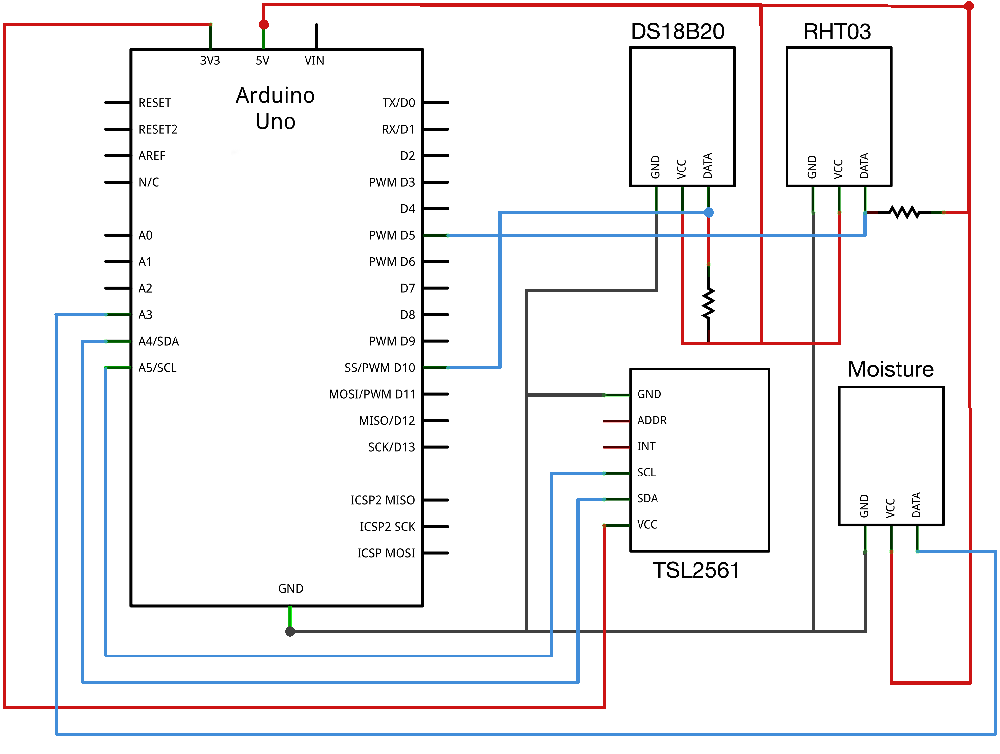

Abstract
The purpose of this thesis has been to explore how students interact and learn with a new scientific inquiry system, Monoplant. The system is an Internet-connected plant, visualizing different aspects of plant biology through a web-interface. The study investigates how this system provides an educational context and how it supports the students’ inquiry process. We performed a design experiment where a biology class performed science experiments using Monoplant. Our data material consists of one hour of video material from a session where four groups of students worked with five questions related to the experiments. We adopted a sociocultural perspective for the analysis and studied how the institutional aspects of the school affect the learning process. The findings indicate that inquiry learning can lead to scientific misconceptions, multiple representations should be used in scientific inquiry, and that students have difficulties combining the requirements of the school setting with the scientific inquiry process.


First and foremost we would like to thank our supervisor Anders Mørch. Your guidance and feedback throughout this thesis has been invaluable for us. We would like to thank Jo Herstad for inspiring chats and support and Hani Murad for help in structuring the work on this thesis.
While working on this master thesis we have been located on the premises of InterMedia and IPED, thanks for letting us use the facilities at Oslo Science Park, and the welcoming attitude in the hallways. Thanks to Alfredo Jornet Gil, Ingeborg Krange and Anders Kluge for valuable tips and suggestions.
A special thanks goes to the students and the teacher, Erik Steineger, in our design experiment. We would also like to thank the school and everybody who helped us make the data collection a reality.
Thanks to the students at IPED, for helpful discussions and useful feedback. Thanks to Christopher and Christian for treasured ping pong matches.
We would also like to thank Tormod Smith Svanevik, Sindre Eide, Estrid Hesselund, and Samuel Chattopadhyay-Reid for taking their time to read and provide useful feedback on this thesis.
Last but not least we would like to thank our family and friends for supporting us. And a special thanks to Lisa and Helena for love and support and for keeping up with a socio-cultural perspective on everything.


With the advent of Internet-connected embedded devices, we face an opportunity to distribute time consuming and tedious tasks to computers. By using digital sensors, one can initiate the collection of quantitative data from our surroundings and do other things while a computer handles monotonous tasks such as logging and storing the data. Say we want to conduct an experiment where we log the temperature throughout a day. Instead of walking over to the thermometer every 15 minutes to write down the temperature, a computer can read and store the temperature in a database. This technology has been used by meteorologists, scientists and commercial operators for a long time, but as the technology is evolving to become cheaper and more widespread, it is now also available for most people.
While automation of data-logging can take less interesting tasks off our shoulders, we think the most interesting thing to look at is how the data is interpreted. As the logged data can be accessed and presented in any way we want, we can give interesting representations of complex phenomenons such as photosynthesis. This creates a great possibility for creating digital content from the real world and design it to be used in educational contexts.
When we started working with ideas for this thesis, our goal was to do research on an actual product in a real world setting. As we chose to develop a system ourselves, a major part of the work on this thesis became to build and complete the system. In 2012 during a project in the course inf5261 - Development of mobile information systems we developed a mixed reality game called Plantagotchi. The idea was to animate a digital version of a real plant, which was affected by how the real plant was treated. In this project the user group was children at the age of 8-12 and the system was planned to be used as a school contest where classes competed in getting the happiest plant. The educational outcome being pupil motivation for learning about growth conditions for plants, so that they could win the game. The prototype developed in this course became the foundation of the system, which in this thesis is referred to as Monoplant.
During the spring of 2013 we both attended the course inf5790 Technology enhanced learning where we were introduced to the field of Computer Supported Collaborative Learning (CSCL). As we brought with us an idea of an application that pupils could use to collaboratively learn about a scientific domain, CSCL became the field where we could adapt theoretical perspectives and concepts. This set words to and explained our personal ideas and experiences.
The basis for this thesis was to perform research on an actual working system, in an authentic environment. We therefore brought with us the ground idea from Plantagotchi and spent a lot of time improving it and developing a new working prototype. In October 2013 we got in touch with a school, and had a fully working plant monitoring system that we could test with real users in their natural setting. The focus in this thesis is therefore directed to this design experiment, performed in a high school biology class. We will also provide some background information about the decisions made while developing our educational system, Monoplant.
Plants live a slow life, they grow slowly and move slowly. Most human beings do not have the patience to watch a plant grow, but we are able to see that it has grown or bloomed. However, humans do have the ability to use tools in order to make sense of the world, and we have created such a tool: Monoplant, which can help us see how plants evolve over time.
Monoplant is a monitoring system for plants, or rather humans who want to monitor their plants. It continuously gathers data about a plant’s environment and makes the data available to the users via the Internet. Using Monoplant one may remotely monitor a plant and get instant data about temperature, humidity, light, soil moisture and even a picture of the plant.
One of the main reasons for designing Monoplant, was that we wanted to see
how plants develop over time, or in biological terms their ontogenetic
development. Hence we tried to combine the different readings over time to see if
we were able to observe if some of the variables affected the plant physically. The
first step became to merge the images taken into a time-lapse video. This made it
possible to see a plant’s physical development throughout a day in a matter of
seconds. In order to link this with the variables from the environment, we had to
connect each image in the video to its corresponding data reading. This is done by

 presenting a graph together with the time-lapse video and marking the point in
the graph which corresponds to the current image in the video (see fig. 1.2).
Thus we are connecting visible changes of the plant (i.e., the video) to
invisible changes in the environment (e.g., soil moisture and humidity
levels).
presenting a graph together with the time-lapse video and marking the point in
the graph which corresponds to the current image in the video (see fig. 1.2).
Thus we are connecting visible changes of the plant (i.e., the video) to
invisible changes in the environment (e.g., soil moisture and humidity
levels).
As mentioned, the overall theme of this thesis is how students can use Monoplant in their scientific inquiry when learning about photosynthesis in a biology class. This will be investigated through an analysis of a study performed in the autumn of 2013. In order to address this broad theme we will try to answer four research questions.
What characterizes the students’ inquiry in interaction with Monoplant?
This will naturally adress the characteristics of the students’ actions and
interactions during their work with Monoplant. This question will also be
elaborated through the next three questions.
How does Monoplant, by presenting photosynthesis differently from how it is
rendered in the text book, support the inquiry process?
This question is indicating that there is a difference between the
representation of photosynthesis in the school textbook and in Monoplant. To
answer this we will address these differences, and discuss what implications
they have in the students’ inquiry process.
In what way is scaffolding operationalized in the environment?
For this question to make sense, we need to introduce the theoretical concept
of scaffolding and put it in a broader context of instructional theory. This will
be elaborated later in the thesis, but for now we can call it training wheels.
We will look at how the teacher and Monoplant help the students in their
inquiry process.
How does the institutional setting frame the students’ inquiry process?.
As the study took place in a school setting, we wanted to look at how the
social practices within school affected the inquiry process.


Although our research questions set focus toward describing characteristics of student interaction in our design experiment, we will also try to be prescriptive in terms of further research and improvements in the design of Monoplant.
We will now present an outline for this thesis, providing an overview of the contents as well as the structure.
The introduction presents our personal and professional motivations for writing this thesis, a brief introductions to Monoplant followed by the research questions, and lastly this ”readers guide”.
This chapter is an introduction to photosynthesis and thereby the scientific language within the domain. The introduction represents what the students in our case are supposed to learn in Biology 2. It is provided as a tool to understand what we mean later in the thesis when using domain specific terms such as ”light dependent reaction”, and ”chlorophyll molecules”.
A major part of the work done for this thesis to become a reality was to design and build Monoplant. In this chapter we will describe Monoplant’s architecture and address some of the technical concerns we met during the development process. We will introduce Raspberry Pi, Arduino, Ruby on Rails, REST and other frameworks and tools used to build Monoplant.


In this chapter we will present the research field computer-supported collaborative learning. Further we introduce the sociocultural perspective, along with the theoretical concepts: spontaneous and scientific concepts, zone of proximal development (ZPD), scaffolding, multiple external representations (MER), institutional settings, inquiry learning and misconceptions. Focus will lie on our interpretation of these concepts as we will use them later in the thesis in order to answer our research questions.
Throughout October 2013 we gathered data for this thesis. In this chapter we will introduce design based research together with the systemic and dialogic approach. We describe the empirical setting in which the data gathering took place, along with the methods used for collecting the data and how we used those methods. Then we will explain how we approached, selected and made sense of the data once the data collection was done. Lastly, the quality of our research will be addressed.
Here we will present the main findings from our study. The chapter contains ten data extracts, which are presented one by one. First by a context description, then a data transcript and finally a clarification and analysis of what happened.
In this chapter we will discuss our research questions by applying the theoretical concepts introduced in chapter 4 to our findings in chapter 7. Our first research question, What characterizes the students’ inquiry in interaction with Monoplant?, will be the overall theme of this chapter, but all four of the questions will be addressed.


Our concluding remarks will provide the reader with an overview of how we
approached this thesis and a review of our main findings according to the research
questions. Lastly we will present shortcomings and suggestions for further
work.


In this chapter we will first give a rudimentary introduction to photosynthesis as it is described in the curriculum for Biology 2 (Sletbakk et al., 2008). Then proceed to some monitoring and automated systems, which will lead to the next chapter, an introduction to Monoplant and its technical specifications.
The variables that we monitor in our application are directly linked to one of the
preconditions of all life on Earth, photosynthesis. During this process
plants transform energy from light to chemical energy in the form of e.g.,
glucose and starch. As most organisms are not able to utilize the energy
of light directly, plants are a necessity for producing energy that other
organisms can transform. The equation for photosynthesis is written as:
(CO
2)n + (H2O)n + photons ] (CH2O)n + (O2)n, which means that carbon
dioxide, water and light transform to glucose and oxygen.
] (CH2O)n + (O2)n, which means that carbon
dioxide, water and light transform to glucose and oxygen.
Photosynthesis consists of two main parts: the light-dependent reaction, and the light-independent reaction. The light-dependent reaction, as the name implies, occur only in the light. The light-independent reaction occurs both in the light and dark, but does not rely on energy from photons.
The light-dependent reaction consists of two different photosystems (photosystem 1 and photosystem 2) creating adenosine triphosphate (ATP) and nicotinamide adenine dinucleotide phosphate (NADPH) molecules for the light-independent reactions. Both systems are located in the thylakoid membrane inside the chloroplast organelles (see fig. 2.1). In the process, photosystem 2 precedes photosystem 1 as photosystem 1 was discovered first.
In photosystem 2, antenna-complexes consisting of pigments, proteins and enzymes absorb light of different wavelengths and transfer the energy to chlorophyll molecules (Sletbakk et al., 2008). The energy leads to electrons jumping to an orbit lying further from the nucleus, making the atom excited. This makes the atom unstable, and a perfect candidate for giving away its electrons to electron-acceptors in an electron-transport chain.
Since the chlorophyll loses two of its electrons in the process, it gets positively charged and need to find new electrons to be able to absorb photons again. This happens by taking two electrons from a water molecule absorbed by the plant’s roots, which then gets split into 2 H+ and 1 2O2 (Sletbakk et al., 2008). The oxygen dissolves in the air, while the hydrogen protons are “trapped” on the inside of the thylakoid membrane (lumen). This makes the lumen positively charged relative to the stroma, which enables generation of ATP-molecules from ADP- and P-molecules.
Photosystem 1 consists of the same parts as photosystem 2, but instead of splitting water molecules, it receives two electrons from the electron transport chain in photosystem 2. These electrons gets transferred out in the stroma, and are then tied together with an h+-proton and NADP+ to produce NADPH.
This reaction works as a “sugar-factory”, collecting carbon dioxide and hydrocarbon in many cycles to make glucose. The process takes place in the stroma (see fig. 2.1), and requires the NADPH and ATP generated in the light-dependent reaction (Grønlien et al., 2008).
The glucose produced can be used to generate other organic compounds such as other carbohydrates (e.g., starch and cellulose), proteins and lipids, depending on what the plant needs.
Many external factors affect the photosynthesis in plants. As photosynthesis is a relatively inefficient process, using only 8-10% of the energy in sunlight, much research has gone into increasing photosynthesis to achieve greater conversion rates (Kirschbaum, 2011). The factors of significance are (Sletbakk et al., 2008):
Each of these factors may be a limiting factor, or stressfactor, not enabling photosynthesis to reach its full potential.


CO 2 is used in the light-independent reaction for making glucose. The atmosphere contains approximately 0.038% CO2, while the air in e.g., a classroom would most likely contain slightly higher values due to a high concentration of students exhaling CO2. In a greenhouse CO2 levels can get too low, due to a high concentration of plants consuming CO2 and outputting O2. The optimal concentration for most plants is between 0.015% and 0.05% (Sletbakk et al., 2008).


All enzymes have an optimal temperature during which they function best (Sletbakk et al., 2008). This temperature may vary from species to species as plants grow in different climates, altitudes and seasons. If the temperature is too low or too high, the molecular structure of the enzymes may be destroyed.
The different pigments in the light dependent reaction absorb light of wavelengths from mainly 400nm to 700nm. Chlorophyll b for instance absorbs blue light (450nm). If a plant with a high concentration of chlorophyll b is not given light of this wavelength, the electrons would not be excited and the reaction in photosystem 2 would not start.
Light intensity also plays a role in this reaction. In low light conditions, there is not enough energy available to excite the chlorophyll molecules, in order to move electrons as needed in photosystem 2. In optimal light conditions, the production is light-saturated meaning that all the chlorophyll molecules are exciting electrons. In too strong light conditions, the chloroplasts may burn out from the heat and die.
Water is used in both the light-dependent and light-independent reactions, but is
seldom a limiting factor. If water-levels are low and the evaporation-rate is high,
most plants will close their leaves to minimize water-loss. This makes the plant
unable to absorb CO2 and photons, which leads to plant reduction (Grønlien
et al., 2008). Water shortage is only a problem in itself when the plant’s cells
dries out, leading to the stem and tissue collapsing.


In this chapter we will present the technical aspects of our learning tool, Monoplant. We will explain the rationale for the design choices made, and go into detail on some of the more advanced parts of the system. We will not give an in-depth explanation of all the technicalities, but rather present an overview to give the reader some background to understand the learning opportunities built into the system.
The application is divided into three logical units: data collection, data processing and storage, and user interface. In the following sections these units will be explained further.
At the lowest level in the information hierarchy is the hardware and software responsible for capturing and uploading environmental data regarding the plant. Like a patient in a hospital, the plant is connected to a range of sensors, each responsible for reading a specific variable that is important for the plant’s functioning. These variables are sent to a computer, processed, and uploaded to the next level in the data hierarchy. In the following sections we will follow the data on its way from the plant’s physical location to the ”cloud” and the user.


| Sensor | Description |
| TSL2561 | Digital luminosity sensor. Measures light in lux from 300-1100nm. |
| RHT03 | Digital humidity and temperature sensor. Measures relative humidity and temperature in celsius. |
| DS18B20 | Digital waterproof temperature sensor. Measures temperature in celsius. |
| DFRobot sku:sen0114 | Analog soil moisture sensor. Returns values between 0 and 900 depending on electrical conductivity of soil. |


With the advent of the ”internet of things”, sensors are becoming available in many different forms and packages. They are cheap and can be used as modular building blocks in a wide range of applications, from automating tasks such as keeping a steady indoor-temperature, to measuring variables that humans cannot see.
The sensors are able to capture information concerning the environment and transform it to data variables, which we can store and categorize. In total there are five different sensors connected to the plant, or in the plant’s vicinity: soil moisture, soil temperature, air temperature, humidity, and light intensity.
The sensors we have used in this project are analogous to a volume controller on an amplifier. On an amplifier one can adjust the volume by varying the resistance in the signal going to the speakers. If we turn the volume up, the resistance goes down, and if we turn the volume down, the resistance goes up. Sensors work in the same way, but instead of controlling resistance with a volume knob, it is controlled by light, moisture or other environmental variables.
To exemplify let’s look at temperature sensors, or ”thermistors”. They vary their resistance in relation to the temperature. Since we already know how many volts we are sending to the thermistor on the one end, we can use the amount of volts we get back to calculate the resistance. In our application this is done by a voltage divider, which uses a formula as follows:
 | (3.1) |
Where V out is voltage out, V in is voltage in, R1 is a given resistance, and R2 is
the resistance we want to calculate. For this example let’s assume that

 V in = 5v, V out = 2v, and R1 = 1KΩ. We solve this equation with regard to
R2
V in = 5v, V out = 2v, and R1 = 1KΩ. We solve this equation with regard to
R2
 | (3.2) |
 | (3.3) |

 " class="math-display" >
" class="math-display" > | (3.4) |
 | (3.5) |
Then we can see that the calculated resistance is 667Ω. This value can then be mapped to the correct unit of measure, in this case Celsius or Fahrenheit.
As we are using digital sensors, all of these calculations are done internally in the sensors, and coded into a digital signal. This signal is then passed onto the next unit in our system, the Arduino.
Arduino is an open-source prototyping platform that makes it easy to interface low-level electronics (i.e., sensors) with higher-level electronics (i.e., computers). The core part of the Arduino is an Atmel™Atmega microcontroller, which can be programmed by a computer over a USB port, using the Arduino programming language and the Arduino development environment (arduino.cc, 2013).





The community surrounding Arduino is quite large, and we have therefore been able to find pre-written libraries for communicating with the different sensors. This has simplified the task of converting the digital signal to the correct units (celsius, relative humidity, lux).
In the case of the soil moisture sensor, it measures conductivity in the soil, and does not output moisture levels in any kind of universal measuring unit. But the conductivity measured in the soil is repeatable and proportional to the moisture level. Therefore we measured the resistance in air (high resistance), and in water (low resistance), and let these be the high and low points of a new unit called arbitrary moisture units (AMU) (Ciuffo, 2013).
The code residing in the Arduino runs a simple loop where it waits for a special character sent over serial communication through USB. If it receives this character it reads all the sensor values, and sends them back to the next device in the Monoplant system: the Raspberry Pi
The Raspberry Pi is a “cheap, accessible, programmable computer” (raspberrypi.org, 2013), which is roughly the size of a credit card. Our model was released in early 2012 and contains two usb ports, audio and a sd-card slot. We have connected a wireless network adapter, a high-definition webcam, a powered USB-hub, and an Arduino to the Raspberry. The operating system running on it is a port of Debian Linux optimized for the Raspberry, called Raspbian.
After booting up, a bash-script running an endless loop is called. The script snaps a photo of the plant using the webcam, and then runs a python-script responsible for collecting sensordata (see fig. 3.4). Since we sometimes can get erroneous values from the sensors, we read 15 values and upload the median value. These values, along with the photo captured by the webcam, are then passed on to the next logical unit in the Monoplant system.


When the data has been gathered at the low level hierarchy, it is stored in the cloud. This is done by posting the data to an application programming interface (API) on our web server. The main function of an API is to be a means of communication between different software, in our case the data collector, and the user interface. After some research on web-API design, we decided that a REST architectual style was best suited for our application.
REST is an architectual style for distributed hypermedia systems (Fielding, 2000). In Fielding’s dissertation, he writes about the interaction constraints of REST that is introduced in order to limit how a distributed system can be constructed.

 sending equivalent requests. This can greatly enhance user-perceived
performance, but at the same time reduce reliability if cached data
differs from what would have been delivered by the server on a request.
We could theoretically cache almost everything since our data belongs
to specific timestamps, and the chances that a sensor value is updated
at a later time is minimal. However, since we are developing a prototype
and have the need for rapid changes in the implementation, we have
experienced that the need for reliable data exceeds the need for fast
performance.
sending equivalent requests. This can greatly enhance user-perceived
performance, but at the same time reduce reliability if cached data
differs from what would have been delivered by the server on a request.
We could theoretically cache almost everything since our data belongs
to specific timestamps, and the chances that a sensor value is updated
at a later time is minimal. However, since we are developing a prototype
and have the need for rapid changes in the implementation, we have
experienced that the need for reliable data exceeds the need for fast
performance.
...efficient for large-grain hypermedia data transfer, optimizing for the common case of the Web, but resulting in an interface that is not optimal for other forms of architectural interaction. (Fielding, 2000, p. 82)
In an applied context this means that the server has resources that can be referenced via URLs and operated through the HTTP-verbs. In order to be a true REST interface, an API can have any resource available through URLs, but the only methods in which one can operate the resource is POST, GET, PUT and DELETE.


REST is an architectural style, not a strict standard. It allows for flexibility, but at the same time promotes best practice. The goal for our API was to provide a way of storing and accessing plant data in the cloud, first and foremost for our own client side applications. Our objective was to create something that worked for us. A pragmatic approach to REST gave us the flexibility to create an API that gets the job done. In the following chapter we will describe how our API works, and discuss some choices we made in the implementation process.
Our first implementation of the API was written in PHP using the framework Codeigniter. This worked well for a while, but after having made several dirty hacks and workarounds we decided to look for other options. After researching Ruby on Rails and their focus on ”convention over configuration”, we found that it was a framework well suited for building our API.
Ruby on Rails is an open-source web framework thats optimized for programmer happiness and sustainable productivity. It lets you write beautiful code by favoring convention over configuration (Heinemeier Hansson, 2013).
Ruby on Rails (RoR) makes the assumption that there is a ”best” way of doing things, and encourages that way. It emphasizes well-known software engineering principles such as convention over configuration, don’t repeat yourself (DRY), model-view-controller and REST.
Our web server is running on Amazon Elastic Compute Cloud (ec2), a virtual computer service with low costs and extensive configuration options. We chose this because we needed to be able to configure the server for our purposes and install several libraries and applications onto the server.
Our API is a server-side Web-API that can be accessed through the
HTTP-protocol. To use it, one can send a request to the domain of the API
from any client that can send HTTP-requests. The API will interpret
the request and respond based on how the interpretation went. Since
our API is based on the REST architectual style, it adheres to how the
HTTP-protocol is built, meaning that a resource has a unique identifier, a URI,

 and some uniform actions called the HTTP-verbs which the resource
can be operated with. There are 8 methods in the HTTP/1.1 protocol
(Fielding et al., 1999, p. 36), but only four of them are of interest when
speaking of resources. These are the four basic functions of persistent storage
in computer programming, often referred to as CRUD (Create, Read,
Update and Delete), but in HTTP their names are POST, GET, PUT and
DELETE.
and some uniform actions called the HTTP-verbs which the resource
can be operated with. There are 8 methods in the HTTP/1.1 protocol
(Fielding et al., 1999, p. 36), but only four of them are of interest when
speaking of resources. These are the four basic functions of persistent storage
in computer programming, often referred to as CRUD (Create, Read,
Update and Delete), but in HTTP their names are POST, GET, PUT and
DELETE.
The Monoplant API has three resources: Plants, Sensorvalues and Videos. To
create a plant, one can send a POST request to the URL:


A post request also needs information about the plant to create, in this case we will pass that information in the json-format (see fig. 3.5).
For the API to know how to interpret this information in json, we also need to pass a parameter in the header called Content-type, this variable will be set to “application/json”. When we pass this request, the API will create a plant with the information we gave it, and give a HTTP response with the code: "201 created". The response contains a header and a body. The header has some meta-data about the request and the body will contain a representation of the created plant (see fig. 3.6).


If we look at this representation, we see that the API has added an ID to the
plant as well as the two data attributes created_at and updated_at. Since we now
have the id of the plant, we can tell the Raspberry Pi to start adding sensor
values for that specific plant. The Raspberry will create a request using the data
it gets from the Arduino and the image from the webcam and finally send that
POST request to the URL:


As in the first example the API will interpret the request, store the data, and
respond with a status code: "201 created". In the background, the API will
generate a thumbnail of the image and upload both the thumbnail and the
original to another static server, finally storing the URL for both of them in a
database. The response body ends up looking as shown in figure 3.7. If we need to
look at this sensorvalue at a later time, we can simply do a GET request
using the sensorvalue id we got from the previous response and call the
URL:


This will make the API respond with a status code "302 Found", and the body will look just like the previous response body, unless it has been updated in the meantime. Note that the URL is built up according to which resource we are trying to operate. See table 3.2 for an overview of how these URLs are built up.
Now that the data from the plant is securely stored in a database and accessible through the API, we move on to how these data are further processed to generate timelapse videos.


| part of URL | meaning |
| http:// | the protocol we acces the API through |
| Monoplant.me | the domain of the API |
| /plants/(:id) | /plants states that we want to access a resource named plant |
/(:id) is a number representing the specific plant we want to access |
|
| /sensorvalues/(:sid) | /sensorvalues states that we want to access a resource named sensorvalue. Since this comes after /plants/(:id) it means that we will get sensorvalues owned by the plant with (:id). |
/(:sid) is a number representing the specific sensorvalue we want to access |
|
| (.format) | .format can be blank, .html, .xml or .json. If it is blank, the API will respond with the default format, in our case html. |


Regular video cameras capture 24 to 30 images or frames per second (fps), and play them back at the same rate. The events in the video will then unfold at the same speed in which they happened during the shoot. Timelapse photography utilizes this principle by slowing down the rate at which images are captured, while maintaining the playback rate. So for instance if we captured one image per second, and played it back at 24 fps, one second in the film would equal 24 seconds in real life. Thus when played back, time would appear to move faster. This makes it possible to pronounce changes which are subtle to the human eye such as: a sunset, moving clouds, or a plant growing.
Each day at midnight the system collects all the images taken during the day, and combine them to a timelapse video played back at 30 frames per second. As the Raspberry Pi captures approximately one picture per minute, one second in the video equals 30 minutes in real life. One picture each minute equals 60min ∗ 24hours = 1440 pictures each day, which, if we divide it by 30 frames per second gives us a 48 second video representing 24 hours in real life. This equals a speed increase of 1800 times.
Prior to HTML5 there was no standard way of implementing videos on web-pages. Therefore the web was filled with a myriad of different solutions, with QuickTime, RealPlayer, and Flash being the most prominent (Pilgrim, 2010).
In HTML5 we have a new standard <video> element that in theory should give us support for native video in all browsers. But due to the nature of video-files, problems arise when users have different operating systems and different browsers.
A video file consists of a container, a video codec, and an audio codec. The
container defines how the content within is stored, the video codec defines how the
video stream is encoded, and the audio codec defines how the audio is encoded.
Since there exists numerous containers, video- and audio codecs, endless
permutations are possible. Therefore it is not likely that we will have a
combination that would work in all browsers in any foreseeable future
(Pilgrim, 2010).


In order to maximize compatibility in our application, we decided to encode video in three different formats: H.264+MP4, Webm and Theora (see table 3.3). This is done via a bash script that runs every night. First, we run a perl script for ”deflickering”, i.e., calculate and convert the images to a median brightness to reduce video flickering. Then we use the programs Mencoder and FFmpeg2theora to create H.264-, webm- and theora-videos. And finally, the videos are posted to the respective plants in a database, using the API.
Thus, after 24 hours of collecting and storing data, videos in different formats
are generated and Monoplant is ready to display information to the users, which
takes us to next logical unit in the system.


| Codecs/containers | IE | Firefox | Safari | Chrome |
| Theora+Vorbis+Ogg | 3.5+ | 5.0+ | ||
| H.264+AAC+MP4 | 9.0+ | 3.0+ | 5.0+ | |
| WebM | 9.0+ | 4.0+ | 6.0+ | |


The user interface (UI) of Monoplant is where we visualize the data from the API to the users. It is accessible through web (http://www.monoplant.me), and displays correctly on most devices due to a responsive design. The UI is built with RoR as the web application framework, Bootstrap as the design framework, and Highcharts as the graph framework.
The main web page of each plant represents the current state of the plant. On the left side, it displays the last picture with the corresponding temperature, humidity, light and soil moisture. On the right side, there is a timelapse video from the day before, with a corresponding graph displaying all the sensorvalues throughout that day (see fig. 3.8 on page 71).
On the top of the page there are two menu items. The first is called videos and links to the video overview. This is a page containing all the videos for the plant selected. In relation to each video, the max and min values for all the different sensors during that day is shown. The second menu item is called graphs and is a drop-down menu with links to graphs for each of the different sensors. In addition there is a link to the graph containing all the sensorvalues for the last 24 hours.
During our work with the UI, there was two aspects that proved to be particularly challenging: relative graphs, and connecting the timelapse videos to the graph. In the following sections the work to overcome these obstacles will be explained.
There are a few serious javascript chart libraries available with various types of focus, flexibility and documentation. We ran some tests with Google charts, d3.js and Highcharts, and found that Highcharts provided the most extensive documentation as well as an easy to understand interface.
The first graph we had to make was a graph containing all the plant data from a given time corresponding to a timelapse video. This meant putting temperature, light, humidity and soil moisture in the same graph, even though they all have different units.
Our first attempt was done without manipulating the data at all. As Highcharts scales the y-axis based on the element with the highest values, the element with small values appeared as straight lines at the bottom of the graph. In figure 3.9 we tried to combine light levels of 2000 lux with temperature levels at 22∘C, and as we can see, all the elements except light and humidity are concentrated at the bottom.
For this graph to display the environmental changes during a day we needed to create a relative scale and map the values to that scale. To exemplify, lets say you have a number X, which has a value between A and B, and you want to map it to a value Y , between C and D. The function is similar to calculating percentage and can then be written as:
 | (3.6) |


Through trial and error, we chose the C and D values of each unit (see fig. 3.10). Then, after running the data through our new function all the units became visible (see fig. 3.11 on page 80). As we have mapped all the units to relative units, information of the values at the specific data points is lost. But as the graph is displayed along with the video, we wanted to keep the information level low.
Apart from the video-graph and the last 24 hour-graph we provide singular line graphs for each variable. This gives us the ability to display graphs with correct y-axes.
In order to present how changes in sensor variables manifested themselves physically in the plant, we wanted to connect the graph and the timelapse video. The visual solution became to present the video above the graph, both contained within the screen. As the video is playing, a vertical line layered above the graph moves from left to right representing the current point in the video.
The HTML5 video-element can be accessed through javascript, and by checking the state of the video we are able to make the Highcharts graph follow the video based on the currentTime of the videoelement.


By binding startVideo() to the play-event of the video-element and
stopVideo() to the pause and stop event, we are able to move the graph marker as
the video plays. The video-element has a built-in event called timeupdate which
is triggered when the video’s time is changed. However, in practice this event only
appeared 3-7 times per second, giving a lagging experience of the graph marker.
To overcome this we made a custom function using setInterval which turned
out to be a lot faster and more reliable, providing a smooth flow of the graph
marker.


In this chapter we will present computer-supported collaborative learning as a research field. Then lay forth the theoretical perspective and theoretical concepts that have been applied in this thesis. We will introduce the sociocultural perspective and highlight some key points including institutional practices, spontaneous and scientific concepts, zone of proximal development and scaffolding. Further we will look at multiple external representations and lastly the concept and method of inquiry learning.
This thesis is positioned within the research field of computer-supported collaborative learning (CSCL). The field is concerned with how people learn together with the use of technology, both distributed and co-located. This also includes how we design technology for collaborative learning, and how we understand the actions and activities mediated by information and communication technology (ICT) (Ludvigsen and Mørch, 2010; Stahl et al., 2006).
The field emerged in the 1990s as reaction to ”...software that forced students to learn as isolated individuals” (Stahl et al., 2006). In a knowledge-based society we need to learn complex, domain-specific skills and the ability to work in teams. These skills are difficult to teach through memorizing and fact-finding (Ludvigsen and Mørch, 2010; Sfard, 1998). The field of CSCL is therefore concerned with ”teaching and learning the knowledge and skills required for participation in the knowledge-based society in concert with the basic skills they rely upon” (Ludvigsen and Mørch, 2010, p. 2).
The first part of CSCL, computer support, directs focus on how technology can be designed for educational contexts. This acknowledges that computer support holds some features that demands more than simply transferring analog content to digital platforms. Stahl et al. (2006) presented a number of differences between CSCL and traditional views of e-learning.
First, the idea that digitalizing educational content automatically makes for
compelling instructions is challenged. While digital content can prove beneficial as
resources for students, it can only be effective within a larger motivational and
interactive context. Second, although online teaching provides opportunities for
distributed learning, it requires at least as much effort by human teachers as

 classroom teaching. Third, CSCL stresses collaboration among students
and aims to promote design of systems that stimulate and support the
collaborative process. Fourth, CSCL acknowledge the value of face-to-face
collaboration. Computer support can involve co-located learning where the
technology is used as a mediational means in the interaction between
students.
classroom teaching. Third, CSCL stresses collaboration among students
and aims to promote design of systems that stimulate and support the
collaborative process. Fourth, CSCL acknowledge the value of face-to-face
collaboration. Computer support can involve co-located learning where the
technology is used as a mediational means in the interaction between
students.
The second part of CSCL, collaborative learning, directs focus on learning in groups. In order to understand what this entails, a useful distinction is made between the seemingly synonymous terms cooperative and collaborative. Dillenbourg (1999) refers to the distinction with division of labor in mind, stating: ”In cooperation, partners split the work, solve subtasks individually and then assemble the partial results into the final output” (Dillenbourg, 1999, p. 8). This is opposed to collaboration where ”...partners do the work ’together’” (Dillenbourg, 1999). This implies that the students together construct the knowledge needed for solving the task at hand. Learning is then seen as something that happens socially, within a group (Stahl et al., 2006).
The goal of CSCL-research is two-fold. On the one hand, the field is concerned with creating (digital) artifacts that can be used withing learning, and creating learning environments that enhance the pratices of group meaning making (Stahl et al., 2006). On the other hand, the ”technology does not exist independent of its use” (LeBaron, 2002 referenced in Stahl et al., 2006), and the design of software must therefore be done in concert with analysis of the meanings constructed within emergent practice. In order to design computer support for collaborative learning, we therefore need to understand how students collaboratively construct shared meaning in interaction with artifacts. As collaboration depends on externalization of thought, the students must negotiate their meaning making by displaying their understanding. Researchers can then use these interactions as data to be analyzed (Stahl et al., 2006).
While CSCL does not provide an established body of broadly accepted
laboratory and classroom practices, it does provide a vision of what can be done
with the help of computers, and what kind of research should be conducted (Stahl
et al., 2006). In the work with Monoplant, we have positioned ourselves within
the field. The theoretical concepts, methodology and methods applied in
this thesis are therefore inspired by earlier and similar work by other

 CSCL-researchers.
CSCL-researchers.
In a biological sense the human species has not evolved significantly the last ten thousand years or so. In fact, changes in our gene pool are only minor, and can not explain the differences between modern people and people of the Stone Age. Still we are able to achieve tasks that would have been impossible for our ancestors (Säljö, 2001).
The explanation of this discrepancy from a sociocultural perspective becomes evident when one take into account the tools and signs we use to mediate the world. We have created a culture where each of the tools and signs we use have a long history embedded in them. If you are given the multiplication problem 122 × 284, you can flip up a calculator and get the answer instantaneously. Similarly, if you were to solve the multiplication problem 7 × 4 you can look up in a multiplication table and find the answer easily. These cultural tools (calculator and multiplication table), with knowledge embedded in them, enables you to make sense of the world in a different way than our ancestors.
From the example given above we can see that there is an “irreducible tension” between the agent and the cultural tool (Wertsch, 1998). Without the multiplication table you would not be able to solve the problem. But the multiplication table is not enough, as it would have been useless without a skilled user. The goal of a sociocultural approach is therefore to:
...Create an account of human mental processes that recognizes the essential relationship between these processes and their cultural, historical, and institutional setting (Wertsch, 1991, p. 6).
This means that the unit of analysis is human action, and how it is mediated
by cultural tools, or “agent-acting-with-mediational-means” (Wertsch et al., 1993
referenced in Wertsch, 1998). The mediated action can never be understood by
the properties of only the agent, the mediational means, or the cultural, historical
and institutional setting of the mediated activity. An example of this is H2O: one
can not understand what makes up water if one analyses hydrogen and oxygen

 separately. The characteristic of the whole is not made up by the characteristics of
the elements (Vygotskiĭ et al., 1978). Another example is the track-and-field
event of pole vaulting.
separately. The characteristic of the whole is not made up by the characteristics of
the elements (Vygotskiĭ et al., 1978). Another example is the track-and-field
event of pole vaulting.
The pole by itself does not magically propel vaulters over a cross bar; it must be used skillfully by the agent. At the same time, an agent without a pole or with an inappropriate pole is incapable of participating in the event (Wertsch, 1998, p. 27).
So while analysis of the elements in isolation may be informative, we will never understand the big picture without taking into account the relation between the mediational means, the agent, and the sociocultural context.
One important distinction to make when talking about mediated activity is that of tools (physical tools) and signs (psychological tools) (Vygotskiĭ et al., 1978). While they are similar in that they can play a mediating role in activity, they are different in the ways they orient human behavior. The tool is externally oriented and must lead to change in physical objects. A basic example of a tool is a hammer. An agent can mediate her activity toward the external world by using the tool to crush a coconut. A sign on the other hand is internally oriented and ”changes nothing in the object of psychological operation” (Vygotskiĭ et al., 1978, p. 55). Examples of signs are: diagrams, drawings, language, or as mentioned above, multiplication tables. “It is a means of internal activity aimed at mastering oneself” (Vygotskiĭ et al., 1978, p. 55).
Another illuminating example of the difference between tools and signs is that of a child presented with a birthday cake. The child does not immediately start eating, but waits until “happy birthday” has been sung and she has blown out the candles. In that sense the cake is a sign as it represents a lot more than just food in the mind of the child. It signifies that she is a year older, that she is going to get presents afterwards, that she is celebrated, etc. On the other hand, from the parents’ point of view, the cake can be used to signify that she is a year older and has new responsibilities in the society.
If we look at the same example from a behavioristic point of view, another
situation emerge. The behavioristic model focuses on the role of the individual

 and the notion that knowledge arises through individual drill and practice. The
girl would therefore know from previous experience that cake tastes good, and
immediately start to dig in.
and the notion that knowledge arises through individual drill and practice. The
girl would therefore know from previous experience that cake tastes good, and
immediately start to dig in.
In contrast, the cognitive model focuses on thought processes and the notion that the environment provides raw material for testing innately conceived hypotheses. The reason for the girl not eating the cake would therefore be an internal thought process, and the context in which the cake is placed would play a minor role.
“From a sociocultural perspective learning is understood as mastery and appropriation of cultural tools” (Wertsch, 1998, Säljö, 1999, 2001, cited in Mifsud and Mørch, 2010, p. 152). Wertsch (1998) does however make a distinction between knowing how to use a cultural tool (mastery) and making a cultural tool one’s own (appropriation). Appropriation can be to take the mastery one step further. Oxford dictionary defines it as “the action of taking something for one’s own use”, or as Wertsch (1998, p. 145) puts it: “making a cultural tool one’s own”. One example of this is a person who has mastered the cultural tool ”chords” on a guitar and later appropriates them to a song. It should however be recognized that both mastery and appropriation does not always happen. For example, a person could master the chords on the guitar and perform them flawlessly in class, but dismiss them as terribly ugly at home. Likewise, a person can appropriate chords to a song without mastering the chords themselves.
When we are asking what learning is from a sociocultural perspective, we are also asking which cultural tools are valued, and in which contexts do they apply (Mifsud and Mørch, 2010). In order to give an answer to these questions, we have to take into account the cultural, historical and institutional context of the mediated activity.
To set the scope for our thesis we have decided to place an emphasis on the institutional part of the context, while still acknowledging that the context also has cultural and historical aspects.
With a sociocultural perspective on learning, we see external and internal
processes as intertwined. By this we try to see student interactions with artefacts

 and each other as embedded in a cultural, historical and institutional practice,
meaning that we take into account the relation between the mediational means,
the agent and her contexts. As Furberg (2009b) states, social practices can be
embedded into cultural artefacts or more specifically: in the design of computer
based environments. She mentions two types of social practices embedded in
Web-based inquiry learning environments: scientific inquiry and institutional
practices.
and each other as embedded in a cultural, historical and institutional practice,
meaning that we take into account the relation between the mediational means,
the agent and her contexts. As Furberg (2009b) states, social practices can be
embedded into cultural artefacts or more specifically: in the design of computer
based environments. She mentions two types of social practices embedded in
Web-based inquiry learning environments: scientific inquiry and institutional
practices.
Scientific inquiry is often expressed by encouraging students to do ideal scientific activities e.g., hypothesis generation, evaluating evidence and constructing explanations. Institutional practices can be expressed in terms of school science as an institutional practice, for example by means of tools that enable the teacher to supervise the students, assignments that makes the students think as if they are beeing assessed, or tools for the students to test their own skills. These practices can also include metaphores taken directly from the institution of school, for example as shown in figure 4.1 where all the assignments states that you need to be logged in as a student to type in an answer. These ”embedded institutional practices can be, and often are, at odds with the ideal practices of scientific inquiry.” (Chinn and Malhotra, 2002, referenced in Furberg, 2009b, p. 400)
Likewise Jimenez-Aleixandre et al. (2000) pose that ”doing science” has an obstacle named ”doing school”. Where ”doing science” refers to argumentation or dialog characterized by “construction, representation, evaluation of knowledge claims and investigative methods” (Jimenez-Aleixandre et al., 2000). While ”doing school” refers to what actions and activities students and teachers do that instantiates rituals, routines and expectations in educational settings, e.g., review homework assignments, take lecture notes, take tests, complete lab activities etc.
These school activities are often taken for granted by researchers, and serve as obstacles for ”doing science”, which tend to be a focus-area for researchers. Such research has contributed to the understanding of students’ argumentation and knowledge claims, but as Furberg and Ludvigsen (2008) suggests; a more holistic view is needed to get a rich understanding of the complexity of students’ meaning making. Meaning that both the dimension of ”doing school” and the dimension of ”doing science” needs to be taken into account.
In the early stages of life, children learn for the most part by experience. Skills such as mastering the native language, walking, and running are learned through trial and error. This means that the knowledge of a concept is linked to the concrete experience where the concept was presented. A child who is presented with the concept of ”brother” by a pointing gesture toward her brother, will at first only associate the word ”brother” with that specific person. This is what Vygotskiĭ calls a spontaneous concept.
An only child on the other hand, will be introduced to the concept of brother through other concepts. A parent can for instance say that ”brothers are boys who have the same parents”. The concept of brother will then be a general concept for the child, not linked to any concrete experiences, but to the concepts of ”boys” and ”parents”. This is what Vygotskiĭ calls a scientific concept.
Spontaneous concepts are developed outside the conceptual framework
and only linked to concrete experiences in the mind of the learner. If
we presented the child having a brother with the abstract problem of a
”brother’s brother” (Vygotskiĭ, 2012) he would become confused, as his
only knowledge of the concept of brother is in situations with his own
brother.


In contrast, scientific concepts are developed within a conceptual framework. They are immediately given a place within the system of concepts, i.e., explained by their relation to other concepts. As a result, the child is consciously aware and able to reflect on the concept (Van Der Veer, 1998). If we presented the only child with the abstract problem of a ”brother’s brother”, he would most likely be able to solve it because of the concept’s relation to other concepts in the mind of the child.
Another example is how children develop a concept of time. In the early stages of life, a child may think that day and night is analogous to light and darkness. This is the spontaneous concept, which is saturated by experience. It is only later in life he learns the scientific concepts of the earth’s rotation and its relation to the sun and the moon, which marks days and years. This information has not been appropriated by experience, as the child has not been to space and experienced it, the information is constructed using different signs linked together by the instructor.
The relationship between these two categories can be explained as an inverted pyramid. On the top we have the scientific concepts, which are general and abstract. And on the bottom we have the spontaneous concepts, which are specific and concrete. The concepts then move toward each other. The scientific concepts move downwards ”toward greater concreteness” in a deductive manner, whereas the spontaneous concepts move ”upward toward greater abstractness” (Vygotskiĭ, 2012) in a inductive manner.
Even though the concepts move in opposite directions, there is a mutual dependency between them. In Vygotskiĭ’s terms: ”In working its slow way upwards, an everyday concept clears a path for a scientific concept and its downward development”. This means that ”...the development of a spontaneous concept must have reached a certain level for the child to be able to absorb a related scientific concept” (Vygotskiĭ, 2012, p. 194). It is therefore essential for the teacher to bring the spontaneous concepts up to a level that makes the scientific concept within reach for the student. By doing this, the student will have the experience, and the related concepts necessary for constructing knowledge of an abstract concept.
This brings us to the zone of proximal development, as students who lack consciousness and control over the spontaneous concepts can ”...find this control within the zone of proximal development” (Vygotskiĭ, 2012, p. 194).
Lev Vygotskiĭ was concerned with the relationship between learning and development, and argues that the theorists of his time such as Piaget, James and Koffka does not provide an adequate view of this. He finds that learning and development are interrelated, and that this relationship has some specific applications in school-learning. (Vygotskiĭ et al., 1978, p. 84) Thus, in order to describe these issues he introduces the concept zone of proximal development (ZPD), and defines it as follows:
The distance between the actual developmental level as
determined by independent problem solving and the level of
potential development as determined through problem solving

 under adult guidance or in collaboration with more capable peers
(Vygotskiĭ et al., 1978, p. 86).
under adult guidance or in collaboration with more capable peers
(Vygotskiĭ et al., 1978, p. 86).
The actual developmental level is in other words determined by looking at what a person can do alone. Vygotskiĭ found that this traditional way of determining a person’s mental development does not hold in school learning, as it only describes what functions in a person that have already been matured. He therefore introduces a new developmental level, the potential development, which can describe the functions in a person that are in the process of maturation. The actual development is therefore the end product of developing, while the potential development is the state and process of developing. The ZPD can be used as a tool by teachers and instructors to delineate the immediate future of their students, i.e., their actual development of tomorrow.
Vygotskiĭ proposes further that ZPD is an essential feature of learning, which distinguishes learning from development, but at the same time provokes developmental processes that would not be possible without learning. In other words,
It awakens a variety of internal developmental processes that are able to operate only when the child is interacting with people in his environment and in cooperation with his peers (Vygotskiĭ et al., 1978, p. 90).
By applying the ZPD to learning situations, the key takeaway is that the analysis alters the traditional view of knowledge or mastery, and shows that the constructed knowledge provides the basis for further development. A great example of this is the process of mastering native language, which initially is learned as a means of communication between the child and other people. The use of language first happens on a social level, in the interaction with people, and is later developed to internal speech and becomes a means to organize thought, i.e., an internal mental function. Vygotskiĭ calls this concept the duality of learning (Vygotskiĭ et al., 1978).
Another classic example is that of a child trying to grasp a ball. At first the
gesture means nothing to the child, but when the mother realizes that the gesture
indicates something, the situation changes dramatically. When she gives him the
ball, as a result of the hand gesture, the ”...grasping movement changes to the act
of pointing” (Vygotskiĭ et al., 1978, p. 56). This means that the operation that
was initially an external activity is now ”...reconstructed and begins to occur
internally” (Vygotskiĭ et al., 1978, p. 57). Thus, externalization precedes
internalization.


With this in mind, a teacher can understand what developmental processes is maturing in their students, and from that give adapted challenges, show partial solutions and in general tailor what to say and teach next. From this perspective, development is lagging behind learning, and the challenge for the teacher becomes to teach ahead of development, but at the same time not too far ahead. This leads us to the concept of scaffolding, which can be argued to be a refinement of ZPD.
Vygotskiĭ’s zone of proximal development is the distance between what a person can do alone and what he can do with help from a more knowledgeable other (MKO). What types of help and how the MKO should provide it, has not been a focal point for Vygotskiĭ. Although Wood, Bruner and Ross does not reference to any Vygotskiĭan literature, the term scaffolding introduced by them in 1976, bears resemblance to the very idea of ZPD. As they put it:
Scaffolding consist essentially of the adult ”controlling” those elements of the task that are initially beyond the learner’s capacity, thus permitting him to concentrate upon and complete only those elements that are within his range of competence (Wood et al., 1976, p. 90).
Thus, scaffolding can be applied by MKOs in order to keep the learning process within the learner’s ZPD. There is a is a nuanced balance for how much guiding is needed and a key point is that a person’s ZPD is personal, thus a scaffold should be personally adjusted. An example can be if we were to teach two persons how to take a picture with a professional DSLR camera, one being an old woman (Mary) with little insight in technology, the other a young man (Ryan) who has grown up with technology. It is obvious that the two persons have different cultural backgrounds and taking a picture have different meanings to them, hence the tutoring of them need to be tailored differently. In the following section we will go through the six steps of scaffolding provided by Wood et al. (1976) using this example.


 demonstrate the discrepancies between what the learner has produced
and a correct solution.
demonstrate the discrepancies between what the learner has produced
and a correct solution.
As presented, some of these steps require planning while others require improvisation. Both the planning and improvisation turns out to be tailored to the specific situation at hand with all the complex contexts the learners bring with them to the situation. The steps can either be carried out manually by a tutor, or be mediated automatically by a computer-based system. Fischer et al. (1991, p. 1) presents one implementation of a computer-mediated scaffold where a critiquing system gives the user a ”...reasoned opinion about a product or action generated by a human”. Another example is from Furberg (2009b) where prompts requiring user-input is used to promote student reflection.
One important thing to note when reviewing the literature on scaffolding by
Wood et al. (1976) and ZPD by Vygotskiĭ et al. (1978) is that these studies are
done on pre-school children. Critics may therefore argue that the concepts are not
applicable to adult learning. Our stance is that when learning new concepts, both
children and adults are alike. New and unknown concepts are new and
unknown both for adults and children, and adults therefore become ”as

 children” when introduced with new learning material. The concepts can
therefore be used to analyse learning in all contexts where learning takes
place.
children” when introduced with new learning material. The concepts can
therefore be used to analyse learning in all contexts where learning takes
place.
Multiple external representations (MER) is often used for conveying information. Textbooks and manuals contain images and illustrations, maps show different information in different ways, and whiteboards are used in addition to speech. With digital technology the possibilities of MER are expanded to include dynamic linking between the representations, and the representations can show dynamic information that is not available in the real world, e.g., visualizing the flow of oxygen.
In an effort to identify the features of MER, Ainsworth (1999) has developed a classification framework. She suggests that MER can serve primarily three different purposes in learning situations:
The three different roles presented above are also the benefits of using MER.
Complementary roles can support students to make up for insufficient knowledge
of one representation by using another, constrain interpretation can “support the
learners’ reasoning about the less familiar representation” Ainsworth (1999), and
finally the learners can gain deeper understanding of the domain by translating
between representations (van der Meij and de Jong, 2006).


On the other hand, when learners are faced with MER they must also undertake additional tasks as to understand the phenomenon or domain in question. This may lead to a heavy cognitive load, which ”...may leave less resources for actual learning” (Sweller, 1988, 1989, referenced in van der Meij and de Jong, 2006, p. 200). A key issue is then to reduce the cost for learners associated with MER, while keeping the benefits.
According to Prince and Felder (2006) science has traditionally been taught in a deductive manner. In the same way as Sherlock Holmes collects piece by piece to form a theory, the students collect pieces of models and illustrations to grasp a scientific concept. Little attention is paid to why the students should learn the material, apart from having to perform on tests.
On the other hand we have the inductive ways of teaching and learning. Instead of beginning with the theory, the students are presented with some sort of task, which becomes the motivation to learn the tools required to solve the task. Examples of this can be to make a battery in a science class, or finding out why potato-chips bags seem more inflated on the top of a mountain than by the sea.
Inquiry learning involves giving the students ”...questions to be answered, problems to be solved, or a set of observations to be explained” (Prince and Felder, 2006, p. 127), or in other words: giving the students incentives to ask for information. There are several other inductive learning methods, such as problem-based learning, discovery learning and project-based learning, which all can be explained with the same statements as inquiry learning. Inquiry learning can therefore be seen as an umbrella term for inductive learning methods. (Prince and Felder, 2006)
Staver and Bay (1987, referenced in Prince and Felder, 2006) differentiates
between structured inquiry (e.g., tutorials), guided inquiry and open inquiry.
Depending on the student’s developmental level, different framings of the inquiry
process are needed. To scaffold the inquiry learning process is not an easy task. In
a review article, De Jong and Van Joolingen (1998) identify four problems that
learners may encounter when engaging with inquiry learning: hypothesis
generation, design of experiments, interpretation of data, and regulation of
discovery learning. They continue to argue for the need of supporting students
during the process of scientific inquiry, providing scaffolds for each of
these problems. The challenge then becomes to ”...guide students to the

 ”right” path, but at the same time letting them discover and make the
discovery their own” (Kluge and Bakken, 2010, p. 247). In other words the
students need to be steered toward the interesting discoveries, but at the
same time have the freedom to explore and not be commanded in any
way.
”right” path, but at the same time letting them discover and make the
discovery their own” (Kluge and Bakken, 2010, p. 247). In other words the
students need to be steered toward the interesting discoveries, but at the
same time have the freedom to explore and not be commanded in any
way.
Misconceptions appear in most educational contexts. According to Gomez-Zwiep (2008, p. 437) students have ”...qualitative differences in his or her understanding of science that is often inconsistent with what the teacher intended through his or her instruction”. These are often deeply rooted, and remain intact even after instruction. This becomes especially relevant when dealing with inductive learning methods, as the students are given more freedom to explore their own ideas, and thus more freedom to pursue tracks that may lead to different conclusions than the ones intended by the instructor.
The term itself has been given many labels in research literature, depending on the focus: ”alternative frameworks”, ”preconceptions”, and ”student ideas” are just some of them. An important factor here is how misconceptions are perceived. Are they resources for learning, or obstacles that the learner has to overcome? If we look at meaning making from a constructivist point of view, advanced knowledge is built upon prior understanding. Misconceptions then become ”...faulty extensions of productive prior knowledge” (Smith III et al., 1994, p. 152).
To simply write misconceptions off as mistakes is, according to Smith III et al. (1994), a too narrow view in their role in learning. If we take the example of stating that ”multiplication makes numbers larger”, it is indeed an accurate explanation of most multiplication pieces. The problem arises in the few cases where we multiply by non-natural numbers. The conception that leads to erroneous conclusions in some contexts can be quite useful in others (Smith III et al., 1994). The misconceptions are therefore for the students ”...conceptions in their own right with plausibility and at explanatory power” (Smith III et al., 1994, referenced in Larkin, 2012, p. 928).


We have now introduced the sociocultural perspective and several important
concepts within and besides its frames. Further we will use this perspective and
the following concepts to guide our research design and discuss our findings: zone
of proximal developement (ZPD), scaffolding, spontaneous and scientific concepts,
multiple external representations (MER), institutional practices, inquiry learning,
and misconceptions.


In this chapter, we will present the empirical setting and methods used in this thesis. First we will introduce design based research (DBR) alongside the systemic and dialogic approach. Then we will describe the empirical setting in which the data collection took place. Subsequently we will proceed to present the methods for gathering data with a description of the technicalities of the data, followed by a description of the procedures for approaching, selecting and analyzing the data. Lastly we will account for the quality of our research.
Being students from the Department of informatics at the University of Oslo, we have been schooled in the Scandinavian model for system design where the design of software is seen as intertwined with the organizational structures that surrounds its use (Bjerknes et al., 1987). We are therefore used to think of technology within the context that it’s used. Brown’s (1992) research methodology of design experiments was therefore well suited for the work with this thesis, as design experiments lets us take into account all the aspects of the classroom education when inserting technology into it. Or as Brown (1992, p. 141) defines it: ”I attempt to engineer innovative educational environments and simoultaneously conduct experimental studies of those innovations”.
One of Brown’s main points is that there are several independent aspects that make up the classroom. Teacher training, curriculum, institutional aspects, etc. These parts make up a whole operating system and affect each other in complex ways. This implies that we cannot isolate certain elements of the context and analyze them in laboratory settings, as the whole is more than the sum of its parts (Brown, 1992).
As Monoplant is designed for use in educational settings, it could not be examined without taking into account the context in which it was inserted. Design based research as a methodology lets us focus on the contextual aspects that become ”...relevant in the students’ interactions” (Krange and Ludvigsen, 2009, p. 270). This means that we do not limit ourselves to merely examining the technical aspects of Monoplant, but take the whole into account when looking at how the technical solution provides a new context for interaction.


Arnseth and Ludvigsen (2006) introduces a distinction between two approaches to CSCL research: systemic and dialogic. A main feature of studies characterized to be using a systemic approach is that they generate models of how features of the technological system reviewed affects reasoning, collaboration, structures of discourse etc. The analytical focus is on describing the systematic relations between forms of social interaction, and specific types of support or other contextual factors, as well as qualities of outcome (Arnseth and Ludvigsen, 2006). In other words, systemic studies tend to measure how much a specific feature or configuration in a CSCL-tool affects learning outcome in terms of ”measurable” or ”quantifiable” variables. The result of this analytical practice is often a formulation of a model or reformulation of an existing model, which may state that a CSCL application together with a certain practice, are likely to produce a positive learning outcome.
Arnseth and Ludvigsen argue that there has been little interest in the emergent characteristics of actions that take place when CSCL-tools are introduced in schools. As they write:
...we need to examine more closely how the meaning and functions of CSCL applications are actually constituted in practice (Arnseth and Ludvigsen, 2006, p. 181).
Hence they introduce the dialogic approach, where the analytical concern is how computer applications provide a new context for social interaction. Thus, CSCL applications are not treated as a variable where learning outcome can, in relation to other variables, be determined statistically. By combining a dialogic approach with doing design based research we are able to stress the importance of the context of the application, which enables us to inform further research and the next iterations in the design of our application.
The collection of data material used in this thesis took place in late autumn 2013.
Through Intermedia, we sent out a presentational flier to different schools in Oslo
(see appendix D on page 267). A high school teacher contacted us, and luckily
our request coincided perfectly with a two week period dedicated to reviewing

 photosynthesis in his biology class. The teacher was therefore willing to test out
our application instead of performing one of the experiments described in the
curriculum. The school is located in the center of Oslo and has a high threshold
for admission, with a lower requirement of 43.5 points out of 60 in 2010
(Utdanningsetaten, 2010). Thus, the students at this school are (generally) high
achievers.
photosynthesis in his biology class. The teacher was therefore willing to test out
our application instead of performing one of the experiments described in the
curriculum. The school is located in the center of Oslo and has a high threshold
for admission, with a lower requirement of 43.5 points out of 60 in 2010
(Utdanningsetaten, 2010). Thus, the students at this school are (generally) high
achievers.
The class selected was a biology class at the highest level offered at the school, biology 2, which has an extensive curriculum covering e.g., photosynthesis (as presented in chapter 2), enzymes and energy transmitters (Sletbakk et al., 2008). The class consisted of 11 girls and three boys between 17 and 18 years of age (vg3). For the main part of our data collection, all of the students were present. All of them agreed to participate in the study, but due to technical limitations and a busy time schedule, the primary data collection was done with a small sample of the group.
An initial planning and presentational meeting was held with the teacher on the 21st of October 2013. A thorough presentation and demonstration of the system was given, followed by a discussion of the functionality of the system, to see if it would spark some ideas for experimentation.
Stressing the importance of a scientific method, the teacher suggested that we could conduct two experiments. Using the different sensors in the system to control the change of one variable, while keeping the others relatively stable. We agreed that the factor that would be easiest to control, while still providing interesting results was light intensity and light quality (wavelength). The first experiment would involve keeping the plant located in a window facing west, receiving sunlight and light from the fluorescent indoor-lighting. While we in the second experiment would relocate the plant to a light proof cabinet where it would only receive light of a known wavelength. Each of the two experiments would last one week, depending on the time needed for measurable results.
The project was presented for the class during a one hour lecture on Friday 25th
of October. We used the opportunity to give an in-depth explanation and
demonstration of Monoplant, as well as explaining how we would collect and

 use the data material gathered. We then proceeded to initiate the first
experiment, which lasted for seven days until Friday 1st of November when the
second experiment was initiated. The second experiment lasted for 13 days
until Wednesday 13th of November when the primary data collection
session took place. We as observers and researchers were present at four
separate occasions during the experiments, observing what the teacher
was focusing on, and the nature of the class discussions. In addition we
answered any questions they had regarding the system, and observed
how it was used by the teacher and how the students interacted with
it.
use the data material gathered. We then proceeded to initiate the first
experiment, which lasted for seven days until Friday 1st of November when the
second experiment was initiated. The second experiment lasted for 13 days
until Wednesday 13th of November when the primary data collection
session took place. We as observers and researchers were present at four
separate occasions during the experiments, observing what the teacher
was focusing on, and the nature of the class discussions. In addition we
answered any questions they had regarding the system, and observed
how it was used by the teacher and how the students interacted with
it.
The first experiment was conducted with a setup in the window as shown in figure 5.1.The system was located in a visible position in the front of the classroom near a door leading to an adjacent classroom. As figure 5.2 shows, there are between 50 and 70 seeds in the pot. The plant was located on the window sill, exposed to sunlight or daylight depending on the weather, in addition to the fluorescent indoor-lighting. Due to the time of year and lack of people using the classroom in the evening, this meant that the plant would get light in the period between 08:00 and 17:00.
It turned out that the system was draining power from a power outlet that was either connected to the indoor light or timer based, as the system went down and did not post data between 19:00 and 07:00. We also had some technical issues with the system from 25th of October to 27th of October, resulting in loss of data of the first seeds germinating.
The second experiment was conducted with a setup in a cabinet as shown in figure 5.3. The cabinet was located in a corner in the front of the classroom behind the teacher’s desk, hidden and not nearly as accessible as the plant in the window. The picture in figure 5.3 is taken with light from the room coming in to the cabinet, hence it does not reflect the lighting conditions in the cabinet during the experiment. The cabinet door was closed and the lamp above the plant was emitting green light 24 hours a day, hence figure 5.4 shows the lighting conditions more correctly. It is also worth noting that the pot contains around 30-40 seeds more than in the first experiment. When this experiment took place we did not have any technical issues, the system posted data continuously for the whole period.
Different methods for data collection was discussed and reviewed early in the project. We chose to use qualitative research methods, because there is a tradition for this in information systems research in the design group at department of informatics. As our primary data source we chose video data with the use of multiple cameras and a screen dump. This was collected during a 45 minute session after the completion of the experiments, resulting in 3x45 minutes of video data and 45 minutes of audio data. Supplementary data from this session includes the written answers from the groups that were not filmed, and our personal notes. In the following sections the methods used will be discussed.


It was determined early in the project that video and audio recording were to be used. The primary reason for this was the tradition at Intermedia, as video data collection has been used and thoroughly tested by a number of researchers here. This meant that we would get a lot of help from co-located researchers in what microphones to use, placement of cameras, operation of the equipment, etc.
A total of 45 minutes of video and audio was recorded, using three separate video sources and three microphones. One camera was placed in front of the group (camera 1), able to capture facial expressions and where the students were looking. This camera had an external microphone connected to it that we placed on the table in front of the students, allowing us to filter out some of the noise in the classroom. The second camera (camera 2) was placed behind the students on their right hand side, facing the computer screen. This camera’s primary function was to capture where the students were pointing and what they were doing on the laptop. The audio source of the camera 2 was the built-in microphone, which proved to cover most of the audio in the classroom. In addition to the video from the cameras, we recorded a screen capture from the laptop, showing exactly what the students were doing in the system. The laptop had a built-in microphone, but due to poor audio quality, this was only used when synchronizing the different videos.
During the experiments we were present in class at four separate occasions. Mostly to ensure that the system was working, to assist with any technical difficulties regarding the user interface, and to provide a smooth operation of the experiments. But we would also observe and take notes regarding how the system was used in the lecture, if or how students showed interest in the experiments, and how the teacher was conveying information about photosynthesis in general. Even though these observation sessions were not thoroughly planned, and the data material never systematized, the notes from these sessions proved to be a good supplementary data source to help us structure and make sense of our primary data. We would later on also use these notes as discussion points and indexical resources when reviewing the data material.
While we filmed the group of students selected for our main data gathering, the rest of the class was divided into groups and told to discuss and write down answers to the given assignments. These answers were handed in and digitalized by us at a later point (see appendix C on page 257). This became a fine supplemental data source, as it gave an insight into what answers fellow students of the class came up with in a less monitored setting.
In order to review activity on the web page (http://monoplant.me), the Google Analytics tracking system was installed. Although we did not use this extensively, it allowed us to see if and how often the system was used, and if students were using it at home or only during classroom hours.


From mid November till late December 2013, we were viewing, listening, transcribing and discussing the material. In this section we will describe how we approached, selected and made sense of the data once it was collected.
Derry et al. (2010) speaks about two different approaches to selecting parts of a video corpus for further examination: the inductive and the deductive approach. Inductive approaches apply when a minimally edited video corpus is collected and investigated with broad questions in mind, but without a strong orienting theory. Deductive approaches involve identifying or creating a suitable video corpus and systematically sampling from it to examine specific research questions. (Derry et al., 2010) In the beginning, we clearly followed the inductive approach, but as many researchers have experienced: once you find something, you start looking for more of it. Hence our approach became more deductive as we went on with our analysis.
In order to make sense of the data gathered we looked at it in several different ways with different focuses. Below is a chronological list of the ways we approached the data.


While we still had the impressions from the data collection fresh in mind, we sat down and watched all the video material. During the screening process we tried to make a content log to get a better overview of a large corpus of data and select cue points in the video where interesting interaction took place, focusing on change in context and contradictions. This was followed by a rough transcription, using mostly audio and video from the camera facing the students. At this point we focused mostly on transcribing what was said, not paying attention to small audible details such as intonation.
Furthermore we went on to the third step in the process, bringing in additional video material to generate thick descriptions of the interesting interactions. Using audio cues, we merged all the three video files into one, so that the screen was divided into three parts: one for the camera facing the students, one for the camera facing the screen, and one for the screen dump. This enabled us to make a more detailed transcript of the parts containing inaudible utterances.
At this point in the process we presented the transcript and screened the video along with our supervisor, marking the points in the video that we deemed most interesting. In the discussion afterwards a list of themes was selected, which would be subject to further analysis. A selection of excerpts from the transcripts was then picked out for further analysis where we kept focus on intonation, gestures, etc. to provide a thorough description of the events unfolding.
As shown in the list, our approach was quite open to begin with, scanning the complete video corpus for what we found interesting. Once we began to find parts that interested us, we started to look for similar events and contradicting events. With help from our supervisor we found theoretical concepts we could link to our material, which again gave us an incentive to look for more in depth material.


The analytical procedure employed within this thesis is interaction analysis (Jordan and Henderson, 1995), which emerged from fields such as ethnography, sociolinguistics, ethnomethodology, conversation analysis, and sociocultural theories. Jordan and Henderson describes it as follows:
An interdisciplinary method for the empirical investigation of the interaction of human beings with each other and with objects in their environment. It investigates human activities such as talk, nonverbal interaction, and the use of artifacts and technologies, identifying routine practices and problems and the resources for their solution (Jordan and Henderson, 1995, p. 39).
Video and audio recordings are vital resources for interaction analysts. The combination of recording talk as well as nonverbal interaction and the ability to replay a sequence as many times as necessary gave us the possibility to analyze the data more thoroughly. Combining this micro-level data of interaction with ethnographic data gives us a means of analyzing how the interaction is part of both the situated context and the institutional practices. (Furberg, 2009a).
In this section we will briefly address the quality of our research based on credibility, transferabilitym, dependability, and confirmability as presented by Baxter and Eyles (1997). We will also discuss the ethics, strengths and weaknesses.
In qualitative research, credibility is related to the authenticity of the account, and defined as the:


...degree to which a description of human experience is such that those having the experience would recognize it immediately and those outside the experience can understand it (Lincoln, 1985, referenced in Baxter and Eyles, 1997, p. 512).
This implies that there is not one true objective reality as in the positivist paradigm, but rather multiple realities constructed by ourselves. The credibility is therefore concerned with the relation between the experiences of the participants and the concepts we use to recreate and simplify them through interpretation (Baxter and Eyles, 1997).
When we selected our research subjects, we employed the strategy of ”purposeful sampling” (Baxter and Eyles, 1997, p. 513). Together with the teacher we found a selection of students that were able to express their thoughts and discuss freely. They also seemed relatively unaffected by our presence and the presence of cameras. Prior to the selection we also made sure that none of the students would feel uncomfortable being filmed. This helped us get an information rich case with many different experiences to answer our research questions.
We were present at numerous occasions during our contact with the high school. This helped us get a better picture of the dynamics of the biology class. So while our main corpus of data is a one hour video, our analysis is informed by a larger picture of the situation. During these visits we made observation notes, which are also included in our data material. This is a strategy called triangulation of methods (Baxter and Eyles, 1997), which suggests that different methods can mutually support one another.
During data collection we were at all times two researchers observing the same situations. This helped us create ”thicker” (Geertz, 1973) accounts of the situations by discussing the content among ourselves. We also included our supervisor in screening of the video data to get more perspectives on the same data material. Variations in interpretations of the events unfolding was also discussed.
All of these strategies combined helps to ensure the accuracy of the experiences described in our data material.
Transferability refers to the degree to which the findings in one study can fit in
other contexts (Baxter and Eyles, 1997). In qualitative research, results can
naturally not be replicated as in a science experiment, however we can judge if
findings in our study are applicable to similar educational settings. Meanings are

 often shared by many individuals, and it is possible that the experiences described
in our study will fit to similar groups. While we will make no claim about the
transferability of our study, we have tried to provide as thick descriptions as
possible. We have also included our data material in the appendices so
the readers themselves can determine the degree of transferability of our
results.
often shared by many individuals, and it is possible that the experiences described
in our study will fit to similar groups. While we will make no claim about the
transferability of our study, we have tried to provide as thick descriptions as
possible. We have also included our data material in the appendices so
the readers themselves can determine the degree of transferability of our
results.
Dependability is defined by Baxter and Eyles (1997, p. 516) as ”...the degree to which it is possible to deal with instability/idiosyncrasy and design-induced change”. This refers to the consistency of the qualitative study, so that the ”...same constructs may be matched with the same phenomena over space and time” (Baxter and Eyles, 1997, p. 516).
To deal with the threats against dependability we have made use of mechanically recorded data, which has been transcribed verbatim by two researchers. We have consistently used a standardized transcript notation. Low inference descriptors has been used when possible, and while dealing with inaudible data, we have tried to provide thick descriptions in our data material. Our supervisor has also functioned as an auditor and ”...ensured that appropriate decisions were are made along the way” (Baxter and Eyles, 1997)
Lincoln (1985, referenced in Baxter and Eyles, 1997, p. 517) defines confirmability as ”...the degree to which findings are determined by the respondents and conditions of the inquiry and not by the biases, motivations, interests or perspectives of the inquirer”. During our research we have made a series of choices that have been guided by our interests, prior knowledge, experience, and perspectives. Throughout this thesis we have tried to provide a rationale for the choices made. We have also included all of our raw material in the appendices, the data selection in the data chapter, and our analysis and rationale for analysis. In doing so, we hope to have given the reader the instruments needed to assess the confirmability of our research.
Altogether, these strategies have increased the quality of our research. This
being said, we are well aware that further steps could have been taken. We could
for instance have sent our analysis of the data to the participants to see

 if they agreed on our interpretations of the events. We could also have
immersed ourselves deeper in the situation and collected more data material
from a larger selection of students. This has not been done due to time
limitations.
if they agreed on our interpretations of the events. We could also have
immersed ourselves deeper in the situation and collected more data material
from a larger selection of students. This has not been done due to time
limitations.
Prior to the data collection, an application was sent to Norwegian Social Science Data Services (NSD) requesting permission to film the students. The application was approved with only minor changes to how the material was to be treated after completion. In addition all the students taking the class were given an consent form stating that participation was voluntary, and all material would be kept anonymous (see appendix A on page 245).
Throughout this thesis, and in the transcripts of video data, all the students’ names have been replaced by pseudonyms and the name of the school is never mentioned. The data material containing identifying information of the students has been and will be stored securely on a separate hard drive at Intermedia, and will be deleted upon termination of the project.
During our time at the school we were always open about our role as
researchers, and explained on several occasions how the data was going to be
used.


In this chapter we will present the findings from our design experiment with a focus on themes relevant to our research questions. Each of the themes contain at least one excerpt with a context description, excerpt from the transcript, and an analysis of the unfolding events.
The first theme (6.1) is named Hypothesis generation and testing. Here we follow a hypothesis from generation to falsification to a new improved hypothesis. Then we move on to Misconception (6.2) where we show examples of how misconceptions can be addressed successfully or unsuccessfully by the teacher, and how it can lead to hypothesis generation based on false premises. The third theme (6.3) is dubbed Conceptualization and presents three excerpts regarding scientific and everyday language. The last theme (6.4), Linking between representations, aims to show how the students relate the digital representation to the physical world (biology of plants) and scientific concepts within the curriculum.
The Monoplant data for the two experiments can be found at the URL http://monoplant.me/plants/2. Further, for a reference to the assignments, see appendix B on page 248. For the sake of simplicity, the plant in the first experiment located in the window has been named plant A, and the plant in the second experiment located in the cabinet, plant B.


| Who | Interactions | Percentage |
| Linda | 14 | 3.67% |
| Nora | 118 | 30,97% |
| Siri | 182 | 47.77% |
| Fredrik | 67 | 17.59% |
| All | 381 | 100% |


| description | |
| *** | unintelligible due to low voice or surrounding sounds |
| text ... | pause/interruption during speech; unfinished sentence |
| ... Text | overlapping with and/or interrupting previous utterance |
| bold | parts of text that need comment |
| ? | rising intonation, question, wondering |
| ! | emphasis, exclamation |
| (!) | enthusiasm, surprise |
| ((text)) | comment within utterance |
| underlined | emphasis on underlined parts |


We enter the situation at the beginning of the session. The students have been divided into groups, and they are approximately two minutes into the task. Preceding this discussion, the students have tried for about one minute to figure out what the task is about, and what the two experiments involved. Siri has read out loud the first question in the assignment: ”what did you expect would happen?” (in the experiment), and they have rehearsed some of the theories presented in previous lectures (e.g., soil moisture decreasing over time). Prior to the excerpt, the students have appeared a bit insecure about the task. But as we enter the setting they seem focused. The discussion has changed from making general observations to generating hypotheses.


| Time | Who | Speech | Action |
| 2:04 | Nora | hehe.. mm.. hmhm .. når den stod i skapet så.. jeg visste ... |
|
| 2:13 | Siri | ... neddi skapet ... |
|
| 2:13 | Nora | eller jeg visste ikke helt hva den skull.. hva som skulle skje da egentlig .. |
|
| 2:16 | Siri | .. det var det planten stod i skapet også skulle det være bare grønt lys på den ... men det kan jo hende for eksempel at det kom litt annet lys inn i skapet også .. så da er det ikke sikkert at det bare var grønt lys .. | peker på skapet |
| 2:31 | Nora |
| nikker |
| 2:31 | Siri | og planten tar jo opp littegrann grønt lys også, men ikke så mye .. så derfor kunne det hende atte den ikke vokste like my.. eller jeg trodde at den ikke ville vokse like mye i skapet .. siden da fikk den bare grønt lys ... |
|
| 2:46 | Nora | ... mmm ... | nikker |


At first, Nora is not sure what would happen to the plant given green light in the cabinet (plant B). Siri, as one who thinks out loud, promptly starts reflecting on what could have happened. First she proposes that the plant was given more than green light, indicating that there could be error sources to the experiment. This is acknowledged by a slight nod from Nora. Then she goes on to reflect on the wavelengths plants absorb, agreeing that they only absorb a small amount of green light. Siri conclude that the plant in the cabinet would not grow as much as plant A. Nora agrees to this hypothesis by nodding and saying ”mmm”.
The basis for the statement that plants only absorb a small amount of green light can be found in the textbook: reflected and transmitted light can hit our eyes and give the object color (Sletbakk et al., 2008, p. 103). The book also contains a graph of the different pigments according to the wavelengths of light they absorb (see fig. 6.1), clearly showing that chlorophyll absorbs little of green light. In addition, the teacher has used this as a discussion point in earlier lectures, asking why plants’ leaves appear green.
We enter the setting immediately after the excerpt explained in the previous section. Siri has generated a hypothesis that she want to test. The mood in the group has now gone from laughter and insecurity about the task to concentration and goal-driven work. The overall noise level in the class room has also fallen significantly.


| Time | Who | Speech | Action |
| 2:47 | Siri | ...eller nesten bare grønt lys ihvertfall ... men hvor mye vokste den egentlig? er det den ((refererer til planten på bordet)) som stod i skapet? | peker på planten som står på pulten |
| 2:52 | Sjur | ja |
|
| 2:53 | Nora | OJ(!) |
|
| 2:53 | Siri | Den har jo vokst ganske mye | smiler |
| 2:59 | Siri | men var stilkene på den som stod i vinduet var de også hvite? | Peker mot vinduet |


After Siri proposed that plant B would not grow as much as plant A, she wants to find out if it holds. Suddenly she notices the plant, which is placed on the table in front of them, and exclaims, ”is it that one(!)?”. When Sjur (researher) confirms, the whole group and especially Siri look surprised. It seems like they all firmly believed that the hypothesis Siri presented earlier (see section 6.1.1) should hold true. Their knowledge of photosynthesis would also point to the plant not growing as much as it had. Thus, the first hypothesis generated by the group has now been falsified.
As a reaction to this Siri stops to think for a few seconds before she points at the window and asks: ”were the stems on the one in the window also white?”. This is a very appropriate scientific question, as a plant with absolutely no photosynthesis would most likely be white, as a result of having no pigments. The reason for her asking this may be related to a comment made by another student in a previous lecture. He had observed that when they put plants in the basement for winter storage, the leaves would turn white.
This next excerpt is from a situation occurring only a few seconds later. The group has been instructed to interact with the system on the computer in front of them to find the answer to the question asked at 2:59: ”were the stems on the one in the window also white?”. When we enter the situation they have a video of plant A on the screen in front of them, dated 31st of October, ready to play.


| Time | Who | Speech | Action |
| 3:21 | Nora | Ja for karse har jo hvit stilk |
|
| 3:23 | Siri | Ja det de har hvit stilk de også |
|
| 3:24 | Fredrik | mhm ... mmja så da er det jo egentlig ganske ... ja ikke så stor forskjell da på de som stod ... i skapet ((peker på planten på border)) og de som stod i vinduskarmen hvis man bare ser på ... utseende | Dette sies mens Siri starter videoen, hun stopper også videoen før de har sett den halvferdig. |
| 3:37 | Siri | ja .. men da ville jeg kanskje tenke at det kan hende at det kom inn annet lys enn det grønne lyset også. siden de har vokst så bra, og at de vokser bedre hvis de får flere.. lys i flere bølgelengder enn bare grønt lys | Stemmeleiet går opp mot slutten av setningen, og blikket løftes fra arket for å få bekreftelse |


Here Nora and Siri find that the stem of plant A is white as well. Fredrik then says that there is not much difference between the two plants if they consider just their looks. As Siri found that plant A also had white stems, she has ruled out that photosynthesis is not happening to plant B. Thus she formulates a new hypothesis, which presumes an error source in the experiment: plant B has grown as much as it did because light of other wavelengths than green has entered the cabinet. This hypothesis would also explain why her first hypothesis, that plant B would not grow as much as the plant A, failed. It is also worth noting that Monoplant does not provide a means of observing the wavelength of light, but we did however provide the students with a spectrometer image of the green light used in the experiment as shown in figure 6.2.
Prior to the following excerpt, the students have started working with assignment
2, looking at the movements of the two plants by observing two different videos.
In the video from 29th of October they have observed that plant A is moving
toward the sun, a phenomenon called heliotropism. They are now observing the
movement of plant B. Fredrik has just pointed out that it is growing straight up
without any skewed movement like plant A. As we enter the setting, all the
students are concentrated and watching a video of plant B from the 4th of
November.


| Time | Who | Speech | Action |
| 7:46 | Nora | Jeg føler at de vokser veldig mye inni ... skapet eller er det? ... |
|
| 7:51 | Siri | Ja det virka som om de vokste ... |
|
| 7:53 | Nora | ... ser ut som de ble lenger lissom ... |
|
| 7:53 | Siri | ... enda mer der. |
|
| 7:54 | Fredrik | ja |
|
| 7:56 | Siri | ... enn ute, at de ble mye lengre. |
|
| 7:59 | Fredrik | mhm. |
|
| 8:01 | Siri | Kanskje de fokuserer veldig på å vokse oppover når lyset er rett over dem.. at de vokser rett oppover ((fører hånden oppover)) i stedet for å følge lyset og gå lissom sånn sakte oppover ((snurrer hånden sakte oppover)) |
|


Nora is very cautious when saying that the plant is growing taller in the cabinet. It seems like an unlikely observation according to their hypothesis. Siri approves and states that it is indeed growing more than plant A. Fredrik agrees and they all seem a bit puzzled by this observation.
Siri starts to formulate a new hypothesis for why plant B grew more than plant A. Her reasoning is that heliotropism makes plant A grow slower because it has to move after the sun, and since plant B can grow straight up without following the sun, it grows faster.
There is no indication that this hypothesis relates to anything she has read in the textbook or learned in class, so it seems like her hypothesis is based on what she has observed: plant A grows slowly and follows the sun, whereas plant B grows faster and more upright. Since the students can’t explain the phenomenon with their current knowledge of photosynthesis, Siri proposes a hypothesis based on empirical data. However, as we will show in the next excerpt, the students have also generated a misconception, which is that seeds need photosynthesis to grow.
When we enter the situation, the teacher has been talking with the group
for a couple of minutes. They have discussed that plant B grew taller
than plant A. The teacher wants to know how they explain this, because
they all thought the outcome would be the opposite (see section 6.1.1 on
page 141). Siri has explained her favorite hypothesis, that plant B might
have received more than just green light, because if it only got green
light it would probably not grow as much. It is at this point we enter the
setting.


| Time | Who | Speech | Action |
| 13:44 | Lærer | ja.. så altså dere tenker at .. sammenhengen mellom vekst og fotosyntese den er helt klar ... du kan ikke du tenker at du kan ik et frø kan ikke spire og vokse og bli en plante uten at drives fotosyntese.. tenker dere alle det? |
|
| 14:00 | Fredrik | Det er jo noen planter som ikke har fotosyntese ... og de spirer jo og fordet ikkesant.. det er vel en liten energipakke på en måte i frøet da? er det ikke det da? |
|
| 14:14 | Lærer | okei, er det? |
|
| 14:14 | Nora | Ja | nikker annerkjennende |


The excerpt starts with the teacher formulating a question in which he says: ”a seed can’t germinate and grow to become a plant without photosynthesis.. do you all think that?”. In this sentence the teacher says what Siri indicated in a way that leads the group to think outside the textbook model of photosynthesis. By using the words ”seed” and ”germination” (bold text in excerpt) the teacher hints to the germination process.
When the teacher has asked if this is what they all think, Fredrik starts answering right away. He introduces the notion that there are plants that do not have photosynthesis, but can nevertheless grow from a seed. Hence the seed has an energy pack. This notion lays the basis for a discussion in which the teacher guides the students toward finding out that seeds have starch as a food reserve, which makes it possible for them to grow (germinate).
Up till this point in the session, the students have tried to generate and test hypotheses using what they know about photosynthesis, or what they have observed in Monoplant. Despite of this, they fail to generate valid hypotheses for why plant B grew more than plant A. They are hampered because they think seeds need photosynthesis to grow. This misconception is repaired due to teacher intervention, and at this point the students know that a seed can grow without photosynthesis and therefore without light.
The teacher is standing in front of the group asking them questions to make them reflect on different aspects of the photosynthesis. The conversation follows a pattern where the teacher asks a question, and the students answer. As we enter the setting, Siri has just presented a hypothesis. As the teacher asks for other explanations, all of the students are looking down on the textbook illustration of the light-dependent reaction placed on the table in front of them (see figure 6.3).


| Time | Who | Speech | Action |
| 12:34 | Lærer | ja det er et alternativ en alterna har dere noen andre eventuelle forklaringer? det kunne være andre forklaringer? |
|
| 12:42 | Nora | kan jeg bar sp.. solener.. ehh kan det bare være lys også? | Peker på ordet ”solenergi” på modellen på arket |
| 12:45 | Lærer | Hva sier du | bøyer seg frem for å høre bedre |
| 12:46 | Nora | Kan lys forårsake eksit.... at det eksiterer? eller bare sol? | Tar fingeren langs pilen i modellen hvor det står ”solenergi”, og illustrerer at solenergi kommer inn til klorofyllmolekylene |
| 12:50 | Lærer | vanlig lys.. åja du mener lampe altså sånn grønt lys? |
|
| 12:54 | Nora | mhm |
|
| 12:55 | Lærer | Altså det er jo spørsmålet... |
|
| 12:57 | Nora | eller jeg mente ehh.. lys | peker opp mot lampene i taket |
| 12:57 | Siri | ... det var jo det de gjorde i skapet | peker mot skapet |
| 12:58 | Lærer | Åja her inne? jammen få.. fikk de det inne i skapet? |
|
| 13:00 | Nora | Nei jeg bare lurer jeg mm. |
|


After the teacher has asked if there can be any other explanations, Nora takes the opportunity to ask the question: ”...ehh can it be light as well?”. As she asks, she points at the word ”solar energy” in the illustration of the light-dependent reaction (see fig. 6.3 on page 177). The teacher does not quite understand what she is asking, and therefore leans in and ask her to repeat the question. She reformulates her question in a more scientific language, asking if only sunlight can excite chlorophyll, and not artificial light. As she says the word ”excite”, she is pointing at the illustration of the chlorophyll molecule, and as she says ”sun”, she is pointing at the word ”solar energy”.
When Nora asks these questions, she refers to the illustration in front of her (as indicated by her pointing gesture). The reason for Nora asking is that in the illustration, photons are labeled as ”solar energy” . This is probably done by the authors of the textbook to simplify the model as the audience is high school students, but in this case it leads to a big misconception. As we can see from her questions, she is unsure if artificial light can cause photosynthesis (which it can). If this were the case, Nora could rule out photosynthesis as the cause of plant B growing more than plant A.
The teacher then proceeds to ask her if she means a lamp with green light, whereupon she confirms by saying ”mmm”. When the teacher replies that it is the question they are supposed to answer, she quickly replies that she meant artificial light, while pointing to the fluorescent ceiling lighting in the class room. The teacher then misinterprets her question, and thinks she is referring to the specific lighting in the classroom, not artificial light in general.
After Nora’s question regarding the ”erroneous” representation in the model, and the teacher’s failure to understand the motivation behind the question, the discussion quickly takes another turn. The question is left hanging, it is not followed up later in the session.


When we enter the setting, the teacher has just left the group. Morten has asked the students to look at the videos of the two different experiments and see if there are any differences in their appearance. The students have looked at plant B and found that it is mostly the stem that grows, not the leaves. Fredrik has requested that they should check plant A to compare the two, and Siri has just started the video from 29th of October, showing plant A.


| Time | Who | Speech | Action |
| 17:12 | Siri | Der åpner jo bladene seg med en gang nesten | Nora ser mot planten på bordet |
| 17:15 | Fredrik | ja ... ((stillhet, venter til video er ferdig)) det kan jo ha noe med at her trenger den jo bladene for å ((tar hånden over bordet og beveger den raskt oppover som om han tar i mot noe)) fange lyset da, mens ((nikker mot skapet)) den trenger jo ikke det så mye inni skapet.. eh kanskje |
|
| 17:34 | Siri | at den bruker næringen fra jorda og frøet mer i skapet? |
|
| 17:37 | Fredrik | ehhhh.. ja. eller at den ikke utnytter den sol.. det sollyset inne i skapet så det den trenger jo ikke da også at bladene spretter ut så tidlig eller at... eh ja. | Gestikulerer med hånden som om den var planten som utnytter sol og vokser blader. |


First Siri mentions that the leaves are opening almost at once (compared to what they saw in the video of plant B). Fredrik approves, waits for the video to stop and then says that plant A needs leaves in order to ”capture” light, while plant B does not need any leaves for that purpose. Siri asks if what he means is that plant B uses more food from the soil and the seed. Fredrik answers that plant B does not make use of the sunlight, hence it does not need leaves that ”pops out” early.
The textbook analysis of this phenomenon is that photosynthesis happens in the leaves. Photons become absorbed by different pigments that excite electrons, which again triggers the other parts of photosynthesis. Plants therefore need leaves in order to perform photosynthesis. Thus, the students are discussing a complex phenomenon using everyday language. Examples are (bold text in excerpt) ”capture” (fange) and ”use” (bruker) instead of ”absorb”, and ”sunlight” (sollyset) instead of ”photons”.
The discussions preceding this excerpt have been a bit slow, leading us to intervene more in the situation, and asking more questions. The students still seem interested and concentrated, with Siri in the lead. The language used by the participants has up until this point been informal, and most utterances has been related to observations. A few seconds prior to the excerpt Sjur has instructed them to flip the task sheet, revealing an illustration from the textbook of the light-dependent reaction (see fig. 2.2 on page 18).


| Time | Who | Speech | Action |
| 11:20 | Lærer | Går det bra eller | kommer bort til bordet og lener seg på det. |
| 11:23 | Siri | mmm, ja | alle nikker |
| 11:24 | Lærer | skjønner dere ... har dere funnet forklaring på alle spørsmålene? |
|
| 11:26 | Alle jentene | *** vi prøver ... | snakker i munnen på hverandre |
| 11:27 | Siri | Jeg tror kanskje jeg har en ide om det med at den her ute ((peker mot vinduet, refererer til planten i vinduet)) ikke vokser like høyt, eller så fort ihvertfall.. fordi atte når det kommer veldig mye sol så blir jo klorofyllmolekylene eksitert, men når alle ... alle klorofyllene blir eksitert i planten, sånn atte det ikke er flere som kan bli eksitert så hjelper det ikke om det er mere lys. |
|


When the teacher approaches the group, Siri’s language quickly changes from explaining things in everyday terms to a more precise scientific language. After roughly 11 minutes of discussion, first occurrences of words like ”excited”, ”chlorophyll”, and ”molecules” (bold text in excerpt) appear.
One reason for the sudden change in language may be that only seconds before the excerpt, the students looked at the figure from the textbook, representing the light-dependent part of photosynthesis. This may have led Siri onto a more theoretical path of explanations, causing her to try and explain the phenomenon using a scientific language.
Another explanation of this phenomenon may be that when the teacher asks a question, the students think he will be assessing the answer. Thereby creating a test-like situation for the students, where Siri is eager to express her knowledge about the photosynthesis model as explained in the textbook.
The students are working with task 3 regarding soil moisture and differences in
absorption rate. Most of the discussions have been concerned with making general
observations, and they are struggling to form new hypotheses. The main
observation is that there are major differences in the absorption rate in the two
experiments. In an effort to push the discussion further, Sjur has started to
intervene, asking what it could mean in terms of photosynthesis that the soil
moisture level drops less in the end of the experiment (see fig. 6.4 on
page 208). Approximately one minute before excerpt 9, the teacher has
tried to position himself discretely behind the group, but all the students
except Linda has noticed him. As we enter the setting, Nora initiates the
discussion.


| Time | Who | Speech | Action |
| 29:16:00 | Nora | men det er sånn...fordi vi har jo...det er jo den lysuavhengige delen av fotosyntesen også...jeg vet ikke om den har...atp og nadph fra f... | ser mot Sjur mens hun snakker, vender seg mot Fredrik når han avbryter henne |
| 29:26:00 | Fredrik | ...den må jo ha den...først drive den lys... eller den må jo drive den lysavhengige også for å drive den lysuavhengige | bruker hendene til å vise at den lysuavhengige reaksjonen er avhengig av den lysavhengige reaksjonen |
| 29:35:00 | Siri | mhm |
|
| 29:36:00 | Fredrik | ...den har vel ikke atp eller nadph fra før av? | alle ler |
| 29:44:00 | Nora | ja det var det jeg lurte på også |
|
| 29:46:00 | Siri | nei det er vel den lysavhengige reaksjonen bruker til å danne det? |
|


After failed attempts to explain the observation of difference in absorption rate in the two experiments, Nora suddenly switches to a more scientific language. The words emphasized in bold can be found both in the textbook and in the language used by the teacher in earlier presentations of the material.
There may be several reasons for this sudden change in language. First: Sjur has asked a question, and while she is answering this, she is looking at him as if he knows the answer, leading to a test-like situation. Second: the teacher is standing behind her observing the situation. Or third: she is simply trying to bring in another representation as the students have not yet been able to explain the phenomena with the use the physical plant and the system.
When Fredrik says ”.. it does not have atp or nadph from before?”, everybody including himself laughs. It does not happen anything else at the moment, so it is apparent that the laugh comes as a reaction to his statement. The laugh might happen because they have come to an extremity of their understanding and become uncertain. Alternatively, they may be laughing because they know that they should have knowledge about this topic, as it is a part of the curriculum.
The students have read the introduction to assignment 3: Look at the soil
moisture graph for the whole period of the experiment. Plant A was sown on 25th
of October and plant B was sown 1st of November. Siri has navigated to the soil

 moisture graph in the system (see fig. 6.4), and expanded it to include the
lifespan of both plants. She lets go of the mouse and keyboard to read assignment
3a: Is there any difference in the absorption rate? It is at this point we enter
excerpt 10.
moisture graph in the system (see fig. 6.4), and expanded it to include the
lifespan of both plants. She lets go of the mouse and keyboard to read assignment
3a: Is there any difference in the absorption rate? It is at this point we enter
excerpt 10.


| Time | Who | Speech | Action |
| 21:34 | Nora | Åja, fra de... den og den ((peker på høyre og venstre side av grafen)) | Lager v-tegn med fingrene og viser hvilken periode i grafen planten var i vinduet, og hvilken periode den var i skapet |
| 21:36 | Sjur | ja. |
|
| 21:37 | Siri | Åja, så det der er den ene planten og det der er den andre.. | Peker først på venstre side av grafen, så på høyre |
| 21:41 | Nora | mhm, den der går litt brattere ned på ... | Peker på området i grafen hvor planten sto i skapet |
| 21:44 | Fredrik | Ja, den går mye brattere ned. |
|
| 21:46 | Siri | Kanskje det betyr at den der andre planten bruker mye mer fuktighet fra jorden | Peker på området i grafen hvor planten sto i skapet |


Here the students are looking at Monoplant’s representation of the soil moisture over time (see fig. 6.4). At first they try to interpret which part of the graph represents which plant. First, Nora shows by pointing with a v-shaped hand which part of the graph represents plant A, and which part represents plant B. Siri follows up and explains in an acknowledging way by pointing first to the left and then to the right. When this is confirmed and the students understand how the graph is divided between the two experiments, they start to interpret what the graph tells them. Nora observes and tells the others that the curves from plant B are much steeper than from plant A. The other students agree and Siri claims that plant B uses a lot more water. Hence it seems like the students are interpreting the graph to represent the water (H2O) usage of the plant.
This might be for several reasons. One possible reason is that the textbook
shows that plants use H2O in both the light dependent and the light independent
reactions, so the students know that H2O plays a central role in photosynthesis.
There are also some constraints for interpretation in the system. It is
designed to represent a plant, hence it would be hard to interpret the soil
moisture graph to not represent the life of the plant. There is also the
wording of the question: Is there any difference in the absorption rate?.
By using the word absorption, we have constrained the interpretation of
the graph, which lead the students to focus on the plants absorption of
H2O.


In this chapter we will discuss our research questions by contextualizing our findings according to the theoretical concepts introduced earlier. As an overall theme we look at the inquiry process of the students in interaction with Monoplant. This will be showed through 4 sections, the first being about the inquiry process itself. Next we will discuss how multiple external representations support the inquiry process of the students. Then how scaffolding is instantiated in the environment, and finally how the institutional setting frame the students’ inquiry process.
In the previous chapter we presented excerpts from the session where the students interacted with Monoplant. We have seen that they were generating hypotheses about what happened with the plant and why it grew as much as it did. We showed examples of explanations, discussions, misconceptions and surprises. In this section we will discuss some of these examples further and broadly address our first research question: What characterizes the students’ inquiry in interaction with Monoplant?
We designed the experiments together with the teacher. The students were given a problem in form of the assignments they discussed. They had to figure out the answers with the help of Monoplant, which presented detailed data logging of the experiments. The experiments conducted combined with the problem solving-session with the students can be categorized as a hybrid of guided inquiry and structured inquiry (Staver and Bay, 1987, referenced in Prince and Felder, 2006) as the students are given a problem and the means (Monoplant) to solve it. It is a structured inquiry because Monoplant provides information the students can use while solving the tasks. At the same time this information needs to be interpreted and evaluated. The students need to figure out how to interpret the information, making the inquiry process look more like guided inquiry.
As showed in excerpt 1, Siri presented a hypothesis saying that plant B would
not grow much because it would not get as much light as plant A. In excerpt 2
data was presented to her that showed that plant B had indeed grown much. As
she had already made a hypothesis before inspecting the data, her interpretation
of the data was directed by her preconceptions. Since the data disproved
her first hypothesis, the next hypothesis she made was claiming there

 might be some sources of error in the experiment. She is denying that her
first hypothesis was wrong by misinterpreting the data, and starts to
explain why the first hypothesis did not hold even though she still thinks it
should.
might be some sources of error in the experiment. She is denying that her
first hypothesis was wrong by misinterpreting the data, and starts to
explain why the first hypothesis did not hold even though she still thinks it
should.
De Jong and Van Joolingen (1998) addressed four problems that students encounter during inquiry learning. These were classified according to the main discovery learning processes: hypothesis generation, design of experiments, interpretation of data, and regulation of discovery learning. In our case we controlled two of these stages by designing and initiating the experiments for the students, as well as letting Monoplant do a systematic logging of data during the experiment, hence regulating the inquiry process. Because of this, the students were facing two of the stages: interpreting the data and generating hypotheses based on their interpretation of the data.
These two stages are closely linked and mutually dependent. Klahr, Fay and Dunbar (1993, referenced in De Jong and Van Joolingen, 1998) reported that misinterpretation of data often result in confirmation of the current hypothesis. If applied to the case with Siri in excerpt 1 and 2, we can see that she is sticking to her first hypothesis when interpreting new data, but tries to make the experiment invalid as the data compromise her understanding. Another explanation for why Siri wanted to stick to her original hypothesis could be related to another finding by Dunbar (1993, referenced in De Jong and Van Joolingen, 1998). He found evidence of students keeping the initial hypothesis rather than stating a new, mentioning what he calls the ”unable-to-think-of-an-alternative-hypothesis” phenomenon, as a possible explanation. This means that the students keep their current hypothesis (despite conflicting evidence) simply because they have no alternative.
The students had completed the textbook chapter of photosynthesis and were able
to explain phenomenons such as growth theoretically. Their presumptions to the
outcomes of the experiment colored their interpretation of data because it was
connected to the students’ prior conceptual knowledge. Siri knew that plants
make food for themselves by doing photosynthesis. To do photosynthesis, a green
plant such as the cress in the experiment needs light of wavelengths other than
green (e.g., blue and red). This reasoning made sense to Siri because she knew the
curriculum concerning the theme at hand. In excerpt 1 and 2 we can say that

 the inquiry process became deductive as it was affected by the students’
preconceptions and their ability to explain the observations they made with
Monoplant.
the inquiry process became deductive as it was affected by the students’
preconceptions and their ability to explain the observations they made with
Monoplant.
However, this is a misconception in inquiry learning, and what Gomez-Zwiep (2008) refers to as ”inconsistent understanding”, according to what the teacher intended. In this case Siri’s conception of photosynthesis, which makes sense in the context of the textbook, becomes a misconception when she is confronted with a plant that germinates. Hence it leads her to an erroneous conclusion. Smith III et al. (1994, p. 512) describes this kind of misconception as ”...faulty extensions of productive prior knowledge”. A conception might help describe a phenomenon in one context, but inaccurately describe it in another context. Klahr, Fay and Dunbar put words to what seems to be the general problem:
...compared to the binary feedback provided to subjects in the typical psychology experiment, real-world evidence evaluation is not so straightforward (Klahr et al., 1993, referenced in De Jong and Van Joolingen, 1998, p. 186).
Even though our field of study is different from Klahr et al.’s, this distinction helps us to illustrate what we can see in the students inquiry: the context of the plant in the experiment is new for the students, making it difficult for them to apply their prior knowledge to understand the phenomenon. This can be because the textbook often simplify things in order to make the themes comprehensible for the reader. Hence real-world evidence can be hard to interpret when factors outside the knowledge-domain (the curriculum) becomes important describing factors.
We have now established that the inquiry process is influenced by the
fact that the students have certain knowledge (preconceptions) about
photosynthesis. Coming into the experiment, this can at one hand lead to
misconceptions due to the students having great freedom to pursue their
ideas through the inquiry process. In that case, these misconceptions
should be followed up and corrected by a more knowledgeable person.
On the other hand, the system or an instructor can guide the students
to pursue the most fruitful ideas from the start, staying one step ahead
of possible misconceptions. We discuss this further in the section about
scaffolding.


During the inquiry process the students were presented with different representations of the photosynthesis phenomenon. In this section we will investigate how those representations were used in the inquiry process and how they complemented one another. We will also look at differences in the students’ language when engaging in talk with the different representations. In doing this we will try to answer our second research question: How does Monoplant, by presenting photosynthesis differently from how it is rendered in the text book, support the inquiry process?
When reviewing the textbook used in the school class’ science education, we found that the scientific concepts are mainly represented in a theoretical manner (Sletbakk et al., 2008). In the first paragraph of the chapter concerning photosynthesis, scientific words such as ”pigments”, ”chloroplasts” and ”glucose” appear. Later on, photosynthesis is explained by its chemical formula and the chapter gives few examples of how photosynthesis affects the life of plants at the concrete level. Therefore the textbook emphasizes how photosynthesis fits into a larger system of scientific concepts, and is more concerned with conveying the ”big picture” than the specific and concrete experiences encountered by the students.
On the other hand, Monoplant affords a more inductive or ”bottom-up” approach. As a learning resource, Monoplant is a tool for exploring ideas related to photosynthesis. The variables relevant for the plant’s photosynthesis are mediated through graphs and videos, but leaving the interpretation of those data to the students. The system is only concerned with one plant in one specific context, not trying to generalize from the specific results to a larger scientific concept.
When looking at our data with this in mind, a pattern in the students’ language emerge. During the inquiry process, students use everyday language when engaging with Monoplant. An example comes from excerpt 10 where Siri says that the plant ”use moisture from the earth”. Another example is from excerpt 7 where students use concepts as ”pop out”, ”capture” and ”use sunlight”. All of these concepts have their scientific counterpart in the textbook, but when discussing among themselves, the students choose to talk about the phenomenon in a ”non-academic” way.
However, the students’ language seem to change when engaging with

 representations linked to the textbook. An example of this is from excerpt 8 where
Siri use scientific concepts such as ”chlorophyll molecule” and ”excited” when
looking at a textbook illustration of photosynthesis.
representations linked to the textbook. An example of this is from excerpt 8 where
Siri use scientific concepts such as ”chlorophyll molecule” and ”excited” when
looking at a textbook illustration of photosynthesis.
An explanation of the change in language may be given by applying Vygotskiĭ’s (2012) theory of spontaneous and scientific concepts as presented in the theory chapter. When engaging with Monoplant, the students address the results of a concrete experiment obtained in a specific context. The concepts they use are therefore linked to what they observe. When Siri says that the plant ”uses sunlight”, it is because this is something she has experienced. She knows that the sun transfers energy that plants make use of, and she has perhaps seen plants die as a result of lack of light. This is an example of a spontaneous concept, a nonconscious and nonsystematic concept (Vygotskiĭ, 2012). Spontaneous concepts have their strength in explaining what concerns the situation, empirically and practically (Vygotskiĭ, 2012), and therefore mediate the student’s thoughts when discussing the plant on the screen in front of them.
Yet we see from excerpt 8 that the same student also uses the scientific concept ”excite electrons” when describing the same phenomenon, but now interacting with the textbook. This is a more abstract concept, but has its strength in its ”conscious and deliberate character” (Vygotskiĭ, 2012, p. 194). An explanation for the change in language may be that the student is not aware of the two concepts referring to the same phenomenon. She masters the scientific concept only in the realm of the textbook and the concept’s relation to other scientific concepts. And she masters the spontaneous concept only when referring to the concrete situation from which they have observable results.
Another more plausible explanation would be that in engaging with both Monoplant and the textbook, Siri has mastered both the scientific and spontaneous concepts of exciting electrons. The spontaneous concept has ”...in it’s slow way upwards cleared the path for a scientific concept” (Vygotskiĭ, 2012, p. 194). The student is therefore able to speak of ”exciting electrons”, both when talking about the concrete experiment and when discussing the experiment in more abstract terms.
Vygotskiĭ (2012, p. 147) states that ”As long as the curriculum supplies the
necessary material, the development of scientific concepts runs ahead of the
development of spontaneous concepts”. We found this to be true in this setting as
well. From excerpts 8-10 we can see that Siri, Nora and Fredrik are able to use the
scientific concepts when discussing photosynthesis. The school has supplied the
curriculum necessary for absorbing the scientific concepts in the weeks prior to the
experiment, leading to the students ”mastering” the scientific concepts. Whereas
the students’ inquiry process with Monoplant supplied a framework for enriching

 the scientific concepts with personal experiences. This is what has enabled
Siri to conceptually and experimentally master the concept of ”exciting
electrons”.
the scientific concepts with personal experiences. This is what has enabled
Siri to conceptually and experimentally master the concept of ”exciting
electrons”.
On the other hand, we do not find any evidence of the other participants mastering the concept in the same way as Siri. Yet they are able to discuss the phenomenon with her using the scientific and spontaneous concepts, albeit not interchangeably. This would suggest that the other students are not far away from mastering both the scientific and spontaneous concept. The step from unconscious to controlled use of the spontaneous concept is therefore within their zone of proximal development (Vygotskiĭ, 2012).
We believe our data warrants the assumption that different types of representations spurs complementary processes of inquiry that can lead to stronger concept comprehension among the students. Inquiry-based environments have their strength in that they allow for personal experiences to accumulate, while more scientific representations (from the curriculum and the textbook) position the phenomenon in a broader scientific context. As scientific concepts and spontaneous concepts mutually enrich and depend on each other (Vygotskiĭ, 2012), it is important to take the development of both types of concepts into account when designing learning environments.
During the inquiry process the students were faced with three representations of the same phenomenon: the textbook, the physical plant, and the Monoplant system. The textbook consists of textual representations, along with pictures, diagrams and graphs (see fig. 2.2, fig. 6.1, and fig. 6.3). The physical plant is a real life representation of photosynthesis in action. While the Monoplant system mediates information through timelapse videos and graphs of data collected over time that would otherwise be unavailable for observation.
As pointed out by van der Meij and de Jong (2006) there are many benefits of representing the same phenomenon in multiple ways. First, each of the representations can show specific aspects of the domain to be learned. Second, one representation can constrain the interpretation of another representation. And third, learners can build abstractions by translating between related representations, which may lead to a deeper understanding of the domain (Ainsworth, 1999).
While the benefits of using MER in education seem obvious, both
Ainsworth (1999) and van der Meij and de Jong (2006) point to problems

 students may face while undergoing extra tasks related to MER. To exemplify, let
us take a look at the different representations involved in the experiment. First,
the students must understand the syntax of each representation. For example: one
of the graphs represented in the Monoplant system is relative, meaning that the
different units of measurement are discarded and replaced with percentage values.
The students have to understand what the different axes of the graph represent,
and how the variables relate to one another. Second, they have to understand
which parts of the domain are represented. E.g., that Monoplant mediates
external factors’ effect on photosynthesis. And finally, the students have
to understand the relation between the different representations. E.g.,
when playing a video file, it is necessary to see it in relation with the
corresponding graph to get both the quantitative and qualitative aspects of the
phenomenon.
students may face while undergoing extra tasks related to MER. To exemplify, let
us take a look at the different representations involved in the experiment. First,
the students must understand the syntax of each representation. For example: one
of the graphs represented in the Monoplant system is relative, meaning that the
different units of measurement are discarded and replaced with percentage values.
The students have to understand what the different axes of the graph represent,
and how the variables relate to one another. Second, they have to understand
which parts of the domain are represented. E.g., that Monoplant mediates
external factors’ effect on photosynthesis. And finally, the students have
to understand the relation between the different representations. E.g.,
when playing a video file, it is necessary to see it in relation with the
corresponding graph to get both the quantitative and qualitative aspects of the
phenomenon.
In our data, we find evidence indicating that the students are able to use some of the different representations interchangeably. From excerpt 3 and excerpt 7 we see that the students are able to talk about the videos in the Monoplant system while pointing at and making references to the physical plant. They are also able to understand the syntax of the soil moisture graph and link it to the two experiments they conducted. This can be seen from excerpt 10 where Siri says: ”so that’s the first plant and this is the second...” while pointing at the graph. We can therefore assume that the students master the extra tasks related to linking between the video, graph and physical plant representations.
On the other hand, we do not find any evidence of the students linking the representations contained in the textbook with Monoplant or the physical plant when discussing the assignments. At one point in the inquiry process, an illustration of the light-dependent reaction (see fig. 6.3) was placed in front of the students, who were invited to bring in the representation to shed light on a theoretical problem they were discussing. But we did not find any evidence of this representation being used in relation with the others.
One explanation might be the nature of the assignment given by us beforehand (see appendix B on page 248). Most of the questions were concerned with the experiments and could be answered, albeit poorly, without bringing in other representations than Monoplant. While answers to the ”why” questions invited to talk and discussion at higher abstraction levels and conceptual knowledge construction by linking the representations, the link between the representations were not made clear by the assignment.
Another explanation is given by applying a concept described by van der Meij
and de Jong (2006) as dynamic linking. Monoplant and the physical plant are
related in such a way that actions on the plant are automatically reflected in the

 Monoplant system. E.g., when the students watered the plants in the experiment,
they could almost instantly see the soil moisture level rise in the Monoplant
web-interface. Similarly if lighting conditions changed during the day, it was
reflected in the video compiled of that day as well as in the light-graph. The
relation between Monoplant and the physical plant is therefore made
explicit by the nature of the Monoplant system, assisting the students by
digitally scaffolding the task of understanding the relations between the
representations.
Monoplant system. E.g., when the students watered the plants in the experiment,
they could almost instantly see the soil moisture level rise in the Monoplant
web-interface. Similarly if lighting conditions changed during the day, it was
reflected in the video compiled of that day as well as in the light-graph. The
relation between Monoplant and the physical plant is therefore made
explicit by the nature of the Monoplant system, assisting the students by
digitally scaffolding the task of understanding the relations between the
representations.
In contrast, the representations within the textbook are not dynamically linked in any way. This means that the illustrations and graphs work well for complementing the textual information, but leaving students with a greater cognitive load in order to make out the relation between the different textbook representations, Monoplant and the physical plant.
A third explanation comes from how the different representations are grouped. The Monoplant system contains both video, graphs, images and live data. But since they are physically integrated within one system, it appears as one representation (van der Meij and de Jong, 2006). Similarly the link between the representations in the textbook are made explicit by their placement in relation to one another. The students then face problems when they are asked to relate two groups of representations where the link is not made explicit.
While the extra tasks that comes with multiple representations may lead to deeper understanding of the domain, it also places a heavy cognitive load on the students, which ”may leave less resources for actual learning” (Sweller, 1988, 1989, referenced in van der Meij and de Jong, 2006, p. 200). The task of linking can therefore be simplified, either by grouping or integrating representations, or by dynamic linking.
As mentioned earlier, explanations can be accurate enough for one situation but
lead to false conclusions in other situations (Smith III et al., 1994). This
becomes evident if we look at excerpt 6. After looking at the textbook
representation that uses the word ”solar energy” to label photons, Nora asks ”Can
light cause excit.. that it excites. Or is it just the sun?”. The textbook mostly
frames examples of photosynthesis to the nature, where sunlight and solar
energy is indeed valid simplifications of photons. But in the case of the
experiments with Monoplant, this simplification is challenged but not addressed.
Monoplant shows how much light the plant got, but does not distinguish

 between different types of light. The experiments were however designed
in such a way that they differentiated the light quality (wavelength of
light), as plant A was given sunlight and fluorescent light from the ceiling
whereas plant B only got green light. Nora might have interpreted the
experiments to address differences with a plant that has access to solar energy
and one that gets light from another source. In any case this is a good
example of how an explanation can be plausible and have explanatory
power in one setting, but trying to link this simplified representation to
another setting can lead to erroneous conclusions. A resolution to the
problem is to provide better scaffolding, which will be discussed in the next
section.
between different types of light. The experiments were however designed
in such a way that they differentiated the light quality (wavelength of
light), as plant A was given sunlight and fluorescent light from the ceiling
whereas plant B only got green light. Nora might have interpreted the
experiments to address differences with a plant that has access to solar energy
and one that gets light from another source. In any case this is a good
example of how an explanation can be plausible and have explanatory
power in one setting, but trying to link this simplified representation to
another setting can lead to erroneous conclusions. A resolution to the
problem is to provide better scaffolding, which will be discussed in the next
section.
During the inquiry process there were several occasions where the students would need extra guidance in order to stay on the path toward the goal. In this section we will discuss these occasions and delve into the research question: ”How is scaffolding operationalized in the environment?”
Wood et al. (1976) describes six different steps of scaffolding. During the inquiry process a range of these were employed by the teacher and us as more knowledgeable others (Vygotskiĭ et al., 1978). The situation emerging in excerpt 5 is a good example of reduction in degrees of freedom. The students’ discussion is advancing slowly, so the teacher tries to break down the question into an easier one. The task is then narrowed down to a goal that is within reach, or within the students’ zone of proximal development (ZPD). In excerpt 8 and 9 we see evidence of direction maintenance where the teacher and one of the researchers respectively intervene at slow points in the discussion in an effort to keep the students on track and to motivate them. In excerpt 9 one of the researchers is marking critical features by trying to make the students reflect on the question. And in excerpt 8 the teacher enacts frustration control by asking if everything is OK and if they need any help.
Other features were mediated by Monoplant as a digital scaffold, especially
recruitment, to get the learners attention. An interesting context for exploring the

 phenomenon was created by representing photosynthesis in the form of time lapse
videos and interactive graphs. This made the students keep focus and
interest throughout the session. Evidence of this can be seen from excerpt 2
where both Nora and Siri are amazed of the plant growing as much as
it did, and from excerpt 3, 9 and 10 where the students have focused
discussions.
phenomenon was created by representing photosynthesis in the form of time lapse
videos and interactive graphs. This made the students keep focus and
interest throughout the session. Evidence of this can be seen from excerpt 2
where both Nora and Siri are amazed of the plant growing as much as
it did, and from excerpt 3, 9 and 10 where the students have focused
discussions.
The environment provided for the students’ inquiry was relatively open as we encouraged them to discuss and explore the questions among themselves. During the process we, the researchers, tried to stay on the sideline and not intervene unless the students asked us questions. The teacher was present most of the time, but as there were four different groups of students little time was allocated to each group. The students were then left to their own devices for solving the tasks, leading to situations where scaffolding definitely was needed to further the students’ development.
One example is found in excerpt 6 where Nora asks the teacher if plants can absorb light in general or only sunlight, referring to plant B receiving artificial light. The teacher responds ”well, that’s the question”. This leads her to asking more questions without getting a satisfactory answer from the teacher.
A possible explanation of the teacher not addressing Nora’s question is that he believes the answer should be within Nora’s ZPD. By not giving her the answer straight away, he tries to push her toward thinking if photosynthesis did happen in the experiment with plant B. But as we can see from the rest of the excerpt, Nora is left wondering. The answer to the question seems to be outside Nora’s ZPD, and the teacher’s scaffold fails to reduce it to elements that are within Nora’s range of competence (Wood et al., 1976).
Another more likely explanation is that the teacher is more interested in hearing what hypotheses the students have developed, and is therefore not prepared to adjust the scaffold toward Nora’s question. When we look at the excerpt from this angle, the situation seems chaotic with a lot of miscommunication between the teacher and Nora. This makes Nora hold on to the misconception that only sunlight is able to excite electrons. An opportunity for scaffolding to fix this misconception is therefore missed.
On the other hand, Siri seems to understand what the teacher is aiming at
when he responds: ”well, that’s the question”, as she has an affirmative body
language and tries to push the discussion forward. This proves that the

 ZPD is personal (Vygotskiĭ et al., 1978), which also implies that the
scaffold should be personally adjusted. The scaffold provided by the teacher
is then sufficient for Siri, but not for Nora, which perhaps would need
some extra rounds of scaffolding to reach Siri’s level of development. We
emphasize that to adjust the scaffold within a group can prove immensely
difficult because of the different levels of development within the group, and
a teacher can by no means be expected to maintain a one-size-fits-all
scaffold.
ZPD is personal (Vygotskiĭ et al., 1978), which also implies that the
scaffold should be personally adjusted. The scaffold provided by the teacher
is then sufficient for Siri, but not for Nora, which perhaps would need
some extra rounds of scaffolding to reach Siri’s level of development. We
emphasize that to adjust the scaffold within a group can prove immensely
difficult because of the different levels of development within the group, and
a teacher can by no means be expected to maintain a one-size-fits-all
scaffold.
In excerpt 5 we find another example of a scaffold. The students are struggling to figure out why plant B grew more than plant A. Their knowledge about photosynthesis and light quality suggests that plant B should have no photosynthesis, but yet it has grown more than plant A. At this point, the teacher jumps in and asks if a ”seed can not grow without photosynthesis.. do you all think that?” This leads to a discussion where all the students agree that a seed can grow without photosynthesis, one argument being that we eat seeds and thus they must have energy which can be used for sprouting. This lays the basis for a new idea, that plant B has grown as much as it did without performing any photosynthesis at all, enabling the students to come closer to a possible solution.
The rhetorical question asked by the teacher proved to be a good operationalization of scaffolding as all the students were able to reach the answer. By simply pointing to certain features of the experiment, the students are able to negotiate a new and more plausible hypothesis. This implies that the solution was within the students’ ZPD. By asking a question that was ahead of their development, but not too far ahead, the students reached a new level of actual development (Vygotskiĭ et al., 1978).
The previous example from excerpt 5 can also be viewed as a strategy to fix the students’ misconception about photosynthesis. As they have been left to their own devices for exploring the questions, they have had opportunities to generate conceptions that do not coincide with the scientific concepts. If we look at excerpt 5 from this perspective, it is the open inquiry process and the preceding discussion from excerpt 4 that has lead them to believe that seeds need photosynthesis to grow. By intervening at a critical moment, the teacher is able to steer the students toward more fruitful discoveries.
On the other hand, the students have in excerpt 4 and 5 used a lot of time on

 reasoning that did not lead to any fruitful discoveries. Another strategy that could
have been employed would be to scaffold in such a way that misconceptions
were not allowed to take root in the first place, in essence steering the
students toward the ”right” discoveries (Kluge and Bakken, 2010). The
instructor would then know which path the students should take, and
be able to stay ahead of possible misconceptions. This could draw the
students away from meaningless dead-ends, and create more opportunities for
constructing appropriate understanding of the problem at hand (Kluge
and Bakken, 2010).
reasoning that did not lead to any fruitful discoveries. Another strategy that could
have been employed would be to scaffold in such a way that misconceptions
were not allowed to take root in the first place, in essence steering the
students toward the ”right” discoveries (Kluge and Bakken, 2010). The
instructor would then know which path the students should take, and
be able to stay ahead of possible misconceptions. This could draw the
students away from meaningless dead-ends, and create more opportunities for
constructing appropriate understanding of the problem at hand (Kluge
and Bakken, 2010).
However, this might be to miss the point of the inquiry process. By defining what discoveries the students are allowed to make, the process becomes closed and more related to systematic transfer of knowledge from the teacher to the students than knowledge creation from discoveries. As stated by De Jong and Van Joolingen:
This process should not be like walking down an existing path, rather, it should be an investigation of the environment in an attempt to discover and build knowledge from these discoveries (De Jong and Van Joolingen, 1998, referenced in Kluge and Bakken, 2010, p. 246).
The inquiry process requires careful and complex orchestration of activities. The students need the freedom to explore, but at the same time steered by an ”invisible hand” toward the interesting discoveries. This is by no means an easy task as the unpredictability of the situation requires improvisation and on-the-fly adjustments of scaffolds by the instructors. A good teacher can easily achieve this, but for a computer it is more difficult.
From the research literature we find a lot of examples of how computer systems
can be used to scaffold. Some examples are the critiquing approach described in
Fischer et al. (1991, p. 1) where a computer presents a ”...reasoned opinion about
a product or action generated by a human”, and the prompts from viten.no
described in (Furberg, 2009b). Common for both of these approaches is that they
are content-oriented. The scaffolds they provide are concerned with teaching the
students about the content of the curriculum, and ”...do not explicitly deal

 with the procedural aspects of scientific inquiry” (Furberg, 2009b, p.
400). I.e., they are concerned with the qualitative aspects of the students’
inquiry.
with the procedural aspects of scientific inquiry” (Furberg, 2009b, p.
400). I.e., they are concerned with the qualitative aspects of the students’
inquiry.
Another strategy is to provide process-oriented scaffolds. In other words, scaffolds that are tuned toward guiding the students through the process of inquiry. One example is described in Soller et al. (2005) where a computer system detects off-topic talk in a chat room, and intervenes to bring the students back on track. Another example is from Mørch et al. (2003) where ”pedagogical agents” collect statistical information of the students’ interaction, which is used to provide advice directly to the students. This makes it possible to scaffold even though the computer system does not have a ”...detailed model of the knowledge domain, or a presentation style simulating human body language” (Mørch et al., 2003, p. 2).
We believe content-oriented scaffolds are difficult to operationalize in Monoplant and inquiry learning in general for a number of reasons. First, it is difficult to predict what path the students are going to take and which features of the phenomenon they want to focus on. By restricting their possibilities of discovery through the computer system, the inquiry process may become too narrowly focused and hampered. Second, Monoplant does not have an implicit sequence of interaction, making it difficult for the system to know what the students are doing at any one time. And third, as shown by the opportunities to scaffold in excerpt 5 and 6, content-oriented scaffolding is often situated (negotiated on-the-fly) and requires information of, and reactions to the context, which is hard to program in a computer system.
On the other hand, the procedural aspects of inquiry learning may lend themselves more easily to computer based scaffold strategies. Similar to Kluge and Bakken (2010) we find that students at some points have problems with the very process of inquiry. E.g., from excerpt 1 we see that Nora has problems generating the first hypothesis. This can be scaffolded through the computer system without touching upon the content of inquiry.
Monoplant was tested in a biology class at the highest level offered at Norwegian
high schools. It was tested during school hours in the classroom for biology. The
teacher was present, walking around, helping and listening to the groups
while they were trying to solve the tasks. In this section we will address

 our final research question: How does the institutional setting frame the
students’ inquiry process?. By this we wish to focus on how the institutional
setting affected the students’ interaction with Monoplant and their inquiry
process.
our final research question: How does the institutional setting frame the
students’ inquiry process?. By this we wish to focus on how the institutional
setting affected the students’ interaction with Monoplant and their inquiry
process.
In excerpt 7, Fredrik tries to explain why plant A grows and opens its leaves earlier than plant B, which remains as buds for a long time after sprouting. He explores the idea that since plant A has access to sunlight, it needs leaves as opposed to plant B, which has no sunlight. Siri asks a control question to check if she understands what he means, making Fredrik rephrase his explanation. It becomes apparent that they negotiate their way through generating an explanation for the observed data. Their language is characterized as spontaneous (Vygotskiĭ, 2012) with the use of words such as ”pop out” and ”capture”.
Once the students found that plant B grew more than expected in excerpt 2, Siri asked if plant A also had white stems. As mentioned earlier this was probably to check if cress has white stems in general. If this was not the case, the white stems could be used as evidence to prove that plant B did no photosynthesis, as a plant with absolutely no photosynthesis would most likely be white.
Both excerpt 7 and excerpt 2 contain examples where the students are successfully conducting scientific activities such as exploring possible hypotheses, constructing explanations and evaluating evidence. This clearly falls into what Jimenez-Aleixandre et al. (2000) calls ”doing science”.
Another example of the students ”doing science” is found in excerpt 4 where the students observed that plant B grew to become a lot taller than plant A. They seem puzzled and hesitates as they state what they observe. Once they all agreed to the fact that the plant became taller than expected (even after the observation in excerpt 2), Siri starts to construct an explanation for why this has happened. Her words and actions are tightly linked to what they have just observed, concerning the movement of the plants. Referring to plant B by moving her hand straight upwards, and to plant A by spinning her hand slowly upwards in a circle. She is clearly creating a possible hypothesis and exploring their observations.


A possible explanation for why the students are doing scientific activities in these presented excerpts are the embedded practices in the design of the session. As mentioned in the first section of this chapter, we controlled some parts of the inquiry process as we have designed the experiments and the assignments.
In excerpt 4 the students were working with assignment 2, which instructed them to first watch the video from 29th of October, and then the video from 4th of November. This instruction was given to make sure the students had seen the two plants’ movement and growth, as those videos provide the best footage of each plants’ development at roughly the same period of their respective life cycles. This instruction was followed up by asking two questions: Do you see any difference in how the plant move? and if yes, why?. Thus, the assignment provided information and questions to guide the students through their scientific inquiry. First by presenting the means to observe a phenomenon (the videos), then an opening question to make them reflect on and evaluate their observation, and lastly a follow-up question to make them generate explanations for their observation. The assignments were designed to be content oriented by asking the students discuss what happened to the plants. But the questions also have the quality of being process oriented as they were giving the students hints of what to observe and what to discuss (Furberg, 2009b).
On several occasions during our observations of the class in the weeks prior to the
session, students lost interest in a theme or a detail once it was established that it
was not a part of the curriculum. For example during the teacher’s review of the
Calvin cycle, one of the students asked what happened to an excess H2O
molecule, to which the teacher replied that to understand that one would have to
know the chemical formulas, which is not part of the curriculum. This made the
student reply ”then it doesn’t matter”. There were also times where students
asked ”is this going to be on the test?”, to which the teacher replied No,
leaving the students unengaged with the theme. During observations, it
became evident that the students were only interested in learning the
curriculum, not less and certainly not more. In class, the students also
showed interest in memorizing correct answers to specific questions they
would get at an upcoming test and the final exam. Hence it seems that
during class, the students were focusing on the educational practices,

 procedures and what they are expected to learn according to the curriculum. In
other words, they were interested in ”doing school” (Jimenez-Aleixandre
et al., 2000).
procedures and what they are expected to learn according to the curriculum. In
other words, they were interested in ”doing school” (Jimenez-Aleixandre
et al., 2000).
Since we were filming and recording audio of one group, the students in that group were able to keep an oral discussion without actually writing any answers down on paper. We hoped that this would help us to avoid a test-like situation where the students became interested in finding a correct answer, but rather stimulate discussion and let them negotiate and explore possible answers. However, we have seen some examples of test-like situations in our data. Both excerpt 8 and 9 are examples of situations where questions are asked to the group, and both times the language of the students changes dramatically.
In excerpt 9, one of the researchers asked a question and created a test-like situation. The students also noticed that the teacher were observing them, hence amplifying the test-like situation. At this point Nora brings in the scientific concepts light-independent reaction, NADPH and ATP. These are words that have not been used previously in the session, and are closely linked to the curriculum. Similarly, when the teacher asks a question in excerpt 8, Siri introduces the terms ”excited” and ”chlorophyll molecule”.
An explanation to why the students introduce these scientific concepts can be seen if we look at their expectations in the educational setting. The students have used the assignments as a guide to interact with Monoplant and discuss what they see, which has resulted in a concrete language referring to the observed data. When one of the researchers asked what it could mean in terms of photosynthesis that the soil moisture level drops less in the end of the experiment, he tried to make the students reflect on a more abstract and scientific level. The students however, are interested in displaying their knowledge in front of their teacher, as he will be the one giving them their final grade in biology based on class participation and test results. They are used to the classroom setting where the teacher asks questions to check if they know what they are supposed to know. In other words ”...they are attuned towards what they think is expected of them, and adjust their responses accordingly” (Furberg, 2009b, p. 407).
This shows how the educational and institutional setting frames some
parts of the inquiry process and affects the student talk to become more
closely linked to the curriculum in order to impress the teacher. In other
words Nora’s and Siri’s described activities are in the category of ”doing
school”.


By engaging in scientific inquiry while interacting with Monoplant, the students focus more on everyday language to explain what is happening. As they are discussing what they see, answering the questions and presenting plausible explanations, they are doing so without using any scientific language. The only times we see the students’ language change toward scientific concepts is when the interaction is affected by the educational practices. We will therefore argue that the students’ talk during a scientific inquiry can be ”lifted up” an abstraction level by exposing the students to educational practices. An example where the teacher initiates this can be seen in excerpt 8 where the teacher has joined the group and asked if they have found an explanation for the assignments. At this point the students have engaged with both Monoplant and the textbook representation of photosynthesis. When Siri responds to the question and presents her hypothesis for the teacher, she is showing mastery of both the scientific and spontaneous concept of ”exciting electrons”. However, we found no evidence that explicit scientific concepts are applied to the observable data in Monoplant when the students are left to discuss on their own.
While the students master both of the practices, doing science and doing school, it seems they have problems combining the two, suppressing their curiosity when doing school and not referring to scientific models from the curriculum when doing science. This is a similar finding to that of linking between Monoplant’s and the textbook’s representation of photosynthesis. Despite the students being capable of navigating both representations, they are not demonstrating an ability to connect them. Some institutional practices might be necessary in order for the students to make the right connections between empirical data from the real world and the scientific concepts from the school curriculum. When this connection is achieved, the inquiry process with Monoplant may leave the student with personal experiences attached to scientific concepts.
This is currently a tentative hypothesis based on our case. Further research is
needed to develop this hypothesis and to find what kinds of institutional practices
that should be introduced to the students in order for them to balance between
doing school and science.


In this thesis we have presented our plant monitoring system, Monoplant, and described how students interacted with the system while working with questions related to photosynthesis and germination in a biology class in a Norwegian high school. The main focus has been how Monoplant, as an inquiry based learning tool, provided a context for exploration of photosynthesis by the students.
The Monoplant system consists of three different parts. A physical system of a plant with different sensors, a cloud storage solution to make data available everywhere via Internet, and a user interface in the form of a web page. Our main goal was to visualize different aspects of the lifetime of a plant, not otherwise available for observation and in-depth scrutiny. This was solved using sensors to record environmental changes over time, and timelapse videos to visualize the effect of these changes.
In order to test our system and answer our research questions, we gathered data in a biology class at a high-school in Oslo. In collaboration with the teacher we designed an experiment where the students changed the plant’s light conditions, while keeping water and temperature levels relatively constant. Our primary data is a one-hour video of four students during a class session where they answered questions regarding photosynthesis. The data was transcribed and analysed using interaction analysis techniques as described by Jordan and Henderson (1995). This implied a thorough investigation of spoken utterances, nonverbal interaction, interaction with Monoplant and concepts in biology. In addition we gathered written answers from the rest of the students, and made use of observation notes during our analysis.
This thesis is framed within a sociocultural perspective, leading us to focus on how the students interacted with each other and Monoplant, and how the contexts of the school affected the students’ inquiry process. The analytical perspective has been dialogic, meaning that we have looked at how Monoplant provided a context for social interaction. While our research questions made us lean toward a descriptive study, we believe our findings can inform further work. Thus, we are prescriptive in terms of what should be considered in further design iterations and research.
The first research question was as follows: What characterizes the students’
inquiry in interaction with Monoplant?. In order to answer this we looked at other
research literature regarding inquiry learning and compared their results to
ours. We found that similar to Klahr et al. (1993, referenced in De Jong

 and Van Joolingen, 1998) the students had problems interpreting the data
collected in the experiment. This lead to the students confirming an erroneous
hypothesis based on faulty interpretation of data. We also found evidence of
problems with hypothesis generation (De Jong and Van Joolingen, 1998), as the
students kept their current hypothesis, despite conflicting evidence, because they
could not think of alternatives.
and Van Joolingen, 1998) the students had problems interpreting the data
collected in the experiment. This lead to the students confirming an erroneous
hypothesis based on faulty interpretation of data. We also found evidence of
problems with hypothesis generation (De Jong and Van Joolingen, 1998), as the
students kept their current hypothesis, despite conflicting evidence, because they
could not think of alternatives.
We also applied the concept of ”misconceptions” in inquiry learning as described by Gomez-Zwiep (2008); Smith III et al. (1994), and found that the students had preconceptions about photosynthesis gained from their working with the textbook curriculum some weeks prior to our data collection. This in turn led the students to form misconceptions as they tried to apply their prior knowledge of photosynthesis to the experiment. Knowledge that explained the phenomenon in the context of the textbook lead to an erroneous conclusion in the inquiry setting provided by Monoplant.
We argue that the students need to be guided through the inquiry process, as inquiry learning places an extra load on the learners. The challenge then becomes to keep the inquiry process open and give the students freedom to experiment and make ”productive” mistakes, but at the same time lead them toward fruitful discoveries.
The second question we sought to answer was: How does Monoplant, by presenting photosynthesis differently from the text book, support the inquiry process?. Here we applied Vygotskiĭ’s (2012) notion of spontaneous and scientific concepts to provide an explanation of why the students’ language changed when working with the different types of representations. Vygotskiĭ’s theory states that spontaneous concepts work their way from the concrete to the abstract, while scientific concepts work their way from the abstract to the concrete (Vygotskiĭ, 2012). We found that the textbook’s and teacher’s representations of photosynthesis provided the students with comprehension of the ”scientific” explanation of photosynthesis (i.e., the abstract), while Monoplant provided them with real life experiences linked to the concept (i.e., the concrete). This in turn lead some of the students to gain greater concept comprehension.
We also found that the students had problems linking the different representations (Monoplant and the textbook). This is similar to the results described in Ainsworth (1999) and van der Meij and de Jong (2006). The students were faced with extra tasks related to multiple representations which may leave less resources for actual learning.
We believe our findings warrant the assumption that multiple representations
should be used to provide students with experiences and knowledge related to
different parts of the phenomenon under study. To avoid the costs related to
multiple representations, the students should be guided through the task

 of linking between representations, which leads us to our next research
question.
of linking between representations, which leads us to our next research
question.
Our third research question was: How is scaffolding operationalized in the environment?. With Wood et al.’s (1976) original study and six steps of scaffolding in mind, we looked at the teacher’s and researchers’ interventions. We also saw different opportunities for employing a scaffold, one of them that lead to a faulty interpretation of the representation by one of the students. By this we also proved that in line with the zone of proximal development, a scaffold is personal and should therefore be personally adjusted. This is a task that can be done on the fly by a good teacher, but is hard to achieve with a computer based scaffold.
We also discussed how the inquiry process lead to misconceptions among some of the students. The problem then becomes to scaffold in a way that the students are lead toward the fruitful discoveries, but at the same time have the freedom to explore and not feel commanded in any way. Computer based scaffolds can be used for this task, as they can be programmed to instruct the students with the procedural aspects of inquiry learning.
The fourth and final question was: How does the institutional setting frame the students’ inquiry process?. This question was approached with the notion that the inquiry process took place in a context where two different practices of doing science and doing school intersected. We found that the two practices were affecting the students in different ways. When the students were occupied with doing science, interpreting data, exploring Monoplant and discussing evidence, they used an everyday language based on data they observed. While in contact with the teacher the students’ language became more scientific oriented, and the students’ concerns went from investigating the assignment to demonstrating their insight in the domain. In line with our observations regarding linking representations, this tentatively suggests that the students do master both practices, but have problems combining them.
Apart from the themes discussed, there are some limitations in the system and
our research, which we will elaborate in the following section.


Monoplant was designed as a generic learning-tool to represent the life of plants. While the original idea was that Monoplant should be used in a school setting, we did not have a specific age-group or school curriculum in mind. This meant that peculiarities of the curriculum for Biology 2 was not integrated into the system, rather into the experiments and the attached assignments. This could have been taken into account during the design and proven to influence the design. However, we saw evidence of situations where the students could have benefited from a process-oriented scaffold, not necessarily linked to any curriculum.
When the data collection of plant data is done, Monoplant is only a provider of the data. Assignments and a collaborative environment need to be provided alongside Monoplant. Both could have been integrated into the web-interface with possibilities for communication between students and instructors. However, we think such an environment would prove to give a different research focus because of the distinctive nature of computer mediated communication compared to real world communication.
Another idea for the next iteration in design is informed by the design-idea of Monoplant as well as previous research by Fischer et al. (1991) and Furberg (2009b). A redesign of Monoplant could include monitoring of variables in the classroom itself, such as volume level, patterns of interaction, and so-forth. This quantitative data could be processed to give feedback on the students’ inquiry process, or at least give us as researchers additional data on the inquiry session.
The research conducted in this thesis was directed on high performing students in one class at one school, limiting the study to a small selection of the actual user group. While this was due to time limitations, we acknowledge that a larger and broader study would be beneficial as it would be interesting to see results from similar experiments conducted with students at other performing levels.
The inquiry learning session took place when the students were done with
lectures on the textbook chapter covering photosynthesis. As inquiry learning is
normally used in order for students to gain motivation for learning, this process
was introduced quite late according to traditional inductive learning methods.
While our study proved to be informative, it would be interesting to compare it to

 a study where Monoplant was introduced before the students learned the
peculiarities of the curriculum.
a study where Monoplant was introduced before the students learned the
peculiarities of the curriculum.
Earlier in this thesis we presented design based research as our research
methodology. We have presented a design experiment where we introduced
Monoplant in an educational setting. The contradiction is that design based
research is supposed to last over several iterations, and preferably not end up as a
case study. We are aware of this and consider this study to be the first
iteration of a design experiment, with still plenty of future work to be
pursued. The results from this study should then be used to inform later
iterations on development of the Monoplant system, classroom, and research
design.


Ainsworth, S. (1999), “The functions of multiple representations”, Computers & Education , Vol. 33, Elsevier, pp. 131–152.
arduino.cc (2013), ‘What is arduino’, http://arduino.cc/en/Guide/Introduction. [Online; accessed 15-October-2013].
Arnseth, H. C. and Ludvigsen, S. (2006), “Approaching institutional contexts: Systemic versus dialogic research in cscl”, International Journal of Computer-Supported Collaborative Learning , Vol. 1, Springer, pp. 167–185.
Baxter, J. and Eyles, J. (1997), “Evaluating qualitative research in social geography: establishing ‘rigour’in interview analysis”, Transactions of the Institute of British Geographers , Vol. 22, Wiley Online Library, pp. 505–525.
Bjerknes, G., Ehn, P. and Kyng, M. (1987), Computers and democracy–a Scandinavian challenge, Gower Publishing Ltd, England: Avebury.
Brown, A. L. (1992), “Design experiments: Theoretical and
methodological challenges in creating complex interventions in classroom

 settings”, The journal of the learning sciences , Vol. 2, Taylor & Francis,
pp. 141–178.
settings”, The journal of the learning sciences , Vol. 2, Taylor & Francis,
pp. 141–178.
Chinn, C. A. and Malhotra, B. A. (2002), “Epistemologically authentic inquiry in schools: A theoretical framework for evaluating inquiry tasks”, Science Education , Vol. 86, Wiley Online Library, pp. 175–218.
Ciuffo, M. (2013), ‘Soil moisture sensor’, http://ch00ftech.com/2013/04/09/soil-moisture-sensor/. [Online; accessed 15-April-2014].
De Jong, T. and Van Joolingen, W. R. (1998), “Scientific discovery learning with computer simulations of conceptual domains”, Review of educational research , Vol. 68, Sage Publications, pp. 179–201.
Derry, S. J., Pea, R. D., Barron, B., Engle, R. A., Erickson, F., Goldman, R., Hall, R., Koschmann, T., Lemke, J. L., Sherin, M. G. et al. (2010), “Conducting video research in the learning sciences: Guidance on selection, analysis, technology, and ethics”, The Journal of the Learning Sciences , Vol. 19, Taylor & Francis, pp. 3–53.
Dillenbourg, P. (1999), “What do you mean by collaborative learning?”, Collaborative-learning: Cognitive and computational approaches. , pp. 1–19.
Dunbar, K. (1993), “Concept discovery in a scientific domain”, Cognitive Science , Vol. 17, Wiley Online Library, pp. 397–434.
Fielding, R., Gettys, J., Mogul, J., Frystyk, H., Masinter, L., Leach, P.
and Berners-Lee, T. (1999), ‘Hypertext transfer protocol–http/1.1’.


Fielding, R. T. (2000), Architectural styles and the design of network-based software architectures, PhD thesis, University of California.
Fischer, G., Lemke, A. C., Mastaglio, T. and Morch, A. I. (1991), “Critics: An emerging approach to knowledge-based human-computer interaction”, International Journal of Man-Machine Studies , Vol. 35, Elsevier, pp. 695–721.
Furberg, A. (2009a), Scientific Inquiry in Web-based Learning Environments: Exploring technological, epistemic and institutional aspects of students’ meaning making, PhD thesis.
Furberg, A. (2009b), “Socio-cultural aspects of prompting student reflection in web-based inquiry learning environments”, Journal of computer assisted learning , Vol. 25, Wiley Online Library, pp. 397–409.
Furberg, A. and Ludvigsen, S. (2008), “Students’ meaning-making of socio-scientific issues in computer mediated settings: Exploring learning through interaction trajectories”, International Journal of Science Education , Vol. 30, Taylor & Francis, pp. 1775–1799.
Geertz, C. (1973), The interpretation of cultures: Selected essays, Vol. 5019, Basic books, New York.
Gomez-Zwiep, S. (2008), “Elementary teachers’ understanding of
students’ science misconceptions: Implications for practice and teacher
education”, Journal of Science Teacher Education , Vol. 19, Springer,
pp. 437–454.


Grønlien, H., Ryvarden, L. and Tandberg, C. (2008), Bi 2, Gyldendal Norsk Forlag, Oslo.
Heinemeier Hansson, D. (2013), ‘www.rubyonrails.org’, http://www.rubyonrails.org. [Online; accessed 4-November-2013].
Hollinger, D. Y. and Thomas, R. B. (1995), “External and internal factors regulating photosynthesis”, Resource physiology of conifers: acquisition, allocation, and utilization , Access Online via Elsevier, p. 105.
Jimenez-Aleixandre, M. P., Rodriguez, A. B. and Duschl, R. A. (2000), “’doing the lesson’ or ’doing science’: Argument in high school genetics”, Science Education , Vol. 84, pp. 757–792.
Jordan, B. and Henderson, A. (1995), “Interaction analysis: Foundations and practice”, The journal of the learning sciences , Vol. 4, Taylor & Francis, pp. 39–103.
Kirschbaum, M. U. (2011), “Does enhanced photosynthesis enhance growth? lessons learned from co2 enrichment studies”, Plant Physiology , Vol. 155, American Society of Plant Biologists, pp. 117–124.
Klahr, D., Fay, A. L. and Dunbar, K. (1993), “Heuristics for scientific experimentation: A developmental study”, Cognitive psychology , Vol. 25, Elsevier, pp. 111–146.
Kluge, A. and Bakken, S. M. (2010), “Simulation as science discovery:

 Ways of interactive meaning-making”, Research and Practice in Technology
Enhanced Learning , Vol. 5, World Scientific, pp. 245–273.
Ways of interactive meaning-making”, Research and Practice in Technology
Enhanced Learning , Vol. 5, World Scientific, pp. 245–273.
Krange, I. and Ludvigsen, S. (2009), “The historical and situated nature design experiments–implications for data analysis”, Journal of Computer Assisted Learning , Vol. 25, Wiley Online Library, pp. 268–279.
Larkin, D. (2012), “Misconceptions about “misconceptions”: Preservice secondary science teachers’ views on the value and role of student ideas”, Science Education , Vol. 96, Wiley Online Library, pp. 927–959.
LeBaron, C. (2002), Technology does not exist independent of its use, in T. Koschmann, R. P. Hall and N. Miyake, eds, ‘CSCL 2: Carrying forward the conversation’, Mahwah, NJ: Lawrence Erlbaum Associates, pp. 433–439.
Lincoln, Y. S. (1985), Naturalistic inquiry, Vol. 75, Sage, Beverly Hills, California.
Ludvigsen, S. and Mørch, A. (2010), “Computer-supported collaborative learning: Basic concepts, multiple perspectives, and emerging trends”, The international encyclopedia of education , Vol. 5, pp. 290–296.
Mifsud, L. and Mørch, A. (2010), “Reconsidering off-task: a comparative study of pda-mediated activities in four classrooms”, Journal of computer assisted learning , Vol. 26, Wiley Online Library, pp. 190–201.
Mørch, A., Dolonen, J. and Omdahl, K. (2003), Integrating agents with
an open source learning environment, in ‘Proceedings of International

 Conference on Computers in Education 2003 (ICCE 2003)(Hong Kong’,
Citeseer.
Conference on Computers in Education 2003 (ICCE 2003)(Hong Kong’,
Citeseer.
Pilgrim, M. (2010), HTML5: Up and running, O’Reilly, Sebastopol, California.
Prince, M. J. and Felder, R. M. (2006), “Inductive teaching and learning methods: Definitions, comparisons, and research bases”, Journal of Engineering Education , Vol. 95, Wiley Online Library, pp. 123–138.
raspberrypi.org (2013), ‘About us’, http://www.raspberrypi.org/about. [Online; accessed 15-October-2013].
Säljö, R. (2001), Læring i praksis: et sosiokulturelt perspektiv, JW Cappelens forlag, Oslo.
Sfard, A. (1998), “On two metaphors for learning and the dangers of choosing just one”, Educational researcher , Vol. 27, Sage Publications, pp. 4–13.
Sletbakk, M., Gjærevoll, I., Håpnes, A., Hessen, D., Røsok, Ø., Borge, O. and Heskestad, P. (2008), BIOS Biologi 2, Cappelen Damm, Oslo.
Smith III, J. P., Disessa, A. A. and Roschelle, J. (1994), “Misconceptions reconceived: A constructivist analysis of knowledge in transition”, The journal of the learning sciences , Vol. 3, Taylor & Francis, pp. 115–163.


Soller, A., Martínez, A., Jermann, P. and Muehlenbrock, M. (2005), “From mirroring to guiding: A review of state of the art technology for supporting collaborative learning”, International Journal of Artificial Intelligence in Education , Vol. 15, IOS Press, pp. 261–290.
Stahl, G., Koschmann, T. and Suthers, D. (2006), “Computer-supported collaborative learning: An historical perspective”, Cambridge handbook of the learning sciences , Vol. 2006, Cambridge, United Kingdom.
Staver, J. R. and Bay, M. (1987), “Analysis of the project synthesis goal cluster orientation and inquiry emphasis of elementary science textbooks”, Journal of Research in Science Teaching , Vol. 24, Wiley Online Library, pp. 629–643.
Sweller, J. (1988), “Cognitive load during problem solving: Effects on learning”, Cognitive science , Vol. 12, Wiley Online Library, pp. 257–285.
Sweller, J. (1989), “Cognitive technology: Some procedures for facilitating learning and problem solving in mathematics and science.”, Journal of educational psychology , Vol. 81, American Psychological Association, p. 457.
University of Illinois (2004), ‘Photosynthesis’, http://www.uic.edu/classes/bios/bios100/lecturesf04am/lect10.htm. [Online; accessed 14-October-2013].
Utdanningsetaten (2010), ‘Nedre poenggrense for
inntak til vg1 (videregående trinn 1) for ungdom med
opplæringsrett, skoleåret 2010/2011, 2. inntaksrunde.’,

 http://www.utdanningsetaten.oslo.kommune.no/getfile.php/utdanningsetaten%20%28UDE%29/Internett%20%28UDE%29/EFP/Inntak/2010Nedrepoenggrense2inntakVg1.pdf.
[Online; accessed 12-November-2013].
http://www.utdanningsetaten.oslo.kommune.no/getfile.php/utdanningsetaten%20%28UDE%29/Internett%20%28UDE%29/EFP/Inntak/2010Nedrepoenggrense2inntakVg1.pdf.
[Online; accessed 12-November-2013].
van der Meij, J. and de Jong, T. (2006), “Supporting students’ learning with multiple representations in a dynamic simulation-based learning environment”, Learning and Instruction , Vol. 16, Elsevier, pp. 199–212.
Van Der Veer, R. (1998), “From concept attainment to knowledge formation”, Mind, culture, and activity , Vol. 5, Taylor & Francis, pp. 89–94.
Vygotskiĭ, L. L. S. et al. (1978), Mind in society: The development of higher psychological processes, Harvard university press, Cambridge, Massachusetts.
Vygotskiĭ, L. S. (2012), Thought and language, MIT press, Cambridge, Massachusetts.
Wertsch, J. V. (1991), Voices of the mind, Harvard University Press, Cambridge, Massachusetts.
Wertsch, J. V. (1998), Mind as action, Oxford University Press, New York.
Wertsch, J. V., Tulviste, P. and Hagstrom, F. (1993), “A sociocultural approach to agency”, Contexts for learning: Sociocultural dynamics in children’s development , Vol. 23, Oxford University Press, New York, pp. 326–356.


Wikimedia (2009), ‘A diagram showing the simple structure of a chloroplast molecule — Wikimedia commons, the free media repository’, http://commons.wikimedia.org/wiki/File:Chloroplast_diagram.svg. [Online; accessed 11-October-2013].
Wikimedia (2012), ‘The zone of proximal development — Wikimedia commons, the free media repository’, http://commons.wikimedia.org/wiki/File:Zone_of_proximal_development.svg. [Online; accessed 23-April-2014].
Wood, D., Bruner, J. S. and Ross, G. (1976), “The role of tutoring in problem solving*”, Journal of child psychology and psychiatry , Vol. 17, Wiley Online Library, pp. 89–100.


Appendices


Vi er to masterstudenter i design, bruk og interaksjon ved Universitetet i Oslo og holder nå på med den avsluttende mastergraden, med tittel ”Monoplant - learning with mixed reality”. Oppgaven skrives ved institutt for informatikk og institutt for pedagogikk.
Vi har utviklet et system som registrerer en plantes endringer over lang tid. Systemet består av en plante, ulike sensorer, og ett kamera. Bildene blir satt sammen til en video som vises i rask film, og sensordata blir presentert i grafer. Dermed kan man ”se gresset gro” med det blotte øyet, og finne ut hvilke fysiske faktorer som har innvirkning på en plantes vekst.
Vi er interessert i å finne ut hvordan elever tar i bruk denne teknologien for å undersøke konsepter innenfor fotosyntesen.
Deltakere i studien vil gjennomføre et eksperiment over tid hvor man bruker monoplant til å følge livet til en plante under ulike ytre forhold. Systemet vil være til fri disposisjon både på nett og i klasserommet under hele perioden. Avslutningsvis vil vi samle inn data i form av video- og lydopptak av en gruppe på tre til seks elever. Ett kamera vil være vendt mot ansiktene til deltakerne, og ett kamera vil være vendt mot en datamaskin hvor deltakerne bruker systemet. Dette vil skje i løpet av en skoletime.
Alle personopplysninger vil bli behandlet konfidensielt. Video- og lydopptakene vil
kun være tilgjengelige for oss under arbeidet med oppgaven. I den ferdige
oppgaven vil all informasjon bli anonymisert. Identifiserende faktorer som skole og
sted vil være utelatt.


Video- og lydopptakene vil kun ligge på våre datamaskiner i ett låsbart rom. Filene vil i tillegg være passordbeskyttet.
Prosjektet skal etter planen avsluttes 31. oktober 2014. På denne datoen vil alle video- og lydopptak slettes.
Det er frivillig å delta i studien, og du kan når som helst trekke ditt samtykke uten å oppgi noen grunn. Dersom du trekker deg, vil alle opplysninger bli anonymisert.
Dersom du har spørsmål til studien, ta kontakt med Sjur Seibt (tlf: 99229275 epost: sjursei@ifi.uio.no), eller Morten Kjelling (tlf: 48108450 epost mortenok@ifi.uio.no). Veileder for prosjektet er professor Anders Mørch ved institutt for pedagogikk (tlf: 22840713 epost: anders.morch@iped.uio.no).
Studien er meldt til Personvernombudet for forskning, Norsk samfunnsvitenskapelig datatjeneste AS
Jeg har mottatt informasjon om studien, og er villig til å delta
________________________________________________
(Signert av prosjektdeltaker, dato)


| Tid |
Hvem |
Verbalt |
Ikke-verbalt |
Kommentar |
| 0:20 |
Nora |
Hva er det vi skal egentlig? |
|
|
| 0:22 |
Siri |
Jeg tror vi bare skal snakke om det der |
peker på arket med spørsmål |
|
| 0:23 |
Fredrik |
Diskutere de spørsmålene kanskje, eh |
|
|
| 0:29 |
Nora |
Hva sa du? |
ser på Sjur |
|
| 0:31 |
Sjur |
Ja, bare kjør på. |
|
|
| 0:31 |
Nora |
Okei. |
ser på spørsmålsarket, alle leser spørsmål 1 |
|
| 0:35 |
Siri |
Hva forventet .. |
leser 1a) høyt |
|
| 0:35 |
Nora |
snakker vi o ... |
|
|
| 0:36 |
Siri |
... dere kom til å skje? |
|
|
| 0:38 |
Siri |
I de eksperimentene? |
|
|
| 0:39 |
Nora |
Men, bare. eh hvilke? ... snakker vi om de der gele? |
|
|
| 0:43 |
Linda |
Ja .. det henger ikke med jeg heller.. |
|
|
| 0:44 |
Fredrik |
Nei, vi snakker om |
gestikulerer mot skjerm |
henviser til at de snakker om ”systemet” |
| 0:44 |
Siri |
Nei, det er ... |
peker bort til vinduet hvor den første planten stod |
|
| 0:44 |
Fredrik |
... det her .. |
|
|
| 0:45 |
Siri |
.. det eksperi .. |
|
|
| 0:46 |
Nora |
.. er det dette? |
peker på skjermen |
|
| 0:46 |
Siri |
... hvor den ene stod i vinduet |
|
|
| 0:47 |
Fredrik |
.. ja |
|
|
| 0:47 |
Morten |
|
holder enn hånd over skjermen |
|
| 0:48 |
Nora |
Åja sånn ja, de to ja |
|
|
| 0:49 |
Siri |
ja |
|
|
| 0:50 |
Nora |
ja ... |
ler |
|
| 0:50 |
Siri |
Den andre sto inni ... |
peker mot skapet hvor den andre planten stod. |
|
| 0:53 |
Nora |
jess .. ehhmmmm |
|
|
| 0:53 |
Siri |
Okei, i den første når den stod i vinduet, så ... skulle vi ... *hva var det vi skulle sjekke* .. om den vendte seg mot lyset og sånn? |
|
beskriver eksperimentet |
| 1:03 |
Nora |
ja ... hvordan .. |
|
|
| 1:03 |
Fredrik |
mhm .. hvordan den reagerte på ... ehh |
|
|
| 1:07 |
Nora |
forskjellig lys ... styrke kanskje.. |
|
|
| 1:08 |
Fredrik |
ja, og egentlig alle de forskjellige ytre faktorene da .. kanskje. |
Slår hånden ut mot skjerm |
|
| 1:14 |
Siri |
ja |
|
|
| 1:15 |
Fredrik |
men mest på lyset ja. |
|
|
| 1:17 |
Siri |
mhm .. målte fuktighet ... i lufta og jorda, nei i jorda hos planten og sånne ting |
|
|
| 1:26 |
Nora |
hmm ... ja . |
Nikker |
|
| 1:31 |
Linda |
jess .. hehe |
latter hos nora og Linda |
|
| 1:31 |
Nora |
hehehe |
|
|
| 1:31 |
Siri |
hvordan den utvikler seg |
|
|
| 1:33 |
Siri |
Hva forventet dere kom til å skje? ... |
|
|
| 1:35 |
Siri |
Jeg tenkte ihvertfall at .. at planten kom til å vende seg mot sola når det var sol oppe. |
|
|
| 1:42 |
Nora |
mhm |
|
|
| 1:43 |
Fredrik |
ja det var vel egentlig det hehe ... jeg også tenkte |
Alle ler |
Ler kanskje fordi det er noe av det de har lært i timen |
| 1:44 |
Nora |
hehe ja, siden vi har lært det så |
|
|
| 1:47 |
Siri |
ja .. hehe og det skjedde så ... hehe |
|
|
| 1:50 |
Nora |
hehe |
|
|
| 1:54 |
Siri |
Også det med jordfuktigheten, jordfuktigheten ville jo gå nedover etterhvert, når det var en stund siden vi hadde vannet .. også måtte vi vanne den igjen.. hehe |
|
|
| 2:04 |
Nora |
hehe.. mm.. hmhm .. når den stod i skapet så.. jeg visste ... |
|
|
| 2:13 |
Siri |
... neddi skapet ... |
|
|
| 2:13 |
Nora |
eller jeg visste ikke helt hva den skull.. hva som skulle skje da egentlig .. |
|
|
| 2:16 |
Siri |
.. det var det planten stod i skapet også skulle det være bare grønt lys på den ... men det kan jo hende for eksempel at det kom litt annet lys inn i skapet også .. så da er det ikke sikkert at det bare bar grønt lys .. |
peker på skapet |
|
| 2:31 |
Nora |
|
nikker |
|
| 2:31 |
Siri |
og planten tar jo opp littegrann grønt lys også, men ikke så mye .. så derfor kunne det hende atte den ikke vokste like my.. eller jeg trodde at den ikke ville vokse like mye i skapet .. siden da fikk den bare grønt lys ... |
|
Siri forventer at den som har stått i skapet ikke har vokst like bra som den i vinduet fordi den ikke har fått så bra lys. |
| 2:46 |
Nora |
... mmm ... |
|
|
| 2:47 |
Siri |
eller neste bare grønt lys ihvertfall ... men hvor mye vokste den egentlig? er det den ((refererer til planten på bordet)) som stod i skapet? |
peker på planten som står på pulten |
|
| 2:52 |
Sjur |
ja |
|
|
| 2:53 |
Nora |
OJ(!) |
|
de virker overasket over at planten fra skapet har vokst så mye som den har |
| 2:53 |
Siri |
Den har jo vokst ganske mye |
smiler |
|
| 2:59 |
Siri |
men var stilkene på den som stod i vinduet var de også hvite? |
Peker mot vinduet |
|
| 3:04 |
Sjur |
Dokke kan se ... på |
Peker på datamaskinen |
|
| 3:08 |
Siri |
ehh .. Hvor er det det er henn da? |
Tar musen og beveger musepekeren rundt i skjermbildet på leting etter noe |
|
| 3:08 |
Fredrik |
.. Det er vel på videoer .. tror jeg |
|
|
| 3:11 |
Nora |
På videoer |
Peker mot ”video”-menyelementet på skjermen, indikerer at siri skal trykke på den. |
|
| 3:15 |
Siri |
Dette her er fra skapet ... |
|
|
| 3:16 |
Nora |
Åja det er bare de i skapet |
|
|
| 3:19 |
Siri |
Åja her er det |
Scroller lengre ned på videosiden så hun kommer ned til vindusplanten, trykker på video fra 31/10. |
|
| 3:21 |
Nora |
Ja for karse har jo hvit stilk |
|
|
| 3:23 |
Siri |
Ja det de har hvit stilk de også |
|
de også referer til thumbnailsene til vindusplanten, og det er dette Fredrik refererer til i sitt utsagn videre her. |
| 3:24 |
Fredrik |
mhm ... mmja så da er det jo egentlig ganske ... ja ikke så stor forskjell da på de som stod ... i skapet ((peker på planten på border)) og de som stod i vinduskarmen hvis man bare ser på ... utseende |
Dette sies mens Siri starter videoen, hun stopper også videoen før de har sett den halvferdig. |
|
| 3:37 |
Siri |
ja .. men da ville jeg kanskje tenke at det kan hende at det kom inn annet lys enn det grønne lyset også. siden de har vokst så bra, og at de vokser bedre hvis de får flere.. lys i flere bølgelengder enn bare grønt lys |
Stemmeleiet går opp mot slutten av setningen, og løfter blikket fra arket for å få bekreftelse |
Observasjonen går mot det hun tidligere hevdet om at planten i skapet ikke ville vokse like bra. Hun prøver her å forklare dette ved hjelp av modellen og det de har lært om lyskvalitet |
| 3:59 |
Nora |
mmm |
Ser på oppgavene |
|
| 4:03 |
Sjur |
Det bildet som er øverst der.. Det tok vi med et sånt spektrometer .. |
Peker på oppgavearket. |
|
| 4:09 |
Siri |
mhm. |
|
|
| 4:09 |
Sjur |
... av det grønne lyset |
|
|
| 4:11 |
Siri |
Åjaa ... |
|
|
| 4:12 |
Sjur |
... så det viser hvilken bølgelengde det grønne lyset ligger på. |
|
|
| 4:14 |
Fredrik |
mhm |
|
|
| 4:14 |
Siri |
mhm ... der er det jo litt blått lys og sånt også. |
Peker på det blå lyset i illustrasjonen øverst på oppgavearket |
|
| 4:18 |
Nora |
ja så det er ikke bare rent grønt … |
|
her finner de bevis som støtter hypotesen til siri om at planten kanskje har fått annet lys enn bare grønt. |
| 4:20 |
Fredrik |
... ja det er jo ikke bare på 500 circa ((referer til bølgelengde)), det er jo et stort område |
Holder hendene fra hverandre som om han signaliserer hvor langt noe er. |
|
| 4:26 |
Siri |
mhm, og planten tar jo ihvertfall opp veldig mye blå .. blårlilla lys ... |
|
|
| 4:31 |
Fredrik |
... mhm ... |
|
|
| 4:32 |
Siri |
så da har den sikkert kunnet utnytte mye av dette her. |
peker på det blå spekteret i illustrasjonen øverst på oppgavearket |
|
| 4:35 |
Fredrik |
ja. ... men hvis vi ser på hvordan planten beveget seg da .. eh. i .. ((peker på vinduet)) hvis man ser forholdet mellom ... vinduskarmen og skapet .. så er det jo ganske annerledes. |
bruker hånden og lager en svingbevegelse frem og tilbake for å vise hvordan planten bevegde seg. Siri klikker seg tilbake til videoindeksen |
|
| 4:53 |
Siri |
ja. |
|
|
| 4:53 |
Nora |
for de vokste mer rett lissom? |
peker på planten som står på pulten |
|
| 4:55 |
Fredrik |
mhm |
|
|
| 4:58 |
Siri |
Ja for i vinduet beveget de jo seg etter sola ... |
Scroller litt opp og ned på videoindeksen. |
|
| 5:00 |
Fredrik |
ja. |
|
|
| 5:01 |
Siri |
... mens ... |
|
|
| 5:03 |
Fredrik |
... vi kan jo se en ... |
|
|
| 5:05 |
Siri |
Åja .. |
|
|
| 5:05 |
Fredrik |
... video. |
|
|
| 5:06 |
Siri |
skal vi bare se på en video? |
|
|
| 5:07 |
Fredrik |
Vi kan vel det og se hvordan de beveger seg ... |
|
|
| 5:09 |
Siri |
Vi kan ta den her for eksempel |
Trykker på video fra 6/11 (plante i skapet), trykker på play. |
|
| 5:11 |
Fredrik |
mhm |
|
|
| 5:22 |
Siri |
De beveger seg litt |
|
|
| 5:23 |
Fredrik |
mhm |
|
|
| 5:28 |
Fredrik |
Men det er jo ikke noe lys som beveger seg som den følger seg ette... følger etter ikke sant |
|
|
| 5:32 |
Siri |
... nei, kanskje det bare er litt tilfeldig bevegelse ... ... for det er jo bare mest de på .. eller det er bare ... |
|
|
| 5:41 |
Nora |
mhehe ((ler av noe)) |
mest sannsynlig er det at en av plantene plutselig faller ned på siden i videoen på dette tidspunktet. |
|
| 5:41 |
Siri |
.. det ser ut som det er mest de på siden som beveger seg litt. |
|
|
| 5:44 |
Nora |
mhm. |
|
|
| 5:53 |
Siri |
Men de beveger seg ihvertfall oppover mot lyset da. |
|
|
| 5:55 |
Fredrik |
mhm. |
|
|
| 5:55 |
Nora |
mhm.. |
|
|
| 5:56 |
Siri |
Sånn at man ser at alle strekker skikkelig oppover ... |
Peker oppover. ser på arket med spørsmål |
|
| 6:06 |
Siri |
Er det noe mer vi trenger å si på oppgave 1? eller nå gikk vi kanskje litt på oppgave 2 også da. |
|
|
| 6:12 |
Fredrik |
ja. hehe |
|
|
| 6:16 |
Sjur |
Eg syns det e veldig bra.. |
|
|
| 6:17 |
Siri |
Okei, eh tirsdag.. tirsdag 29. oktober. |
er på oppgave 2, klikker seg inn på videoen for 29 oktober. |
Har lest oppgaveteksten i oppgave 2 |
| 6:18 |
|
|
Lang pause mens de ser på video |
|
| 6:59 |
Fredrik |
Ja vi ser jo at de beveger seg veldig samla, alle .. samme retning og |
Holder begge håndflatene vertikalt foran seg, og svinger de fra side til side for å illustrere at alle spirene beveger seg likt. |
|
| 7:05 |
Siri |
mhm ... så var det 4. november ... Det ser jo ut som det er mange fler planter i den inni skapet, men det kan jo hende at det er flere frø der også .. |
Klikker seg ut til videoindeks, finner video fra 4. nov, trykker seg inn og spiller av videoen. Både Nora og Siri veksler blikket mellom skjermen hvor de har video av planten i vinduet, og planten på pulten for å sammenligne. |
|
| 7:21 |
Linda |
... jeg tror de planta fler |
|
|
| 7:22 |
Fredrik |
mhm. .. |
|
|
| 7:22 |
|
|
Pause i samtale mens de ser på video |
|
| 7:35 |
Fredrik |
ja for her ser vi jo at det bare vokser oppover ikke sant |
tar hånda direkte oppover for å vise hvilken vei det vokser. alle andre nikker samtykkende |
|
| 7:36 |
Nora |
mhm |
|
|
| 7:37 |
Siri |
mhm |
|
|
| 7:37 |
|
|
Pause i samtale mens de ser på video |
|
| 7:46 |
Nora |
Jeg føler at de vokser veldig mye inni ... skapet eller er det? ... |
|
diskusjon av videoene |
| 7:51 |
Siri |
Ja det virka som om de vokste ... |
|
|
| 7:53 |
Nora |
... ser ut som de ble lenger lissom ... |
|
|
| 7:53 |
Siri |
... enda mer der. |
|
|
| 7:54 |
Fredrik |
ja |
|
|
| 7:56 |
Siri |
... enn ute, at de ble mye lengre. |
|
|
| 7:59 |
Fredrik |
mhm. |
|
|
| 8:01 |
Siri |
Kanskje de fokuserer veldig på å vokse oppover når lyset er rett over dem.. at de vokser rett oppover ((fører hånden oppover)) i stedet for å følge lyset og gå lissom sånn sakte oppover ((snurrer hånden sakte oppover)) |
|
|
| 8:14 |
Morten |
Har dere sett noe på de grafene under? |
|
|
| 8:17 |
Linda |
Ja hva er egentlig den ... |
jentene bøyer seg frem mot skjermen for å se |
|
| 8:17 |
Nora |
... er det varmere og sånn eller ... |
Siri beveger musepekeren over graf som ligger under videoen |
|
| 8:17 |
Siri |
|
|
|
| 8:20 |
Siri |
ehhh ... |
|
|
| 8:20 |
Nora |
hva er den blå? |
|
|
| 8:21 |
Linda |
ja, den som ... |
|
|
| 8:22 |
Siri |
... var litt vanskelig å se |
bøyer seg lengre frem mot skjermen for å se bedre |
|
| 8:24 |
Nora |
.. er det jordfuktighet? |
|
|
| 8:24 |
Siri |
du, den mørkeblå? |
|
|
| 8:27 |
Fredrik |
det er jordfukt ... |
|
|
| 8:27 |
Siri |
ja det er jordfuktighet |
Holder musepeker over jordfuktighetsgrafen |
|
| 8:27 |
Fredrik |
ja. |
|
|
| 8:30 |
Siri |
Der var det .. ganske lavt og da vannes vi sikkert da .. der, plutselig mye mer |
Beveger musepeker over ett punkt i jordfuktighetsgrafen hvor den har vært lav, så plutselig stiger kraftig |
|
| 8:35 |
Nora |
mhm |
|
|
| 8:36 |
Siri |
mmmm... og hvilken graf er det der? luftfuktighet? |
|
|
| 8:42 |
Siri |
det varierte ganske mye ... |
|
|
| 8:43 |
Fredrik |
den går jo også oppover.. når de ble vanna. |
|
|
| 8:47 |
Siri |
mhm.. lyset er veldig jevnt da |
|
|
| 8:48 |
Fredrik |
ja ... |
|
|
| 8:48 |
Siri |
det er nesten helt likt. |
|
|
| 8:55 |
Nora |
Kan vi se på den andre ... grafen? |
|
|
| 8:58 |
Siri |
mhm |
klikker seg til video fra 29. okt. |
|
| 9:05 |
Nora |
OJ(!) hehe |
strekker seg litt nærmere skjermen |
|
| 9:06 |
Siri |
Der var lyset helt annerledes |
dra musen over slutten av grafen |
|
| 9:08 |
Fredrik |
Ja. |
|
|
| 9:09 |
Siri |
Fordi der er det jo sol om dagen og mørkt om kvelden og natta. mmm |
|
|
| 9:21 |
Sjur |
Men hvorfor tror dere den i skapet strekker seg så mye, den som fikk grønt lys ... |
Nora snur seg mot Sjur som står bak gruppen |
|
| 9:26 |
Nora |
De skal jo bare vokse oppover da, eller den vokser bare oppover så.. |
Siri snur seg også |
|
| 9:30 |
Sjur |
ja? |
|
|
| 9:31 |
Nora |
Da.. har den mye energi til det? |
|
|
| 9:33 |
Siri |
Ja kanskje den fokuserer på å vokse rett oppover ((tar hånden oppover)) når lyset står der hele tiden.. åja! også om natta så er det jo ikke sol, så da … |
|
Her kommer en oppdagelse om at planten i skapet får lys hele tiden, mens den i vinduet bare får lys om dagen, ikke om natten |
| 9:43 |
Nora |
Da vokser den jo ikke opp... |
ser usikkert mot sjur etterhvert |
|
| 9:44 |
Fredrik |
mhm |
|
|
| 9:45 |
Siri |
da vokser den ikke etter lyset på en måte |
litt usikker i stemmen |
|
| 9:47 |
Nora |
Ja altså den vokste jo dag og natt .. i .. skapet |
|
|
| 9:50 |
Siri |
mhm, for det var lys der hele tiden ... så den strakk seg hele tiden etter lyset |
|
|
| 10:00 |
Sjur |
Men ville en plante vokst helt opp til solen ((peker oppover))... hvis den kunne det |
Alle snur seg mot Sjur som står bak gruppen |
|
| 10:06 |
Siri |
nei |
|
|
| 10:06 |
Nora |
hehe nei |
|
|
| 10:07 |
Fredrik |
det vil den vel ikke |
alle ler |
|
| 10:17 |
Siri |
eh, jeg kommer ikke på noe annet egentlig |
|
|
| 10:22 |
Morten |
Hvis dere ser på lysgrafen... er det noe forskjell på den? |
alle ser mot Morten som står utenfor bildet |
|
| 10:31 |
Nora |
Lysgrafen ja? |
|
|
| 10:33 |
Siri |
ja at her går den veldig opp og ned ((referer til planten i viduet 29. oktober)), mens på den inni skapet så var den konstant |
Beveger musepeker over lysgrafen som ligger under video |
Hun repeterer det hun snakket om tidligere |
| 10:40 |
Fredrik |
Ja, den går jo fra ingenting til veldig mye også ned igjen på null |
|
|
| 10:49 |
Sjur |
mens den andre gjerne .. nesten ligge på null heile veien da .. (?) |
Fredrik og Nora snur seg. Nora nikker |
|
| 10:53 |
Siri |
Å ja! det var jo lavere lys der, men så blir det veldig mye lys her når det først er lys. |
har et ganske bekymret ansiktsuttryk mens hun prøver å forstå hva hun sier. |
Forstår hva vi hinter til om at det er forskjell i styrken på lyset, ikke bare når det er lys. |
| 11:11 |
Sjur |
Men hvis dere ser på baksiden av det oppgavearket |
Peker mot arket. Nora snur arket |
|
| 11:20 |
Lærer |
Går det bra eller |
kommer bort til bordet og lener seg på det. |
|
| 11:23 |
Siri |
mmm, ja |
|
|
| 11:24 |
Lærer |
skjønner dere ... har dere funnet forklaring på alle spørsmålene? |
|
|
| 11:26 |
Jentene |
*** vi prøver ... |
snakker i munnen på hverandre |
|
| 11:27 |
Siri |
Jeg tror kanskje jeg har en ide om det med at den her ute ((peker mot vinduet, refererer til planten i vinduet)) ikke vokser like høyt, eller så fort ihvertfall.. fordi atte når det kommer veldig mye sol så blir jo klorofyllmolekylene eksitert, men når alle ... alle klorofyllene blir eksitert i planten, sånn atte det ikke er flere som kan bli eksitert så hjelper det ikke om det er mere lys. |
|
Bruker et mer vitenskapelig språk, muligens pga hun akkurat har sett på modellen for den lysavhengige reaksjonen, men det kan også hende at dette er fordi læreren er tilstedet. |
| 11:55 |
Lærer |
Så det du tenker er rett og slett at den hemmes av for mye lys, at den ikke vokser så mye fordi det er så mye lys? |
|
|
| 12:03 |
Siri |
Kanskje ikke hemmes .. det .. hvis det er veldig sterkt lys kan jo pigmentene bli svidd, men når det er litt mere lys enn alt det de kan ta opp.. så hjelper det ikke at det er litt mer, for da kan de ikke ta opp det ekstr... |
|
referer til at lys kan være begrensende faktor for fotosyntese, men snakker om vekst som om det er fotosyntese |
| 12:15 |
Lærer |
Men hvorfor ble de der inne ((spirene i skapet))... ble de lengre eller? kortere? |
|
|
| 12:19 |
Siri |
lengre! |
|
|
| 12:20 |
Lærer |
lengre ja, hvorfor ble de lengre da når det er mindre lys?. |
|
|
| 12:22 |
Siri |
De fikk mindre lys, men de fikk hele tiden lys gjennom hele døgnet |
|
|
| 12:25 |
Lærer |
Ja, og da ååja ((litt falskt overrasket)) så du tenker at totalt i løpet av et døgn så får de mere lys. |
|
|
| 12:32 |
Siri |
kanskje det .. |
ser ned på fotosynteseillustrasjonen på arket foran seg |
|
| 12:34 |
Lærer |
ja det er et alternativ en alterna har dere noen andre eventuelle forklaringer? det kunne være andre forklaringer? |
|
|
| 12:42 |
Nora |
kan jeg bar sp.. solener.. ehh kan det bare være lys også? |
Peker på ordet ”solenergi” på modellen på arket |
|
| 12:45 |
Lærer |
Hva sier du |
bøyer seg frem for å høre bedre |
|
| 12:46 |
Nora |
Kan lys forårsake eksit.... at det eksiterer? eller bare sol? |
Tar fingeren langs pilen i modellen hvor det står ”solenergi”, og illustrerer at solenergi kommer inn til klorofyllmolekylene |
Nora spør her om det bare er solenergi som kan eksitere (hydrogenatomene), dette kan være fordi det er vanlig å bruke solenergi som en beskrivelse av lyset. Modellen i boka viser at solenergi går inn i klorofyllet. Det er verdt å nevne at dette er rett etter de har snudd arket og sett på modellen som de lærer i faget. |
| 12:50 |
Lærer |
vanlig lys.. åja du mener lampe altså sånn grønt lys? |
|
|
| 12:54 |
Nora |
mhm |
|
|
| 12:55 |
Lærer |
Altså det er jo spørsmålet... |
|
|
| 12:57 |
Nora |
eller jeg mente ehh.. lys |
peker opp mot lampene i taket |
|
| 12:57 |
Siri |
... det var jo det de gjorde i skapet |
peker mot skapet |
|
| 12:58 |
Lærer |
Åja her inne? jammen få.. fikk de det inne i skapet? |
|
|
| 13:00 |
Nora |
Nei jeg bare lurer jeg mm. |
|
|
| 13:03 |
Siri |
Det kan jo hende at det var litte grann at det ikke er heelt tett for eksempel |
|
|
| 13:07 |
Lærer |
Men, men la oss si at det er helt tett først... er det da noe.. er det da noe som er rart med at de vokser for eksempel, altså syns dere at det er rart at de vokser i det hele tatt når det ikke er, hvis de ikke får noe utnyttbart lys i det hele tatt? |
|
|
| 13:21 |
Siri |
De vokser jo.. eller de m ehh.. pigmentene tar jo opp veldig lite grønt lys … |
|
|
| 13:29 |
Lærer |
ja.. |
|
|
| 13:29 |
Siri |
men de tar opp littegrann.. så derfor skulle man.... |
|
|
| 13:32 |
Lærer |
så du tror det er derfor de vokser? |
|
|
| 13:33 |
Siri |
nei, men ... hvis de bare hadde fått grønt lys i eh den bølgelengden som de tar opp minst av så hadde kanskje planten vokst veldig lite |
|
|
| 13:44 |
Lærer |
ja.. så altså dere tenker at .. sammenhengen mellom vekst og fotosyntese den er helt klar ... du kan ikke du tenker at du kan ik et frø kan ikke spire og vokse og bli en plante uten at drives fotosyntese.. tenker dere alle det? |
|
|
| 14:00 |
Fredrik |
Det er jo noen planter som ikke har fotosyntese ... og de spirer jo og fordet ikkesant.. det er vel en liten energipakke på en måte i frøet da? er det ikke det da? |
|
|
| 14:14 |
Lærer |
okei, er det? |
|
|
| 14:14 |
Nora |
Ja |
nikker annerkjennende |
|
| 14:15 |
Siri |
næringssalter i jorda. |
|
|
| 14:17 |
Lærer |
mener du det? ((henvender seg til Linda)) |
|
|
| 14:18 |
Linda |
ja. |
ser på Siri og nikker, før hun ”går” for et ja |
|
| 14:20 |
Lærer |
Er det energi i frøet? hva hva hvilken energi er det i såfall? ... spiser dere frø noen gang foresten? |
|
|
| 14:27 |
Nora |
ja. linfrø |
|
|
| 14:28 |
Lærer |
bare frø eller spiser dere mel eller mel.. er det frø? |
|
|
| 14:32 |
Nora |
jammen er det ikke sånn.. i frøet så er det sånn frøhvite som er energipakke |
|
|
| 14:38 |
Lærer |
ja? hvilket.. hvilket stoff er det i såfall? hvilket nærings... |
|
|
| 14:43 |
Nora |
Er det glukose eller? |
ser spørrende på læreren |
|
| 14:45 |
Lærer |
ja eller glukosemolekyler som ... ? ja hva er det i hva er det i .. korn foreksempel hva er det i korn? korn er jo frø. det vet alle.. egentlig, bare det at dere tenker ikke på det? korn er gressfrø? ja.. og hva er det inni kornet? |
|
|
| 15:04 |
Nora |
proteiner? |
|
|
| 15:06 |
Fredrik |
Det er jo .. |
|
|
| 15:07 |
Lærer |
I nøtter er det det .. ja? |
|
|
| 15:08 |
Fredrik |
.. det er jo polisakarider ... |
|
|
| 15:11 |
Lærer |
ja nettopp, altså også kalt? |
|
|
| 15:15 |
Linda |
.. karbohydrater? .. |
|
|
| 15:16 |
Lærer |
ja, men det er særlig ett karbohydrat som det er veldig mye av ... |
|
|
| 15:18 |
Fredrik |
Er det ... cellulose du vil fram til eller er det stivelse |
|
|
| 15:24 |
Lærer |
Ja det er litt cellulose og veldig mye stivelse så det er stivelse som er opplagsnæringen i frøene, jeg vet ikke om jeg skal si så mye nå for nå begynner jeg å tolke for dere, nå begynner jeg å lære ... |
|
|
| 15:30 |
Morten |
Hvis dere .. kan dere se på utseende på .. |
|
|
| 15:37 |
Siri |
Hvor da? |
Klikker på menyelementet ”hjem” |
|
| 15:38 |
Morten |
På de samme videoene der. |
|
|
| 15:40 |
Siri |
åja. |
|
|
| 15:41 |
Morten |
på 4. november og 29. oktober, se på hvordan plantene ser ut |
Klikker på menyelementet ”videoer” |
|
| 15:54 |
Siri |
|
Klikker seg inn på video 4 november, men kommer borti rar kanpp på musen. som gjør at hun går tilbake til forrige side, det blir litt latter |
|
| 16:08 |
Siri |
Man ser jo ikke fargen så godt her da, for det at det er jo grønt lys. |
klikker på play, ser 7 sekunder før hun trykker på pause. |
|
| 16:14 |
Nora |
Men kanskje bladene er mindre.. bare trykk på play der ((peker mot play knapp på video på skjerm)). |
Siri trykker på play. Alle ser på video, så bort på planten på bordet og så på skjermen igjen |
|
|
|
|
Oppmerksomhet rettet mot skjerm |
Pause i samtale mens de ser på video |
|
| 16:38 |
Siri |
Det ser ut som bladene kanskje bruker litt lenger tid på å sprette opp eller no sånn. |
|
|
| 16:43 |
Fredrik |
mm, vi kan jo den i forhold til den.. sammenligne de.. |
Siri klikker på tilbake-knappen i nettleseren. Kommer til oversikten over alle videoene. Scroller seg ned til video 29. oktober |
|
| 16:44 |
Nora |
((snakker i munnen på Fredrik)) det er stilken som vokser |
|
|
| 16:45 |
Siri |
mhm. |
Klikker på video 29. oktober. Kommer inn på siden, trykker så på play |
|
| 17:04 |
Nora |
Der har de jo allerede.. der spirer de jo fra |
|
|
| 17:07 |
Siri |
Der kommer det en til |
Peker mot det ene hjørnet i videoen hvor ett frø begynner å spire |
|
| 17:12 |
Siri |
Der åpner jo bladene seg med en gang nesten |
|
|
| 17:15 |
Fredrik |
ja ... ((stillhet, venter til video er ferdig)) det kan jo ha noe med at her trenger den jo bladene for fange lyset da, mens den trenger jo ikke det så mye inni skapet.. eh kanskje |
Planten trenger ikke bladene i skapet fordi det ikke er så mye lys? |
|
| 17:34 |
Siri |
at den bruker næringen fra jorda og frøet mer i skapet? |
|
|
| 17:37 |
Fredrik |
ehhhh.. ja. eller at den ikke utnytter den sol.. det sollyset inne i skapet så det den trenger jo ikke da også at bladene spretter ut så tidlig eller at... eh ja. |
Fredrik er ikke helt enig med Siri. Mener at planten i skapet ikke har noe lys å utnytte, derfor ingen blader |
|
| 17:50 |
Nora |
Ja fordi er det ikke stilken til en plante da består jo mest av sånn stivelse eller cellulose, og det har den jo i frøet sitt, eller.. den lager jo det av fotosyntese |
blir mer usikker mot slutten av setningen og snur seg mot Siri for å få bekrefte. |
|
| 18:01 |
Siri |
ja ... ja hvis den har det i frøet at .. da virker det som om den bruker mest næringen den får fra jorda og frøet i skapet og at den ikke fokuserer så mye på fotosyntese før ... etterhvert |
|
|
| 18:15 |
Nora |
Ja for det ((fotosyntese)) skjer jo i bladene, men den har jo ikke noe behov for blader omtrendt siden det ikke er ... |
Det neste ordet ville kanskje vært lys? |
|
| 18:20 |
Siri |
Men det er rart hvis det er mer næring i de frøene og i den jorda ((peker på planten på bordet)) enn den som stod her ute ((peker mot vinduet)). |
|
|
| 18:28 |
Nora |
Den bruker mer energi på bladene kanskje ... |
|
|
| 18:28 |
Fredrik |
ja men det det trenger det ... ikke nødvendigvis ... mhm .. |
Er uenig, men klarer ikke formulere hypotese/svar som motbeviser |
|
| 18:33 |
Siri |
siden de vokser så høyt ((referer til planten på bordet)) |
|
|
| 18:35 |
Nora |
Kanskje de i vinduskarmen får jo uansett hvor lange de er så får de jo lys .. så ... |
|
|
| 18:40 |
Siri |
Ja kanskje de ikke trenger å være så lange, men der ((planten på bordet)) er det jo også veldig mange så de må jo vokse litt over hverandre på en måte, for at alle skal få lys ... |
|
|
| 18:51 |
Nora |
hmm? |
|
|
| 18:52 |
Siri |
atte.. i vinduet så var det jo ikke like mange heller, så da kanskje de ikke trengte å vokse så høyt for å få lys, men der ((peker på planten på bordet)) er de veldig mange og de vokser tett så kanskje de må vokse litt høyere for å komme over de andre så de ikke blir skygget av de andre. |
|
|
| 19:11 |
Sjur |
Sånn at alle slåss på en måte? |
|
|
| 19:13 |
Siri |
hæ? |
|
|
| 19:14 |
Sjur |
Sånn at alle frøene slåss? |
|
|
| 19:15 |
Siri |
.. ja ... litt hehe ... ... Hva tror du ((henvender seg til Linda)) |
Linda begynner å le, og resten humrer. |
Kanskje fordi hun ikke har vært aktiv tidligere |
| 19:24 |
Linda |
eh, jo.. det kan stemme, jeg vet ikke helt... nei jeg ekke helt sikker på om det er sånn at de på en måte eller jo fordi de vil jo ha lys så det gir på en måte litt mening. at de strekker seg for å få det. men jeg vet ikke. |
|
|
| 19:46 |
Nora |
... det var det jeg tenkte ... ja at den .. jeg tror at i vinduskarmen så bruker den mer energi på bladene siden eh bladene er mest ... eh viktigst. og mens i skapet ... ((smiler)) ja... |
|
|
| 20:00 |
Siri |
Kanskje det er sånn siden... |
|
|
| 20:01 |
Nora |
blir bra *** |
ler bort resten av setningen |
|
| 20:03 |
Siri |
siden den har tilgang på så mye eh lys i vinduet, at det er så mange forskjellige bølgelengder at da utnytter den det så mye som mulig, sånn at den fokuserer på fotosyntesen ((Nora og Fredrik nikker)), og at den bretter ut bladene fort og sånn, men så er det mye mindre lys i skapet og da fokuserer den på andre måter å vokse på ((Nora nikker)) før den fokuserer på fotosyntesen og bruker heller energi på ... på å vokse høyt ((Nora og Fredrik nikker)) ved hjelp av frøet og ved hjelp av jorden. |
|
Dette blir konklusjonen på oppgave 2 |
| 20:39 |
Sjur |
veldig bra |
|
|
| 20:43 |
Nora |
|
snur arket tilbake, alle bøyer seg frem og ser på oppgavene. |
ti minutter siden de snudde det sist |
| 20:55 |
Siri |
Hvor er det vi finner den? ((snakker sannsynligvis om jordfuktighetsgrafen siden de har kommet til oppgave 3)) |
: |
|
| 20:57 |
Nora |
Vi kan gå på grafer |
Peker på menyelementet ”grafer” på skjermen |
|
| 20:58 |
Siri |
Der ja ... ehh jordfuktighet ja. |
klikker på link til grafer, deretter på link til jordfuktighet |
|
| 21:08 |
Nora |
*** må huske å skrive ... |
|
|
| 21:10 |
Sjur |
altså hvis du.. du kan dra den ... så det e helt fra vi planta den fyste .. til vi plant tok ut den andre |
Kommer inn fra høyre side og peker på den nederste linjen i grafen. Viser hvordan man ved å flytte på zoom-nivået kan vise hele perioden i en graf |
|
| 21:20 |
Siri |
... den som stod i vinduet? |
Drar i håndtaket til grafen og utvider slik at de kan se hele perioden i grafen, flytter musepekeren litt bort. |
|
| 21:21 |
Sjur |
ja |
|
|
| 21:23 |
Siri |
okei. ((ser på oppgavene og leser opp:)) ”Er det noen forskjell i absorbasjonsraten?” ... av fuktigheten i jorda? |
|
|
| 21:34 |
Nora |
Åja, fra de... den og den ((peker på høyre og venstre side av grafen)) |
Lager v-tegn med fingrene og viser hvilken periode i grafen planten var i vinduet, og hvilken periode den var i skapet |
|
| 21:36 |
Sjur |
ja. |
|
|
| 21:37 |
Siri |
Åja, så det der er den ene planten og det der er den andre.. |
Peker først på venstre side av grafen, så på høyre |
|
| 21:41 |
Nora |
mhm, den der går litt brattere ned på ... |
Peker på området i grafen hvor planten sto i skapet |
|
| 21:44 |
Fredrik |
Ja, den går mye brattere ned. |
|
|
| 21:46 |
Siri |
Kanskje det betyr at den der andre planten bruker mye mer fuktighet fra jorden |
Peker på området i grafen hvor planten sto i skapet |
|
| 21:52 |
Fredrik |
mhm. |
|
|
| 22:01 |
Linda |
Er de vannet akkurat like mye? |
Snur seg mot Sjur |
|
| 22:03 |
Sjur |
nei, det vet jeg ikke ... det er jo dere som har vannet de |
|
|
| 22:04 |
Linda |
((snakker samtidig som sjur)) nei okei, så det er bare .. okei greit.. |
|
|
| 22:10 |
Siri |
Men det er litt rart at den andre har jo blitt vannet orgså, men så har det jo ikke gått så brått opp når den har blitt vannet. |
Peker på området i grafen hvor planten sto i vinduet |
|
| 22:18 |
Linda |
Det er sikkert fordi den luftfukt nei hva heter det jordfuktigheten ... |
|
|
| 22:22 |
Nora |
Der blir den ihvertfall vannet, det er jo ganske bratt, det er jo bare at den var fuktig hele tiden, at den var mye mer fuktig så forskjellen mellom fuktig og våt er mindre enn tørr og våt. |
Peker på den første ”peaken” i grafen som er da planten sto i vinduet |
|
| 22:35 |
Siri |
okei, men jeg skulle ihvertfall trodd at den første planten brukte vann og fuktighet fra jorda, fordi at den foku, eller fordi vi tenkte at den fokuserer på fotosyntesen, men så ser det jo ut som den i skapet bruket mye mer vann.. |
Beveger musepeker over datoene i grafen i perioden hvor planten sto i vinduet |
”Leser” dato med musepeker |
| 23:03 |
Fredrik |
Men hvorfor.. hvorfor er det sånn? det lurer jeg på hehe ((alle ler)) |
|
|
| 23:07 |
Siri |
hehe godt spørsmål ... kanskje den trenger mye vann for å vokse uten fotosyntesen også, at det trenger enda mer vann da. |
Høyere toneleie på slutten av setningen og ser opp for bekreftelse |
Refererer til opplagsnæringen i frøet som de har snakket om tidligere. At frø kan spire uten fotosyntese, men kanskje da trenger mye vann? |
| 23:22 |
Nora |
Kanskje den kompanserer med dårlig sollys med mer vann |
|
gramatisk feil kanskje den kompanserer for dårlig sollys med mer vann |
| 23:27 |
Siri |
ja, kanskje det. |
|
|
| 23:32 |
Sjur |
Skal vi se her, oi beklager, hvis du tar musen over ... punktene i grafen så får du se et bilde av akkurat det tidspunktet, det er veldig lite da, men ... |
demonstrer hvordan man kan få et lite bilde av planten i grafen ved å holde musepekeren over grafen |
|
| 23:47 |
Siri |
...vi kan se ... hehe, skulle bare se forskjellen på de to. Det kan hende atte, ja her ((referer til 4. nov 09:00 – 5. nov 24:00)) vokste den veldig mye, når den brukte det vannet der. hmm, kanskje den trenger veldig mye vann for å vokse da, den som stod inni skapet. |
Drar musepekeren langs grafen fra start til slutt for å se på de små bildene som dukker opp på de ulike punktene i grafen. Tar så å fokuserer på ett område der grafen har en veldig høy peak, altså ble vannet. Beveger musepeker frem og tilbake mellom punktet før den ble vannet og etter den ble vannet |
Siri vil se om det er noen fysiske forskjeller i planten før og etter den ble vannet |
| 24:27 |
Fredrik |
ja, siden den inne i skapet vokste jo mye høyere, eh. |
Peker mot planten på pulten |
|
| 24:30 |
Nora |
ja, hvis hastigheten er større så må den jo ha mer vann .. |
|
|
| 24:35 |
Siri |
ja, og da med en gang den får vann så tar den opp det vannet med en gang og vokser veldig raskt, også blir kanskje, blir det kanskje ganske tørt etter ikke så kort, ikke så lang tid. |
Drar musepekeren fra en graftopp der planten blir vannet til det har blitt tørrere i jorden. |
|
| 24:48 |
Fredrik |
mhm. |
|
|
| 24:51 |
Nora |
sånn ja, var tempratur samme steder .. nei var tempratur lik på begge steder? |
|
|
| 24:56 |
Nora |
..så vi det på?.. |
|
|
| 24:57 |
Siri |
Temperaturen? |
|
|
| 24:58 |
Nora |
...mhm.. |
|
|
| 24:59 |
Siri |
Jeg tror det |
Går inn på siden med oversikt over alle videoene |
|
| 25:02 |
Siri |
Ihvertfall ganske lik |
Alles oppmerksomhet rettet mot skjerm |
|
| 25:03 |
Nora |
gå på grafen ((refererer til temperaturgraf på skjermen)) |
|
|
| 25:04 |
Siri |
..det står...men det står her også |
|
Står her også refererer til maks og minimumsverdiene for dagene videoene er fra |
| 25:09 |
Siri |
...hvor er det? ((snakker til seg selv)) |
Klikker |
|
| 25:12 |
Nora |
fjerde november |
Peker mot skjermen |
|
| 25:18 |
Siri |
mellom 21 og 22...litt rundt det? |
|
Refererer til maks og minimumsverdiene for temperaturen i videoen mandag 4. november |
| 25:24 |
Nora |
mhm |
|
|
| 25:25 |
Siri |
Også...den andre |
|
|
| 25:26 |
Nora |
ja |
|
|
| 25:27 |
Fredrik |
ja |
|
|
| 25:28 |
Siri |
ja |
|
|
| 25:29 |
Siri |
Det var cirka likt! |
smiler |
Refererer til maks og minimumsverdiene for temperaturen i videoen tirsdag 29. oktober i forhold til mandag 4. november |
| 25:40 |
Nora |
det var circa en grad forskjell |
|
|
| 25:41 |
Siri |
Ja, men jeg tror ikke det har noe å si, |
|
|
| 25:41 |
|
|
Siri går inn på grafen over jordfuktighet og zoomer ut slilk at grafen viser hele perioden. |
|
| 25:41 |
|
|
|
Går videre til oppgave 3c ettersom de allerede har snakket om 3b |
| 25:42 |
Alle |
|
Leser på oppgavearket |
|
| 25:52 |
Siri |
Ja...vi har jo også snakket om hva som kan være...årsakene til at...til at...det er så...eller til den forskjellen ((refererer til oppgave 3b)) |
|
|
| 26:03 |
Nora |
mhm |
|
|
| 26:15 |
Fredrik |
Hvorfor den flater ut ((refererer til oppgave 3c))...det er jo... |
Siri beveger musepekeren over punktene i slutten av grafen, der den flater ut, og ser på bildene som dukekr opp |
|
| 26:17 |
Siri |
...kanskje... |
|
|
| 26:18 |
Fredrik |
...ja kanskje den begynner på en måte å bli ferdig vokst da? |
|
|
| 26:22 |
Siri |
..mhm siden her er den jo veldig høy |
|
Refererer til bildet på skjermen fra den 11. nov kl 22:24 |
| 26:24 |
Fredrik |
mhm |
|
|
| 26:28 |
Siri |
...at den ikke kan vokse så veldig mye mer! |
|
|
| 26:29 |
Fredrik |
mhm |
Siri blar seg gjennom punktene i slutten av grafen for å se på bildene |
|
| 26:33 |
Siri |
Fordi hvis den vokser veldig mye så blir den kanskje så tung at den bøyer seg nedover? |
|
|
| 26:40 |
Nora |
Den ((kurven)) flater seg ut der også? ((refererer til graf)) |
Nora holder musepekeren over ett tidligere punkt i grafen, hvor de fleste punktene også ligger rundt samme y-verdi |
|
| 26:42 |
Siri |
...ja men det er fordi at det er så tørt tror jeg? |
|
Kan mene at y-verdiene er like fordi vannet fordamper senere når det er lite |
| 26:45 |
Siri |
Men her så flater den seg liksom...her går den mye jevnere ned |
Viser med mus på skjerm |
Refererer til forskjellen mellom absorbasjonsraten i de to siste vanningene |
| 26:49 |
Siri |
her går den ((kurven)) veldig brått ned sånn at den ((planten)) bruker veldig mye vann veldig fort |
Holder musepeker over nest siste vanning i grafen |
|
| 26:55 |
Siri |
her vokser den sikkert bare litt kanskje? |
Holder musepeker over siste vanning i grafen |
Kan mene at planten vokser mindre når mindre vann absorberes |
| 26:55 |
|
|
|
Går videre til oppgave 3d |
| 27:00 |
Alle |
|
leser på oppgavearket |
|
| 27:12 |
Siri |
Det var jo det med fotosyntese...det var jo det vi snakket om at hvis den ikke bruker fotosyntese så kan det hende at den bruker veldig mye vann veldig fort ((peker på nest siste vanning i grafen med mus på skjerm))...mens her ((peker på aller første vanning på planten i vinduet i graf)) så bruker den bare...eller bruker ganske jevnt fordi den hele tiden har fotosyntese? |
Beveger musepeker frem og tilbake i jordfuktighetsgrafen |
Svarer på oppgave 3d, men svaret passer bedre på 3b |
| 27:36 |
Siri |
Ja og at vi kanskje tenkte at den andre planten ((planten i skapet)) må bruke mer vann? |
|
|
| 27:40 |
Alle |
|
Nikker |
|
| 27:46 |
Nora |
jepp |
|
|
| 27:47 |
Siri |
Er det noe annet vi kan si på det der? ((refererer til oppgave 3d)) |
|
|
| 27:51 |
Sjur |
Men hva er det en trenger for å ha fotosyntese...hvilke faktorer? |
alle ser mot Sjur |
|
| 27:56 |
Nora |
vann |
|
|
| 27:57 |
Siri |
lys |
tar i oppgavearket og ser på det. |
|
| 28:00 |
Linda og Nora |
og co2 |
|
|
| 28:04 |
Siri |
det er jo co2 både i skapet og i vinduet |
|
|
| 28:09 |
Sjur |
...men er det slik at hvis en mangler lys så kan en ta og kompensere med mer vann? |
|
|
| 28:14 |
alle |
nei |
|
|
| 28:16 |
Siri |
...ikke for å bruke fotosyntesen hvertfall |
|
|
| 28:22 |
Siri |
...men det virker jo som om den planten i skapet har brukt mye mer vann...siden når den har blitt vannet så har det gått veldig bratt ned ((refererer til jordfuktighetsgraf))...sånn at veldig mye av vannfuktigheten i jorda har blitt borte veldig fort! |
|
|
| 28:45 |
Sjur |
men når han ((planten)) bruker mindre vann mot slutten av perioden...enn tidligere...hvilken innvirkning tror dere det hadde på fotosyntesen? eller hvordan henger det sammen med fotosyntesen? |
|
|
| 29:00 |
Siri |
hmm...kanskje den begynner å...jeg vet ikke...kanskje den bruker fotosyntesen mer da på en måte...eller... |
virker veldig usikker, fikler med hendene og har et skeptisk ansiktsutrykk |
|
| 29:10 |
Nora |
...ja men da...da...slutter...hvis den ikke har behov for vann så driver den jo ikke fotosyntese |
|
|
| 29:16 |
Nora |
men det er sånn...fordi vi har jo...det er jo den lysuavhengige delen av fotosyntesen også...jeg vet ikke om den har...atp og nadph fra f... |
ser mot Sjur mens hun snakker, vender seg mot Fredrik når han avbryter henne |
|
| 29:26 |
Fredrik |
...den må jo ha den...først drive den lys... eller den må jo drive den lysavhengige også for å drive den lysuavhengige |
bruker hendene til å vise at den lysuavhengige reaksjonen er avhengig av den lysavhengige reaksjonen |
|
| 29:35 |
Siri |
mhm |
|
|
| 29:36 |
Fredrik |
...den har vel ikke atp eller nadph fra før av? |
alle ler |
her er det interessant, Det kan hende at alle ler fordi de har kommet til et ytterpunkt av forståelsen sin og blir usikker. Evt kan det være at de ler siden de alle vet at de burde kunne dette siden det er pensum. |
| 29:44 |
Nora |
ja det var det jeg lurte på også |
|
|
| 29:46 |
Siri |
nei det er vel den lysavhengige reaksjonen bruker til å danne det? |
|
|
| 29:56 |
Siri |
men mot slutten... |
|
|
| 29:57 |
Nora |
...men den hadde jo faktisk litt lys, det ble vi jo... |
peker mot spektrometer-bildet |
|
| 29:59 |
Fredrik |
ja |
|
|
| 30:01 |
Siri |
så den kan ihvertfall utnytte litt mer av det enn hvis det bare hadde vært det grønne lyset...som den utnytter veldig lite av...men mot slutten da vokste den jo mindre, og da kan det hende at den etterhvert...jeg vet ikke hvor lenge en karse varer holdt jeg på å si, men det kan jo hende at den etterhvert visner |
alle ler når hun sier at hun ikke vet hvor lenge en karse varer. |
|
| 30:29 |
Siri |
...og da vil, bruker den jo ikke så mye vann lenger! |
|
|
| 30:33 |
Fredrik |
men det er vel den her |
Peker på fysisk plante som står på pulten |
|
| 30:36 |
Fredrik |
og det ser jo ikke ut som om den har visna helt... |
Alle bortsett fra Siri ler. |
|
| 30:39 |
Siri |
...men den har bøyd seg litt nedover her da |
Tar på stilkene til planten, og snur potten rundt for å se bedre |
|
| 30:41 |
Fredrik |
ja...det er sant |
Nora tar på stilkene |
|
| 30:42 |
Siri |
den var jo helt...også er den veldig myk i bladene på en måte, den pleier, de pleier å være litt fastere i bladene, den er litt sånn slapp (( rister på planten for å vise)) ... |
Tar på bladene og stilkene |
|
| 30:51 |
Fredrik |
mhm |
|
|
| 30:55 |
Morten |
hvorfor tror du den er sånn? |
alle ser mot Morten |
|
| 30:59 |
Nora |
den mangler ett eller annet |
Fredrik stikker en finger i jorden |
|
| 31:02 |
Siri |
er den tørr? |
|
|
| 31:04 |
Fredrik |
den er ikke særlig tørr...littegrann men ikke... |
ler av å ha fått jord på handa, børster det av på gulvet |
|
| 31:08 |
Siri |
...kanskje det har med atte den begynner å visne etterhvert eller at kanskje når den har så lange stilker så blir det vanskelig for den å holde det oppe |
|
|
| 31:23 |
Nora |
***...sto den denne veien her? |
holder på planten |
|
| 31:26 |
Nora |
så den har strukket seg etter lyset som kom fra vinduet |
peker mot vinduet |
|
| 31:30 |
Sjur |
den har stått i skapet |
|
|
| 31:31 |
Morten |
den har stått i skapet helt fram til nå |
|
|
| 31:33 |
Sjur |
men lyset sto kanskje sånn |
peker ned mot siden av planten for å illustrere at lyskilden var litt til høyre for planten |
|
| 31:39 |
Siri |
var den sånn når dere tok den ut av skapet? |
peker på plante, alle ser mot Sjur |
|
| 31:40 |
Sjur |
|
nikker |
|
| 31:42 |
Siri |
okei, da virker det som om den...begynner å visne eller noe sånt. |
|
|
| 31:48 |
Siri |
noe av bladene er jo litt brune! |
tar på plante. |
|
| 31:51 |
Nora |
jeg tror det er frøet, er det ikke? skallet på frøet? |
tar på bladene |
|
| 31:56 |
Siri |
åja! kanskje det |
|
|
| 31:57 |
Morten |
det der er jo siste bilde, det er litt dårlig kvalitet men... |
klikker seg ut av grafen til hjem-siden og viser siste bilde i systemet |
|
| 32:08 |
Nora |
den har jo tydeligvis bare blitt for lang da, så har den plutselig bare faller ned |
tar på plante. Siri starter siste video av planten på skjermen |
|
| 32:13 |
Alle |
|
ler |
|
| 32:14 |
Nora |
den rister |
rister på hodet |
Refererer til plantespirene som ”rister” i videoen |
| 32:15 |
Siri |
ja det ser jo sånn ut ((refererer til video på skjermen))...men vi kan se om...ja der var det en som plutselig falt ned |
|
Refererer til en plantespire som faller over ende i videoen |
| 32:20 |
Nora |
den bare gav etter |
Demonstrerer med handa at noe velter, mens hun lager tegneserielyd type PTSSJ! |
|
| 32:23 |
Siri |
men de holder seg jo ganske... |
|
|
| 32:23 |
linda |
...de holder seg sikkert fordi lyset er der enda da? |
|
|
| 32:27 |
Nora |
Men det lyset er kanskje plassert litt skjevt |
peker mot videoen på skjermen, demonstrer me hendene en skjev vinkel. |
Man kan til dels se ut fra videoen at lyset er plassert over og litt til høyre for potten. |
| 32:29 |
linda |
ja det var plassert litt her |
beveger hånden mot planten fra siden. |
|
| 32:30 |
Fredrik |
...men det er jo fortsatt lys nå også ikke sant |
holder hånden over planten |
|
| 32:37 |
Siri |
nå var det en annen som falt litt nedover og |
|
Refererer til en annen plantespire som knekker sammen i videoen |
| 32:42 |
Fredrik |
ja nå begynner de å |
gestikulerer at spirene lener seg i en retning |
|
| 32:44 |
Nora |
de blir jo så lange at de faller da |
|
|
| 32:47 |
Siri |
men de vokste jo ikke så mye fra begynnelsen ((begynnelsen av videoen)) her til da de falt ((refererer til video på skjermen)) |
peker på skjermen og viser med musepeker begynnelsen og punktet der spirene falt i videoen. |
|
| 32:50 |
Fredrik |
nei |
|
|
| 32:53 |
Siri |
...så det virker jo...og disse her grafene er jo nesten helt flate |
holder musepeker over grafen som viser de korrensponderende variablene i videoen. |
Det at grafene er flate betyr at variablene er konstante. Refererer til at det ikke kan være eksterne faktorer som gjør at spirene faller |
| 32:59 |
Siri |
...men visner den liksom bare av seg selv plutselig? |
Virker veldig tvilende til at dette kan være tilfelle, skeptisk ansiktsutrykk og plutselig sies med litt sjelvende og rar stemme. |
|
| 33:04 |
Nora |
...nå har den kanskje ikke nok sånn cellulose for å holde seg oppe ... hmm? |
holder på de plantene som henger ned fra potten, Sier setningen med veldig overbevisning, stopper opp, nikker spent og bekreftende mot Sjur mens hun lager en ”ikke sant?”-lyd |
|
| 33:11 |
Alle |
|
ler |
|
| 33:13 |
Nora |
og det lager den jo av glukose...som kommer av fotosyntesen(!) |
gestikulerer med hendene for å vise at noe avhenger av noe. |
|
| 33:22 |
Siri |
og kanskje... |
|
|
| 33:23 |
Nora |
...så har den blitt sånn lang også har den ikke nok cellulose! ... Til å stives opp ... |
Viser med hendene at noe rettes opp. |
|
| 33:24 |
Siri |
dere snakket jo om i sted at den kunne få litt cellulose...eller glukose eller noe sånt fra frøet...men da kan det hende at de har brukt opp det! også at de får så lite utbytte av det grønne lyset at den ikke klarer å lage nok glukose til å holde seg oppe |
|
|
| 33:45 |
Sjur |
hva er det som skjer når den ikke får nok av det grønne lyset? eller at det ((planten)) ikke får nok lys? |
Nora blåser luft sakte ut av munnen og virker litt oppgitt over spørsmålet |
|
| 33:50 |
Siri |
da klarer den ikke å gjennomføre fotosyntesen? |
|
|
| 33:51 |
Sjur |
fordi |
|
|
| 33:52 |
Siri |
fordi da blir for få klorofyllmolekyler...atomer...eksitert |
|
|
| 33:53 |
Sjur |
ja |
|
|
| 34:05 |
Nora |
ja ... var det det som var svaret hele tiden? |
Rister på skuldrene og ler |
|
| 34:11 |
Sjur |
men kan en bruke vann som ett mål for fotosyntese? ((refererer til spørsmål 3d)) |
|
|
| 34:13 |
Siri |
istedetfor lyset mener du? |
|
|
| 34:17 |
Nora |
...ja for hvis vannet nå...ehm..ble sånn rett igjen, grafen? |
blir engasjert, gestikulerer graf som flater ut, ser på spørsmålsarket for å finne det rette ordet (flater ut) |
|
| 34:23 |
Siri |
...ja her på grafen |
beveger musepekeren langs grafen til den siste videoen |
|
| 34:26 |
Siri |
lysfuktighet, nei, luftfuktighet står det... jordtemperatur |
|
Leser opp variabelnavnene fra grafen i systemet |
| 34:31 |
Nora |
...ja, siden grafen flatet ut...og igjen siden behovet for vann ikke...var der...så betyr det at...fotosyntesen går saktere! |
ser på Sjur mens hun svarer. |
|
| 34:42 |
Siri |
ja! |
alle nikker |
|
| 34:43 |
Nora |
at det ikke er like mye fotosyntese |
|
|
| 34:45 |
Sjur |
det er en god teori |
|
|
| 34:49 |
Nora |
takk |
alle ler |
|
| 34:53 |
Nora |
så ja, det kan nok brukes som mål på raten av fotosyntese! |
alle ser på oppgavearket. |
|
| 34:56 |
Siri |
ja |
|
|
| 34:57 |
Nora |
er vi enige? |
|
|
| 34:58 |
Siri |
ja |
|
|
| 34:58 |
Nora |
ja |
|
|
| 35:00 |
Fredrik |
helt enig |
alle humrer |
|
| 35:02 |
Siri |
vekstraten ((refererer til oppgave 4)) |
|
|
| 35:03 |
Nora |
har den vekstrate også ((refererer til system)) |
|
|
| 35:06 |
Siri |
hvor er den henne da? |
|
|
| 35:09 |
Sjur |
jeg tror vi kan slutte av |
|
tidsbegrensning. Lærer vil ha tid til oppsummering |
| 35:09 |
|
|
|
De diskuterer at de har kommet seg gjennom hele arket uten å ha sett på alle spørsmålene |
| 35:18 |
Nora |
oi(!) der er jo bladenes utseende og sånt ((refererer til oppgave 4 c)) |
peker på oppgavearket. |
|
| 35:21 |
Siri |
hæ! hva da? ”er det noen ulikeheter i bladenes utseende” ((leser opp oppgave 4c)). Ja, også har vi jo snakket om hvor mye de har vokst og sånn ((refererer til oppgave 5c)) |
|
|
| 35:27 |
Fredrik |
ja... uten å se på spørsmålet har vi jo på en måte |
|
|
| 35:28 |
Siri |
...har vi jo egentlig svart på alt |
|
|
| 35:35 |
Nora |
...filosofert litt |
|
|
| 35:45 |
Sjur |
Da er timen nesten ferdig |
snakker mot klasse |
|
| 35:50 |
Siri |
oi(!) det gikk fort...tiden går fort når man snakker om fotosyntese |
Siri og Nora ler |
|
| 35:50 |
|
|
|
går over i klassediskusjon. kun lyd er transkribert |
| 36:06 |
Lærer |
vi kan vel si at dette forsøket var et...jeg synes det ble ett mye mere interessant forsøk enn det jeg hadde tenkt meg på forhånd. Fordi det er mange ting som det ikke er noe fasitsvar på her. Vi har rett og slett ikke kunnet måle tilstrekkelig mange...altså sammenligne tilstrekkelig mange ting. Sånn at for eksempel den planten som sto i skapet...har den fotosyntese i det hele tatt? vi vet ikke en gang det. Flere av dere tok utgangspunkt i det at den hadde det. Men det kunne vært artig å høre forskjellige...hva dere svarte på noen av disse spørsmålene før vi tar pause...for det kanskje dere har forskjellige svar...skal vi gjøre det? bare høre litt på noe av de...jeg vet ikke. er det noen av disse som er ekstra interessante å...for eksempel 1c ((oppgave))... oppgave 1c der, hva svarte dere ”hvis det var noen forskjeller i resultatene, hva kan årsaken ha vært?” ((leser fra oppgaveark)) |
|
|
| 37:09 |
Lærer |
hva var hovedforskjellen forresten? på de som sto der ((vindu)) og de som sto der ((skap))? Det kan vi høre med dere for eksempel ((henvender seg til gruppe 1)) |
|
|
| 37:14 |
Gruppe 1 |
at de som står der ((vindu)) har mye mer heliotropisme...sånn at de beveger seg med lyset i løpet av dagen |
|
|
| 37:19 |
Lærer |
ja |
|
|
| 37:20 |
Gruppe 1 |
mens de inni der ((skapet)) *** der er jo lyset fastmontert så det er jo på en måte ikke noe...heliotropisme...for det er jo på en måte... |
|
|
| 37:26 |
Gruppe 1 |
...Og de blir høyere |
|
|
| 37:31 |
Lærer |
De blir høyere! og hvordan kan man tolke det? Dere tolket det på en måte ((henvender seg til gruppe 2)) og dere tolket det på en annen måte ((henvender seg til gruppe 4)). Få høre dere først ((henvender seg til gruppe 4)) |
|
|
| 37:39 |
Siri |
...ehm...vi sa så mye...eeh |
|
|
| 37:43 |
Nora |
Hva var spørmålet? om hvorfor den... |
|
|
| 37:46 |
Lærer |
hvorfor blir de plantene høyere enn de der? ((refererer til plante i skap i forhold til plante i vindu))...For det var det jo helt åpenbart at de ble |
|
|
| 37:53 |
Nora |
vi hadde ikke sånn klart svar på det, men |
|
|
| 37:55 |
Siri |
...dere sa det om frøet |
|
|
| 37:56 |
Nora |
ja! det fikk energi fra frøet |
|
|
| 37:57 |
Lærer |
de fikk? |
|
|
| 37:58 |
Nora |
energi fra frøet |
|
|
| 38:01 |
Lærer |
okei! |
|
|
| 38:03 |
Fredrik |
men de andre hadde jo også frø med energi...så...men det var jo ikke |
|
|
| 38:10 |
Siri |
...men det vi tenkte på var atte siden det var så lite lys inni skapet... åja(!) nei...ja(!) siden det var så lite lys inni skapet så kunne ikke de... enten så kunne de kanskje ikke utføre fotosyntesen, eller utføre den veldig dårlig. Så da måtte kanskje planten finne en annen måte å vokse på. Og da kan det hende at den klarte å utnytte...vannet og næringssaltene i jorda og næringen i frøet? |
|
|
| 38:48 |
Lærer |
okei. Hva sa dere om dette? ((henvender seg til gruppe 2)) |
|
|
| 38:50 |
Gruppe 2 |
vi sa at den kanskje strakk seg for å...finne mere lys |
|
|
| 39:02 |
Lærer |
at den der inne ((skapet)) strakk seg fordi den ikke var fornøyd med lyset... så den strakk seg videre og videre og videre? Kan det være en god forklaring? det hadde kanskje ikke dere tenkt på heller? ((henvender seg til Morten og Sjur)) |
|
|
| 39:03 |
Lærer |
Fordi det er en god forklaring... De av dere som hadde biologi i fjor...hvordan noen planter...altså...husk at...frøene som dere sier har opplagsnæring, de har stivelse. Det kan de komme ganske langt med. Og når frøene spirer så er det om å gjøre å få bladene ut i lyset. Og ett alternativ kan være at disse fant jo ikke noe lys! ((planten i skapet)), så de fortsatte med å strekke seg enda videre for å komme til ett lys. Men en annen forklaring - en helt annen forklaring - kan være at disse ((planten i skapet)) fikk jo ly hele døgnet og derfor skjedde det mer fotosyntese og derfor ble de større. Det går også an å svare det, men da burde man testet det videre. Det som er fint med disse forsøkene her er at man må rett og slett gruble på forskjellige ting og se hva som mangler i forsøket også må man lage nye forsøk videre. Og det er sånne typer oppgaver man får til eksamen nå faktisk: tolk dette! og det kan være mange forskjellige tolkninger. |
|
|
| 40:05 |
Lærer |
Også det med jordfuktighet har jeg lyst til...hva sa dere om det...om at den flata ut ((refererer til oppgave 3c))...altså alt det som hadde med jordfuktighet å gjøre. Hva svarte dere på det? ((henvender seg til gruppe 1)) |
|
|
| 40:13 |
Gruppe 1 |
vi kom ikke til det |
|
|
| 40:16 |
Lærer |
dere ((henvender seg til gruppe 3)) |
|
|
| 40:26 |
Lærer |
Det var det med jordfuktighet som er spørsmål tre...etter at man har vannet den starter den med høy jordfuktighet, så gikk den ganske bratt ned, så flata den ut på slutten. Og hvordan kan man tolke det? |
|
|
| 40:40 |
Gruppe 3 |
ehm...at det var forskjell på absorbasjonen fordi plantene vokste forskjellig. Og...fordi...den flatet ut fordi det var på en måte slutt på veksten. at den vokste mindre |
|
|
| 41:03 |
Lærer |
Vokste mindre og da tok den opp mindre vann? |
|
|
| 41:05 |
Gruppe 3 |
ja |
|
|
| 41:05 |
Lærer |
okei. Svarte dere noe annet ((henvender seg til gruppe 4)) |
|
|
| 41:09 |
Siri |
vi svarte at når...eller nå tenkte jeg det at...ja, plantene kunne jo utnytte veldig lite av fotosyntesen, og hvis de kunne utnytte litt av fotosyntesen, så gjorde de det veldig mye når de først fikk vann. Fordi da fikk de...da kunne de liksom...utvikle |
|
|
| 41:35 |
Lærer |
Så du tenkte at fotosyntesen gikk saktere jo mindre vann det var... og dermed ble det også tatt opp mindre vann |
|
|
| 41:37 |
Siri |
nei.. kanskje ikke |
|
|
| 41:38 |
Nora |
Når fotosyntesen går saktere er det ikke behov |
|
|
| 41:44 |
Lærer |
åja(!) sånn ja |
|
|
| 41:45 |
Siri |
nei, det var helt på slutten når den flata ut...når fotosyntesen gikk saktere på slutten så var det ikke behov for vann fordi da gikk ikke fotosyntesen uansett! |
|
|
| 41:55 |
Lærer |
spennende, hadde dere noen andre forklaringer ((henvender seg til gruppe 2)) |
|
|
| 42:00 |
Gruppe 2 |
ja, eller vi var jo ikke sikre da, men vi hadde to forsjellige som vi tenkte på. Og da var det også det at det med at når den først fikk vann. At når den fikk mye vann så brukte den mer også, så kanskje det at den klarte å utnytte det bedre når den fikk mye. Men også det med at det ble eller var ubalanse mellom jorden og luften. |
|
|
| 42:25 |
Lærer |
jorden og luften? Hva tenker du på da at? |
|
|
| 42:31 |
Gruppe 2 |
nei at det fordamper mer vann fra jorden |
|
|
| 42:36 |
Lærer |
når det er fuktig i jorda? |
|
|
| 42:37 |
Gruppe 2 |
når det er fuktig i jorda |
|
|
| 42:39 |
Lærer |
hm! hadde dere tenkt på den ((henvender seg til Sjur)) |
|
|
| 42:40 |
Sjur |
nei |
|
|
| 42:45 |
Lærer |
altså rett og slett hvis man har to kar uten noen plantefrø i, i det hele tatt. det burde man jo sjekka isåfall. Kanskje rett og slett den som har høyest luftfuktighet også, nei jordfuktighet også fordamper raskest sånn at kurven...det...det høres jo veldig riktig ut ut fra det lille vi kan om fysikk. Jo mer fuktighet det er ett sted jo fortere fordamper det, jo fortere går fordampningen. Inntil det er kommet lengre ned. Jeg vil si at - det er masse flere ting å diskutere her. Og er det noe flere. Hadde dere noen betraktninger på spørsmålene som ikke er kommet frem her? ((henvender seg til gruppe 1)) |
|
|
| 43:25 |
Gruppe 1 |
nei, det var bare det at vi var litt usikre på, vi skjønte ikke hvorfor de plantene i skapet vokste så utrolig høyt. |
|
|
| 43:33 |
Lærer |
nei. Fikk dere ett svar nå, ett mulig svar? |
|
|
| 43:35 |
Gruppe 1 |
ja, men vi er fremdeles usikre på hvorfor |
|
hvordan det relaterer til modellen? |
| 43:36 |
Lærer |
at cellene rett og slett strekker seg lengre, hver eneste celle strekker seg lengre fordi det utskilles hormoner for eksempel på grunn av at det er så lite lys? Så den leter etter lys |
|
|
| 43:49 |
Gruppe 1 |
ja, det kan godt hende |
|
|
| 43:50 |
Lærer |
det er ihvertfall en teori (emph) |
|
|
| 43:54 |
Lærer |
Det var det dere kom med tror jeg ((henvender seg til gruppe 3)) eller dere ((gruppe 4)) |
|
|
| 43:55 |
Siri |
begge deler |
|
|
| 44:00 |
Lærer |
jeg synes at konklusjonen på dette her er at det er ett typisk åpent forsøk hvor heller ikke de som setter det opp egentlig vet alt. Jeg visste ihvertfall ikke alt, jeg tror ikke dere visste alt ((Sjur og Morten)) hva som kom til å skje og hvorfor. Vi følger noen kurver, også stimulerer vi diskusjonen og det er jo det egentlig forsøk i naturfag skal være bygget opp på den måten. Sette opp hypotese, hva tror du skjer. Hvordan tolker du det som har skjedd. Det er de beste forsøkene egentlig for da må vi tenke og finne ut at jøss dette skjønner vi jo ikke helt, vi må gjøre flere forsøk. Mens alt for mange forsøk i skolen er jo sånn elektrolyse, stikk ned to stenger. hvorfor blir det rødt på den ene og klorgass på den andre. Altså det er liksom så forutsigbart alt sammen. Så sånn sett synes jeg dette var veldig vellykket. |
|
|


{kind=link}
{kind=link}